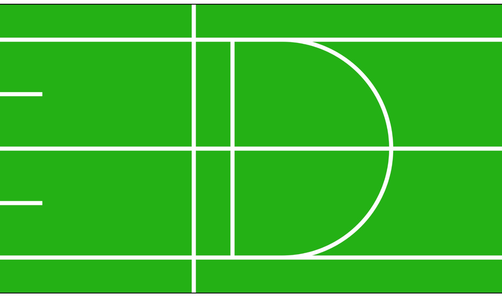
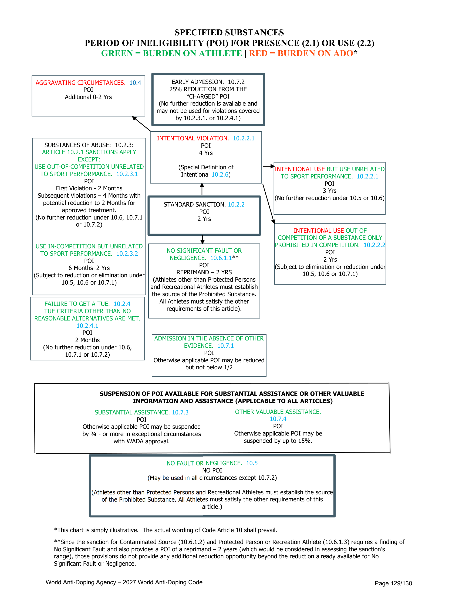
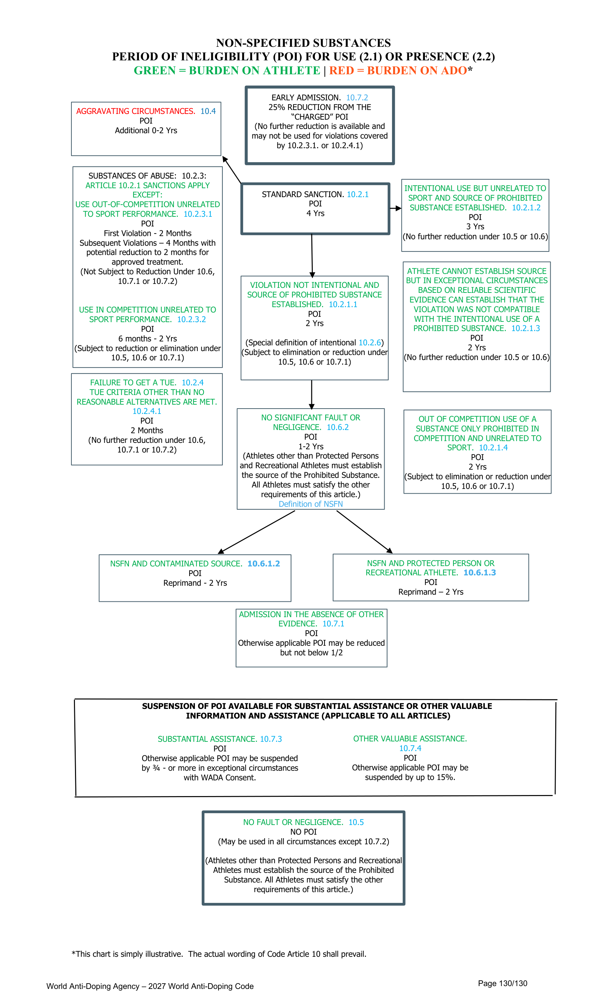

World Anti-Doping Code · Code
Edition 2027 (version 1.0) · effective 1 January 2027 · current
Retrieved on 26 November 2026 from https://www.wada-ama.org/sites/default/files/2026-10/2027_world_anti-doping_code_code_october_final.pdf
Editions: 2027 (current) · 2021 · 2015 (2019 amendments) · 2015 (2018 amendments) · 2015 · 2009 · 2003
p. 1
2027 World Anti-Doping Code

Version 1.0
p. 2
World Anti-Doping Code
The World Anti-Doping Code was first adopted in 2003 and took effect in 2004. It was subsequently amended five times, the first time effective 1 January 2009, the second time effective 1 January 2015, the third time effective 1 April 2018 (compliance amendments), the fourth time effective 1 June 2019 (reporting of certain endogenous substances as Atypical Findings), and the fifth time effective 1 January 2021. The revised 2027 World Anti-Doping Code is effective as of 1 January 2027.
Published by:
World Anti-Doping Agency Stock Exchange Tower 800 Place Victoria (Suite 1700) PO Box 120 Montreal, Quebec, Canada H3C 0B4 www.wada-ama.org
Tel: +1 514 904 9232
Fax: +1 514 904 8650
E-mail: code@wada-ama.org
p. 3
p. 4
p. 5
p. 6
p. 7
p. 8
p. 9
p. 10
Purposes, Scope and Organization of the World Anti-Doping Program
Purposes and Scope
The purposes of the World Anti-Doping Program are:
- To protect the Athletes' fundamental right to participate in doping-free sport and thus promote health, fairness and equality for Athletes worldwide, and
- To ensure harmonized, coordinated and effective anti-doping programs at the international and national level with regard to the prevention of doping, including:
Education - to protect clean sport by preventing unintentional and intentional anti-doping rule violations through raising awareness, providing information, instilling and reinforcing values and developing behaviors that support Athletes, Athlete Support Personnel and other Persons to act in accordance with the Code.
Deterrence - to divert potential dopers, through ensuring that robust rules and sanctions are in place and salient for all stakeholders.
Detection - an effective Testing and investigations system not only enhances a deterrent effect, but also is effective in protecting clean Athletes and the spirit of sport by catching those committing anti-doping rule violations, while also helping to disrupt anyone engaged in doping behavior.
Enforcement - to adjudicate and sanction those found to have committed an anti-doping rule violation.
Compliance - to support, monitor and enforce compliance with the Code and International Standards.
Rule of law - to ensure that all relevant stakeholders have agreed to submit to the Code and the International Standards, and that all measures taken in application of their anti-doping programs respect the Code, the International Standards, human rights and the principle of proportionality.
Organization
The World Anti-Doping Program encompasses all of the elements needed in order to ensure optimal harmonization and best practice in international and national Anti-Doping programs. The main elements are:
Level 1: The World Anti-Doping Code
The Code is the fundamental and universal document upon which the World Anti-Doping Program in sport is based. The purpose of the Code is to advance the anti-doping effort through universal harmonization of core anti-doping elements. It is intended to be specific enough to achieve complete harmonization on issues where uniformity is required, yet general enough in other areas to permit flexibility on how agreed-upon anti-doping principles are implemented. The Code has been drafted giving consideration to human rights and the principle of proportionality.
[Comment: The Olympic Charter and the International Convention against Doping in Sport 2005 adopted in Paris on 19 October 2005 ("UNESCO Convention"), both recognize the prevention of and the fight against doping in sport as a critical part of the mission of the International Olympic Committee and UNESCO, and also recognize the fundamental role of the Code.]
p. 11
Level 2: International Standards, Technical Documents and Technical Letters
International Standards
International Standards for different technical and operational areas within the anti-doping program have been and will be developed in consultation with Signatories, governments and other relevant stakeholders and approved by WADA. The purpose of the International Standards is harmonization among Anti-Doping Organizations and *WADA-*accredited or approved laboratories responsible for specific technical and operational parts of anti-doping programs. Adherence to the International Standards is mandatory for compliance with the Code. The International Standards may be revised from time to time by the WADA Executive Committee after reasonable consultation with Signatories, governments and other relevant stakeholders. International Standards and all revisions will be published on the WADA website and shall become effective on the date specified in the International Standard or revision.
[Comment: The International Standards contain much of the technical detail necessary for implementing the Code and will be developed by subject matter experts and set forth in separate documents. It is important that the WADA Executive Committee be able to make timely changes to the International Standards without requiring any amendment of the Code.]
Technical Documents
Technical Documents relating to mandatory technical requirements for the implementation of an International Standard may be approved and published from time to time by the WADA Executive Committee. Adherence to Technical Documents is mandatory for compliance with the Code. Where the implementation of a new or revised Technical Document is not time sensitive, the WADA Executive Committee shall allow for reasonable consultation with Signatories, governments and other relevant stakeholders. Technical Documents shall become effective immediately upon publication on the WADA website unless a later date is specified.
[Comment: For example, where an additional analytical procedure is required before reporting a Sample as an Adverse Analytical Finding, that procedure would be mandated in a Technical Document issued immediately by the WADA Executive Committee.]
Technical Letters
Technical Letters relating to mandatory technical requirements for the analysis, interpretation and reporting of specific Prohibited Substances and/or Prohibited Method(s) or on the application of specific Laboratory or Athlete Biological Passport Laboratory procedures may be approved and published from time to time by the WADA Executive Committee. Adherence to Technical Letters is mandatory for compliance with the Code.
Level 3: Guidelines and Templates
Guidelines and templates based on the Code and International Standards have been and will be developed to provide solutions in different areas of anti-doping. The guidelines and templates will be recommended by WADA and made available to Signatories and other relevant stakeholders but will not be mandatory. In addition to providing templates of anti-doping documentation, WADA will also make training available to Signatories.
[Comment: These templates may provide alternatives from which stakeholders may select. Some stakeholders may choose to adopt the templates and other models of best practices verbatim. Others may decide to adopt the templates with modifications. Still other stakeholders may choose to develop their own rules consistent with the general principles and specific requirements set forth in the Code.
Guidelines or templates for specific parts of anti-doping work have been developed and may continue to be developed based on generally recognized stakeholder needs and expectations.]
p. 12
p. 13
Fundamental Rationale for the World Anti-Doping Code
Anti-doping is primarily an ethical position based on a vision of the spirit of sport.
Anti-doping programs are founded on the intrinsic value of sport. This intrinsic value is known as "the spirit of sport": the ethical pursuit of athletic excellence through the dedicated perfection of each Athlete's natural talents. Anti-doping endeavors to preserve the spirit of sport.
Anti-doping programs seek to maintain the integrity of sport in terms of respect for the rules and other competitors, the right to fair competition, and the value of clean sport to the world.
The spirit of sport is the celebration of the human spirit, body and mind. It is reflected in the following values we find in and through sport, including:
- Community
- Equality
- Fun and joy
- Respect
- Solidarity
Therefore, in the spirit of sport, Athletes demonstrate values such as:
- Accomplishment
- Commitment
- Courage
- Discipline
- Excellence in performance
- Fair play
- Honesty
- Personal responsibility
Equally, Athlete Support Personnel have a fundamental role to both demonstrate and promote these values, including the fun and joy of sport, to ensure positive sporting experiences for Athletes.
Anti-doping programs seek both to protect the health of Athletes and to provide the opportunity for Athletes to develop and express their athletic abilities without the Use of Prohibited Substances and Methods.
Values embedded in anti-doping programs include:
- Athletes' rights and responsibilities as set forth in the Code
- Cooperation with others
- Education and knowledge
- Fairness
p. 14
- Health
- Respect for human rights
- Respect for rules, laws and justice
The spirit of sport is expressed in how we 'Play True'. Doping is fundamentally contrary to the spirit of sport.
p. 15
PART ONE DOPING CONTROL
p. 16
Introduction
Part One of the Code sets forth specific anti-doping rules and principles that are to be followed by organizations responsible for adopting, implementing or enforcing anti-doping rules within their authority, e.g., the International Olympic Committee, International Paralympic Committee, International Federations, National Olympic Committees and Paralympic Committees, Major Event Organizations, National Anti-Doping Organizations and WADA. All such organizations are collectively referred to as Anti-Doping Organizations.
All provisions of the Code are mandatory in substance and shall be followed as applicable by each Anti-Doping Organization and Athlete or other Person. The Code does not, however, replace or eliminate the need for comprehensive anti-doping rules to be adopted by each Anti-Doping Organization. While some provisions of the Code shall be incorporated without substantive change by each Anti-Doping Organization in its own anti-doping rules, other provisions of the Code establish mandatory guiding principles that allow flexibility in the formulation of rules by each Anti-Doping Organization or establish requirements that shall be followed by each Anti-Doping Organization but need not be repeated in its own anti-doping rules.
[Comment: Those Articles of the Code which shall be incorporated into each Anti-Doping Organization's rules without substantive change are set forth in Article 23.2.2. For example, it is critical for purposes of harmonization that all Signatories base their decisions on the same list of anti-doping rule violations, the same burdens of proof and impose the same Consequences for the same anti-doping rule violations. These rules shall be the same whether a hearing takes place before an International Federation, at the national level or before the Court of Arbitration for Sport (CAS).
Code provisions not listed in Article 23.2.2 are still mandatory in substance even though an Anti-Doping Organization is not required to incorporate them verbatim. Those provisions generally fall into two categories. First, some provisions direct Anti-Doping Organizations to take certain actions but there is no need to restate the provision in the Anti-Doping Organization's own anti-doping rules. For example, each Anti-Doping Organization shall plan and conduct Testing as required by Article 5, but these directives to the Anti-Doping Organization need not be repeated in the Anti-Doping Organization's own rules. Second, some provisions are mandatory in substance but give each Anti-Doping Organization some flexibility in the implementation of the principles stated in the provision. As an example, it is not necessary for effective harmonization to force all Signatories to use one single Results Management process as long as the process utilized satisfies the requirements stated in the Code and the International Standard for Results Management.]
Anti-doping rules, like competition rules, are sport rules governing the conditions under which sport is played. Athletes, Athlete Support Personnel or other Persons (including board members, directors, officers, and specified employees and Delegated Third Parties and their employees) accept these rules as a condition of participation or involvement in sport and shall be bound by these rules. Each Signatory shall establish rules and procedures to ensure that all Athletes, Athlete Support Personnel or other Persons under the authority of the Signatory and its member organizations are informed of and agree to be bound by anti-doping rules in force of the relevant Anti-Doping Organizations.
[Comment: Where the Code requires a Person other than an Athlete or Athlete Support Person to be bound by the Code, such Person would of course not be subject to Sample collection or Testing, and would not be charged with an anti-doping rule violation under the Code for Use or Possession of a Prohibited Substance or Prohibited Method. Rather, such Person would only be subject to discipline for a violation of Code Articles 2.5 (Tampering), 2.7 (Trafficking), 2.8 (Administration), 2.9 (Complicity), 2.10 (Prohibited Association) and 2.11 (Retaliation). Furthermore, such Person would be subject to the additional roles and responsibilities according to Article 21.3. Also, the obligation to require an employee to be bound by the Code is subject to applicable law.]
Each Signatory shall establish rules and procedures to ensure that all Athletes, Athlete Support Personnel or other Persons under the authority of the Signatory and its member organizations are informed of the dissemination of their private data as required or authorized by the Code, and are bound by and compliant with the anti-doping rules found in the Code, and that the appropriate Consequences are imposed on those Athletes or other Persons who breach those rules. These sport-specific rules and procedures, aimed at enforcing anti-doping rules in a global and harmonized way, are distinct in nature from criminal and civil proceedings. They are not intended to be subject to or limited by any national requirements and legal standards applicable to such proceedings, although they are intended to be applied in a manner which respects human rights and the principle of proportionality. When reviewing the facts and the law of a given case, all courts, arbitral hearing panels and other adjudicating bodies should be aware of and respect the distinct nature of the anti-doping rules in the Code and the fact that those rules represent the consensus of a broad spectrum of stakeholders around the world with an interest in fair sport.
p. 17
As provided in the Code, each Anti-Doping Organization shall be responsible for conducting all aspects of Doping Control. Subject to the requirements in Article 20 of the Code, any aspect of Doping Control or anti-doping Education may be delegated by an Anti-Doping Organization to a Delegated Third Party, however, the delegating Anti-Doping Organization shall require the Delegated Third Party to perform such aspects in compliance with the Code and International Standards, and the Anti-Doping Organization shall remain fully responsible for ensuring that any delegated aspects are performed in compliance with the Code.
Article 1 Definition of Doping
Doping is defined as the occurrence of one or more of the anti-doping rule violations set forth in Article 2.1 through Article 2.11 of the Code.
Article 2 Anti-Doping Rule Violations
The purpose of Article 2 is to specify the circumstances and conduct which constitute anti-doping rule violations. Hearings in doping cases will proceed based on the assertion that one or more of these specific rules have been violated.
Athletes or other Persons shall be responsible for knowing what constitutes an anti-doping rule violation and the substances and methods which have been included on the Prohibited List.
The following constitute anti-doping rule violations:
2.1 Presence of a Prohibited Substance or its Metabolites or Markers in an Athlete's Sample
Cited by 11
2.1.1 It is the Athletes' personal duty to ensure that no Prohibited Substance enters their bodies. Athletes are responsible for any Prohibited Substance or its Metabolites or Markers found to be present in their Samples. Accordingly, it is not necessary that intent, Fault, Negligence or knowing Use on the Athlete's part be demonstrated in order to establish an anti-doping rule violation under Article 2.1.
[Comment to Article 2.1.1: An anti-doping rule violation is committed under this Article without regard to an Athlete's Fault. This rule has been referred to in various CAS decisions as "Strict Liability". An Athlete's Fault is taken into consideration in determining the Consequences of this anti-doping rule violation under Article 10. This principle has consistently been upheld by CAS. An anti-doping rule violation for Presence is established when a Prohibited Substance is detected in the Sample of an Athlete who was subject to rules adopted pursuant to the Code at the time of Sample collection, regardless of whether the Athlete was subject to the Code at the time the Prohibited Substance was Used.]
2.1.2 Sufficient proof of an anti-doping rule violation under Article 2.1 is established by any of the following: presence of a Prohibited Substance or its Metabolites or Markers in the Athlete's A Sample where the Athlete waives analysis of the B Sample and the B Sample is not analyzed; or, where the Athlete's B Sample is analyzed and the analysis of the Athlete's B Sample confirms the presence of the Prohibited Substance or its Metabolites or Markers found in the Athlete's A Sample; or where the Athlete's A or B Sample is split into two parts and the analysis of the confirmation part of the split Sample confirms the presence of the Prohibited Substance or its Metabolites or
Cited by 1
p. 18
Markers found in the first part of the split Sample or the Athlete waives analysis of the confirmation part of the split Sample.
[Comment to Article 2.1.2: The Anti-Doping Organization with Results Management authority may, at its discretion, choose to have the B Sample analyzed even if the Athlete does not request the analysis of the B Sample.]
2.1.3 Excepting those substances for which a Decision Limit is specifically identified in the Prohibited List or a Technical Document, the presence of any reported quantity of a Prohibited Substance or its Metabolites or Markers in an Athlete's Sample shall constitute an anti-doping rule violation.
2.1.4 As an exception to the general rule of Article 2.1, the Prohibited List, International Standards, or Technical Documents may establish special criteria for reporting or the evaluation of certain Prohibited Substances.
2.2 Use or Attempted Use by an Athlete of a Prohibited Substance or a Prohibited Method
Cited by 8
[Comment to Article 2.2: It has always been the case that Use or Attempted Use of a Prohibited Substance or Prohibited Method may be established by any reliable means. As noted in the Comment to Article 3.2, unlike the proof required to establish an anti-doping rule violation under Article 2.1, Use or Attempted Use may also be established by other reliable means such as admissions by the Athlete, witness statements, documentary evidence, conclusions drawn from longitudinal profiling, including data collected as part of the Athlete Biological Passport, or other analytical information which does not otherwise satisfy all the requirements to establish "Presence" of a Prohibited Substance under Article 2.1.
For example, Use may be established based upon reliable analytical data from the analysis of an A Sample (without confirmation from an analysis of a B Sample) or from the analysis of a B Sample alone where the Anti-Doping Organization provides a satisfactory explanation for the lack of confirmation in the other Sample.]
2.2.1 It is the Athletes' personal duty to ensure that no Prohibited Substance enters their bodies and that no Prohibited Method is Used. Accordingly, it is not necessary that intent, Fault, Negligence or knowing Use on the Athlete's part be demonstrated in order to establish an anti-doping rule violation for Use of a Prohibited Substance or a Prohibited Method.
2.2.2 The success or failure of the Use or Attempted Use of a Prohibited Substance or Prohibited Method is not material. It is sufficient that the Prohibited Substance or Prohibited Method was Used or Attempted to be Used for an anti-doping rule violation to be committed.
[Comment to Article 2.2.2: Demonstrating the "Attempted Use" of a Prohibited Substance or a Prohibited Method requires proof of intent on the Athlete's part. The fact that intent may be required to prove this particular anti-doping rule violation does not undermine the Strict Liability principle established for violations of Article 2.1 and violations of Article 2.2 in respect of Use of a Prohibited Substance or Prohibited Method.
An Athlete's Use of a Prohibited Substance constitutes an anti-doping rule violation unless such Substance is not prohibited Out-of-Competition and the Athlete's Use takes place Out-of-Competition. (However, the presence of a Prohibited Substance or its Metabolites or Markers in a Sample collected In-Competition is a violation of Article 2.1 regardless of when that Substance might have been administered.)
To establish an anti-doping rule violation under this Article 2.2, the alleged Use or Attempted Use shall have occurred when the Athlete was bound by rules adopted pursuant to the Code. However, this does not preclude an Anti-Doping Organization or other sport organization from adopting and enforcing eligibility rules that allow the organization to deny or revoke the membership of a Person who engaged in conduct, before being bound by rules adopted pursuant to the Code, where such conduct would have constituted an anti-doping rule violation had it occurred while the Person was bound by rules adopted pursuant to the Code.]
2.3 Evading, Refusing or Failing to Submit to Sample Collection by an Athlete
Cited by 10
Evading Sample collection; or refusing or failing to submit to Sample collection without compelling justification after notification by a duly authorized Person.
[Comment to Article 2.3: For example, it would be an anti-doping rule violation of "evading Sample collection" if it were established that an Athlete was deliberately avoiding a Doping Control official to evade notification or Testing. A violation of "failing to submit to Sample collection" may be based on either intentional or negligent conduct of the Athlete, while "evading" or "refusing" Sample collection contemplates intentional conduct by the Athlete.]
p. 19
2.4 Whereabouts Failures by an Athlete
Cited by 23
- ISRM 2027 – annex-b.1.1
- ISRM 2027 – comment-b.1.1
- ISRM 2027 – annex-b.1.2
- ISRM 2027 – annex-b.1.3
- ISRM 2027 – annex-b.1.4
- ISRM 2027 – comment-b.1.4
- ISRM 2027 – annex-b.3.4
- ISRM 2027 – comment-b.3.4-e
- ISRM 2027 – comment-b.3.5
- ISRM 2027 – annex-b.3.6
- ISRM 2027 – comment-b.3.6
- ISRM 2027 – annex-b.3.7
- ISRM 2027 – annex-b.3.8
- IST 2027 – Art. 4.10.4.1
- IST 2027 – comment-4.10.5.1
- IST 2027 – Art. 4.10.5.2
- IST 2027 – comment-4.10.5.2-b
- IST 2027 – Art. 4.10.5.4
- IST 2027 – comment-4.10.13.5
- IST 2027 – comment-4.10.13.6-b-ii
- IST 2027 – Art. 4.10.13.8
- IST 2027 – def-code-article-2.4-whereabouts-requirements
- ISRM INTERNATIONAL STANDARD FOR RESULTS MANAGEMENT – SUMMARY OF MAJOR CHANGES MADE TO THE FIRST DRAFT
Any combination of three missed tests and/or filing failures, as defined in the International Standard for Results Management, within a twelve-month period by an Athlete in a Registered Testing Pool.
2.5 Tampering or Attempted Tampering with any Part of Doping Control by an Athlete or Other Person
Cited by 10
[Comment to Article 2.5: The mere failure by an Athlete, Athlete Support Person or other Person to cooperate with Anti-Doping Organizations investigating anti-doping rule violations or violations of Article 10.14.1 does not constitute Tampering under Article 2.5. Such failure to cooperate may, however, be the basis for disciplinary action under a Signatory's rules where such rules include appropriate procedural safeguards.]
2.6 Possession of a Prohibited Substance or a Prohibited Method by an Athlete or Athlete Support Person
2.6.1 Possession by an Athlete In-Competition of any Prohibited Substance or any Prohibited Method, or Possession by an Athlete Out-of-Competition of any Prohibited Substance or any Prohibited Method which is prohibited Out-of-Competition unless the Athlete establishes that the Possession is consistent with a Therapeutic Use Exemption granted in accordance with Article 4.4 or other acceptable justification.
[Comment to Articles 2.6.1 and 2.6.2: Acceptable justification would not include, for example, buying or Possessing a Prohibited Substance for purposes of giving it to a friend or relative, except under justifiable medical circumstances where that Person had a physician's prescription, e.g., buying Insulin for a diabetic child.]
2.6.2 Possession by an Athlete Support Person In-Competition of any Prohibited Substance or any Prohibited Method, or Possession by an Athlete Support Person Out-ofCompetition of any Prohibited Substance or any Prohibited Method which is prohibited Out-of-Competition in connection with an Athlete, competition or training, unless the Athlete Support Person establishes that the Possession is consistent with a Therapeutic Use Exemption granted to an Athlete in accordance with Article 4.4 or other acceptable justification.
[Comment to Articles 2.6.1 and 2.6.2: Acceptable justification may include, for example, (a) an Athlete or a team doctor carrying Prohibited Substances or Prohibited Methods for dealing with acute and emergency situations (e.g., an epinephrine auto-injector), or (b) an Athlete Possessing a Prohibited Substance or Prohibited Method for therapeutic reasons shortly prior to applying for and receiving a determination on a Therapeutic Use Exemption.]
2.7 Trafficking or Attempted Trafficking by an Athlete or Other Person.
2.8 Administration or Attempted Administration by an Athlete or Other Person
Cited by 1
2.9 Complicity or Attempted Complicity by an Athlete or Other Person
Assisting, encouraging, aiding, abetting, conspiring, covering up or any other type of intentional complicity or Attempted complicity involving an anti-doping rule violation, Attempted anti-doping rule violation or violation of Article 10.14.1 by another Person.
[Comment to Article 2.9: Complicity or Attempted Complicity may include either physical or psychological assistance.]
p. 20
2.10 Prohibited Association by an Athlete or Other Person
2.10.1 Association by an Athlete or other Person subject to the authority of an Anti-Doping Organization in a professional or sport-related capacity with any Athlete Support Person who:
2.10.1.1 If subject to the authority of an Anti-Doping Organization, is serving a period of Ineligibility; or
2.10.1.2 If not subject to the authority of an Anti-Doping Organization, and where Ineligibility has not been addressed in a Results Management process pursuant to the Code, has been convicted or found in a criminal, disciplinary or professional proceeding to have engaged in conduct which would have constituted a violation of anti-doping rules if Code-compliant rules had been applicable to such Person. The disqualifying status of such Person shall be in force for the longer of six (6) years from the criminal, professional or disciplinary decision or the duration of the criminal, disciplinary or professional sanction imposed; or
2.10.1.3 Is serving as a front or intermediary for an individual described in Articles 2.10.1.1 or 2.10.1.2.
2.10.2 To establish a violation of Article 2.10, an Anti-Doping Organization shall establish that the Athlete or other Person knew of the Athlete Support Person's disqualifying status.
The burden shall be on the Athlete or other Person to establish that any association with an Athlete Support Person described in Articles 2.10.1.1 or 2.10.1.2 is not in a professional or sport-related capacity and/or that such association could not have been reasonably avoided.
Anti-Doping Organizations that are aware of Athlete Support Personnel who meet the criteria described in Articles 2.10.1.1, 2.10.1.2, or 2.10.1.3 shall submit that information to WADA.
[Comment to Article 2.10: Athletes and other Persons shall not work with coaches, trainers, physicians or other Athlete Support Personnel who are Ineligible on account of an anti-doping rule violation or who have been criminally convicted or professionally disciplined in relation to doping. This also prohibits association with any other Athlete who is acting as a coach or Athlete Support Person while serving a period of Ineligibility. Some examples of the types of association which are prohibited include: obtaining training, strategy, technique, nutrition or medical advice; obtaining therapy, treatment or prescriptions; providing any bodily products for analysis; or allowing the Athlete Support Person to serve as an agent or representative. Prohibited association need not involve any form of compensation.
While Article 2.10 does not require the Anti-Doping Organization to notify the Athlete or other Person about the Athlete Support Person's disqualifying status, such notice, if provided, would be important evidence to establish that the Athlete or other Person knew about the disqualifying status of the Athlete Support Person.]
2.11 Acts by an Athlete or Other Person to Discourage or Retaliate Against Reporting to Authorities
Where such conduct does not otherwise constitute a violation of Article 2.5:
2.11.1 Any act which threatens or seeks to intimidate another Person with the intent of discouraging the Person from the good-faith reporting of information that relates to an alleged anti-doping rule violation, an alleged violation of Article 10.14.1, or alleged non-compliance with the Code to WADA, an Anti-Doping Organization, law
p. 21
enforcement, regulatory or professional disciplinary body, hearing body or Person conducting an investigation for WADA or an Anti-Doping Organization.
2.11.2 Retaliation against a Person who, in good faith, has provided evidence or information that relates to an alleged anti-doping rule violation, an alleged violation of Article 10.14.1, or alleged non-compliance with the Code to WADA, an Anti-Doping Organization, law enforcement, regulatory or professional disciplinary body, hearing body or Person conducting an investigation for WADA or an Anti-Doping Organization.
[Comment to Article 2.11.2: This Article is intended to protect Persons who make good faith reports, and does not protect Persons who knowingly make false reports.]
For purposes of Article 2.11, retaliation, threatening and intimidation include an act taken against such Person either because the act lacks a good faith basis or is a disproportionate response.
[Comment to Article 2.11.2: Retaliation would include, for example, actions that threaten the physical or mental well-being or economic interests of the reporting Persons, their families or associates. Retaliation would not include an Anti-Doping Organization asserting in good faith an anti-doping rule violation against the reporting Person. For purposes of Article 2.11, a report is not made in good faith where the Person making the report knows the report to be false.]
Article 3 Proof of Doping
Cited by 2
3.1 Burdens and Standards of Proof
The Anti-Doping Organization shall have the burden of establishing that an anti-doping rule violation, or a violation of Article 10.14.1 has occurred. The standard of proof shall be whether the Anti-Doping Organization has established an anti-doping rule violation, or a violation of Article 10.14.1 to the comfortable satisfaction of the hearing panel, bearing in mind the seriousness of the allegation which is made. This standard of proof in all cases is greater than a mere balance of probability but less than proof beyond a reasonable doubt. Where the Code places the burden of proof upon the Athlete or other Person alleged to have committed an anti-doping rule violation, or violation of Article 10.14.1 to rebut a presumption or establish specified facts or circumstances, except as provided in Articles 3.2.2, 3.2.3 and 10.2.1.3, the standard of proof shall be by a balance of probability.
[Comment to Article 3.1: This standard of proof required to be met by the Anti-Doping Organization is comparable to the standard which is applied in most countries to cases involving professional misconduct.]
3.2 Methods of Establishing Facts and Presumptions
Facts related to anti-doping rule violations, or violations of Article 10.14.1 may be established by any reliable means, including admissions. The following rules of proof shall be applicable in doping cases:
[Comment to Article 3.2: For example, an Anti-Doping Organization may establish an anti-doping rule violation under Article 2.2 based on the Athlete's admissions, the credible testimony of third Persons, reliable documentary evidence, reliable analytical data from either an A or B Sample as provided in the Comments to Article 2.2, or conclusions drawn from the profile of a series of the Athlete's blood or urine Samples, such as data from the Athlete Biological Passport. The results of lie-detector tests shall not be considered reliable analytical or scientific evidence.]
3.2.1 Analytical methods or Decision Limits approved by WADA after consultation within the relevant scientific community or which have been the subject of peer review are presumed to be scientifically valid. Any Athlete or other Person seeking to challenge whether the conditions for such presumption have been met or to rebut this presumption of scientific validity shall, as a condition precedent to any such challenge,
p. 22
first notify WADA of the challenge and the basis of the challenge. The initial hearing body, appellate body or CAS, on its own initiative, may also inform WADA of any such challenge. Within ten (10) days of WADA's receipt of such notice and the case file related to such challenge, WADA shall also have the right to intervene as a party, appear as amicus curiae or otherwise provide evidence in such proceeding. In cases before CAS, at WADA's request, the CAS panel shall appoint an appropriate scientific expert to assist the panel in its evaluation of the challenge.
[Comment to Article 3.2.1: For certain Prohibited Substances, WADA may instruct WADA-accredited laboratories not to report Samples as an Adverse Analytical Finding if the estimated concentration of the Prohibited Substance or its Metabolites or Markers is below a Minimum Reporting Level. WADA's decision in determining that Minimum Reporting Level or in determining which Prohibited Substances should be subject to Minimum Reporting Levels shall not be subject to challenge. Further, the laboratory's estimated concentration of such Prohibited Substance in a Sample may only be an estimate. In no event shall the possibility that the exact concentration of the Prohibited Substance in the Sample may be below the Minimum Reporting Level constitute a defense to an anti-doping rule violation based on the presence of that Prohibited Substance in the Sample.]
3.2.2 WADA-accredited laboratories, and other laboratories approved by WADA, are presumed to have conducted Sample analysis and custodial procedures in accordance with the International Standard for Laboratories. The Athlete or other Person may rebut this presumption by establishing that a departure from the International Standard for Laboratories occurred which could reasonably have caused the Adverse Analytical Finding.
If the Athlete or other Person rebuts the preceding presumption by showing that a departure from the International Standard for Laboratories occurred which could reasonably have caused the Adverse Analytical Finding, then the Anti-Doping Organization shall have the burden to establish that such departure did not cause the Adverse Analytical Finding.
[Comment to Article 3.2.2: The burden is on the Athlete or other Person to establish, by a balance of probability, a departure from the International Standard for Laboratories that could reasonably have caused the Adverse Analytical Finding. Thus, once the Athlete or other Person establishes the departure by a balance of probability, the Athlete or other Person's burden on causation is the somewhat lower standard of proof-"could reasonably have caused." If the Athlete or other Person satisfies these standards, the burden shifts to the Anti-Doping Organization to prove to the comfortable satisfaction of the hearing panel that the departure did not cause the Adverse Analytical Finding.]
3.2.3 Departures from any other International Standard or other anti-doping rule or policy set forth in the Code or in an Anti-Doping Organization's rules shall not invalidate analytical results or other evidence of an anti-doping rule violation, and shall not constitute a defense to an anti-doping rule violation; provided, however, if the Athlete or other Person establishes that a departure from one of the specific International Standard provisions listed below could reasonably have caused an anti-doping rule violation based on an Adverse Analytical Finding or whereabouts failure, then the Anti-Doping Organization shall have the burden to establish that such departure did not cause the Adverse Analytical Finding or whereabouts failure:
[Comment to Article 3.2.3: Departures from an International Standard or other rule unrelated to Sample collection or handling, Adverse Passport Finding, or Athlete notification relating to whereabouts failure or B Sample opening - e.g., the International Standard for Education, International Standard for Data Protection, International Standard for Intelligence and Investigations or International Standard for Therapeutic Use Exemptions - may result in compliance proceedings by WADA but are not a defense in an anti-doping rule violation proceeding and are not relevant on the issue of whether the Athlete committed an anti-doping rule violation. Similarly, a Signatory's violation of its anti-doping Education responsibilities under Article 20 shall not constitute a defense to an anti-doping rule violation.]
[Comment to Article 3.2.3: For the avoidance of doubt, an Athlete's assertion of an alleged "fundamental" breach of any International Standard or other anti-doping rule or policy set forth in the Code or in an Anti-Doping Organization's rules cannot invalidate an Adverse Analytical Finding or anti-doping rule violation unless the Athlete can also establish that the breach could reasonably have caused the Adverse Analytical Finding or anti-doping rule violation.]
(i) a departure from the International Standard for Testing related to Sample collection or Sample handling which could reasonably have caused an anti-
p. 23
doping rule violation based on an Adverse Analytical Finding, in which case the Anti-Doping Organization shall have the burden to establish that such departure did not cause the Adverse Analytical Finding;
(ii) a departure from the International Standard for Results Management or International Standard for Testing related to an Adverse Passport Finding which could reasonably have caused an anti-doping rule violation, in which case the Anti-Doping Organization shall have the burden to establish that such departure did not cause the anti-doping rule violation;
(iii) a departure from the International Standard for Results Management related to the requirement to provide notice to the Athlete of the B Sample opening which could reasonably have caused an anti-doping rule violation based on an Adverse Analytical Finding, in which case the Anti-Doping Organization shall have the burden to establish that such departure did not cause the Adverse Analytical Finding;
(iv) a departure from the International Standard for Results Management related to Athlete notification or attempts to locate the Athlete which could reasonably have caused an anti-doping rule violation based on a whereabouts failure, in which case the Anti-Doping Organization shall have the burden to establish that such departure did not cause the whereabouts failure.
[Comment to Article 3.2.3 (iii): An Anti-Doping Organization would meet its burden to establish that such departure did not cause the Adverse Analytical Finding by showing that, for example, the B Sample opening and analysis were observed by an independent witness and no irregularities were observed.]
3.2.4 The facts established by a decision of a court or professional disciplinary tribunal of competent jurisdiction which is not the subject of a pending appeal shall be irrebuttable evidence against the Athlete or other Person to whom the decision pertained (and who has been charged with an anti-doping rule violation or violation of Article 10.14.1) of those facts unless the Athlete or other Person establishes that the decision violated principles of natural justice.
[Comment to Article 3.2.4: For the avoidance of doubt, this provision shall not apply to decisions on provisional suspensions.]
3.2.5 The hearing panel in a hearing on an anti-doping rule violation, or a violation of Article 10.14.1 may draw an inference adverse to the Athlete or other Person who is asserted to have committed an anti-doping rule violation, or a violation of Article 10.14.1 based on the Athlete's or other Person's refusal, after a request made in a reasonable time in advance of the hearing, to appear at the hearing (either in person or telephonically as directed by the hearing panel) and to answer questions from the hearing panel or the Anti-Doping Organization asserting the anti-doping rule violation, or violation of Article 10.14.1.
p. 24
Article 4 The Prohibited List
4.1 Publication and Revision of the Prohibited List
WADA shall, as often as necessary and no less often than annually, publish the Prohibited List as an International Standard. The proposed content of the Prohibited List and all revisions shall be provided in writing promptly to all Signatories and governments for comment and consultation. Each annual version of the Prohibited List and all revisions shall be distributed promptly by WADA to each Signatory, WADA-accredited or approved laboratory, and government, and shall be published on WADA's website, and each Signatory shall take appropriate steps to distribute the Prohibited List to its members and constituents. The rules of each Anti-Doping Organization shall specify that, unless provided otherwise in the Prohibited List or a revision, the Prohibited List and revisions shall go into effect under the Anti-Doping Organization's rules three (3) months after publication of the Prohibited List by WADA without requiring any further action by the Anti-Doping Organization.
4.2 Prohibited Substances and Prohibited Methods Identified on the Prohibited List
4.2.1 Prohibited Substances and Prohibited Methods
The Prohibited List shall identify those Prohibited Substances and Prohibited Methods which are prohibited as doping at all times (both In-Competition and Out-ofCompetition) because of their potential to enhance performance in future Competitions or their masking potential, and those substances and methods which are prohibited In-Competition only. The Prohibited List may be expanded by WADA for a particular sport. Prohibited Substances and Prohibited Methods may be included in the Prohibited List by general category (e.g., anabolic agents) or by specific reference to a particular substance or method.
[Comment to Article 4.2.1: Out-of-Competition Use of a Substance which is only prohibited In-Competition is not an anti-doping rule violation unless an Adverse Analytical Finding for the Substance or its Metabolites or Markers is reported for a Sample collected In-Competition.]
4.2.2 Specified Substances or Specified Methods
Cited by 1
For purposes of the application of Article 10, all Prohibited Substances shall be Specified Substances except as identified on the Prohibited List. No Prohibited Method shall be a Specified Method unless it is specifically identified as a Specified Method on the Prohibited List. Specified Substances and Specified Methods identified in this Article should not in any way be considered less important or less dangerous than other doping Substances or Methods. Rather, they are simply Substances and Methods which are more likely to have been consumed or used by an Athlete for a purpose other than the enhancement of sport performance.
[Comment to Article 4.2.2: Prohibited Substances which are more likely to have been consumed or used by an Athlete for a purpose other than the enhancement of sport performance would include, for example, marijuana or prohibited stimulants found in cold medications.]
4.2.3 Substances of Abuse
Cited by 1
For purposes of applying Article 10, Substances of Abuse are those Prohibited Substances which are specifically identified as Substances of Abuse on the Prohibited List because they are more frequently abused in society outside of the context of sport.
p. 25
4.2.4 New Classes of Prohibited Substances or Prohibited Methods
In the event WADA expands the Prohibited List by adding a new class of Prohibited Substances or Prohibited Methods in accordance with Article 4.1, WADA's Executive Committee shall determine whether any or all Prohibited Substances or Prohibited Methods within the new class shall be considered Specified Substances or Specified Methods under Article 4.2.2 or Substances of Abuse under Article 4.2.3.
4.3 Criteria for Including Substances and Methods on the Prohibited List
WADA shall consider the following criteria in deciding whether to include a substance or method on the Prohibited List:
4.3.1 A substance or method shall be considered for inclusion on the Prohibited List if WADA, in its sole discretion, determines that the substance or method meets any two of the following three criteria:
4.3.1.1 WADA's determination, after consultation with the Prohibited List Expert Advisory Group, that the substance or method, alone or in combination with other substances or methods, has the potential to enhance or enhances sport performance;
[Comment to Article 4.3.1.1: This Article anticipates that there may be Substances that, when Used alone, are not prohibited but which will be prohibited if Used in combination with certain other Substances. A Substance which is added to the Prohibited List because it has the potential to enhance performance only in combination with another Substance shall be so noted and shall be prohibited only if there is evidence relating to both Substances in combination.]
4.3.1.2 WADA's determination, after consultation with the Prohibited List Expert Advisory Group, that the Use of the substance or method represents an actual or potential health risk to the Athlete; or
4.3.1.3 WADA's determination that the Use of the substance or method violates the spirit of sport described in the introduction to the Code.
4.3.2 A substance or method shall also be included on the Prohibited List if WADA determines there is scientific evidence that the substance or method has the potential to mask the Use of other Prohibited Substances or Prohibited Methods.
[Comment to Article 4.3.2: As part of the process each year, all Signatories, governments and other interested Persons are invited to provide comments to WADA on the content of the Prohibited List.]
4.3.3 WADA's determination of the Prohibited Substances and Prohibited Methods that will be included on the Prohibited List, the classification of substances into categories on the Prohibited List, the classification of a substance as prohibited at all times or In-Competition only, the classification of a substance or method as a Specified Substance, Specified Method or Substance of Abuse is final and shall not be subject to any challenge by an Athlete or other Person including, but not limited to, any challenge based on an argument that the substance or method was not a masking agent or did not have the potential to enhance performance, represent a health risk or violate the spirit of sport.
p. 26
4.4 Therapeutic Use Exemptions
4.4.1 The presence of a Prohibited Substance or its Metabolites or Markers, and/or the Use or Attempted Use, Possession or Administration or Attempted Administration of a Prohibited Substance or Prohibited Method shall not be considered an anti-doping rule violation if it is consistent with the provisions of a Therapeutic Use Exemption granted in accordance with the International Standard for Therapeutic Use Exemptions.
4.4.2 Athletes who are not International-Level Athletes shall apply to their National Anti-Doping Organization for a Therapeutic Use Exemption. If the National Anti-Doping Organization denies the application, the Athlete may appeal to the national-level appeal body described in Article 13.2.2, unless provided otherwise in the International Standard for Therapeutic Use Exemptions.
Cited by 1
4.4.3 Athletes who are International-Level Athletes shall apply to their International Federation.
4.4.3.1 Where the Athlete already has a Therapeutic Use Exemption granted by their National Anti-Doping Organization for the substance or method in question, if that Therapeutic Use Exemption meets the criteria set out in the International Standard for Therapeutic Use Exemptions, then the International Federation shall recognize it. If the International Federation considers that the Therapeutic Use Exemption does not meet those criteria and so refuses to recognize it, it shall notify the Athlete and the Athlete's National Anti-Doping Organization promptly, with reasons. The Athlete or the National Anti-Doping Organization shall have twenty-one (21) days from such notification to refer the matter to WADA for review. If the matter is referred to WADA for review, the Therapeutic Use Exemption granted by the National Anti-Doping Organization remains valid for national-level Competition and Out-of-Competition Testing (but is not valid for international-level Competition) pending WADA's decision. If the matter is not referred to WADA for review within the twenty-one (21) day deadline, the Athlete's National Anti-Doping Organization shall determine whether the original Therapeutic Use Exemption granted by that National Anti-Doping Organization should nevertheless remain valid for national-level Competition and Out-of-Competition Testing (provided that the Athlete ceases to be an International-Level Athlete and does not participate in international-level Competition). Pending the National Anti-Doping Organization's decision, the Therapeutic Use Exemption remains valid for national-level Competition and Out-of-Competition Testing (but is not valid for international-level Competition).
4.4.3.2 If the Athlete does not already have a Therapeutic Use Exemption granted by their National Anti-Doping Organization for the substance or method in question, the Athlete shall apply directly to the Athlete's International Federation for a Therapeutic Use Exemption. If the International Federation denies the Athlete's application, it shall notify the Athlete promptly, with reasons. If the International Federation grants the Athlete's application, it shall notify not only the Athlete but also the Athlete's National Anti-Doping Organization, and if the National Anti-Doping Organization considers that the
p. 27
Therapeutic Use Exemption does not meet the criteria set out in the International Standard for Therapeutic Use Exemptions, it has twenty-one (21) days from such notification to refer the matter to WADA for review. If the National Anti-Doping Organization refers the matter to WADA for review, the Therapeutic Use Exemption granted by the International Federation remains valid for international-level Competition and Out-of-Competition Testing (but is not valid for national-level Competition) pending WADA's decision. If the National Anti-Doping Organization does not refer the matter to WADA for review, the Therapeutic Use Exemption granted by the International Federation becomes valid for national-level Competition as well when the twenty-one (21) day review deadline expires.
4.4.4 A Major Event Organization may require Athletes to apply to it for a Therapeutic Use Exemption if they wish to Use a Prohibited Substance or a Prohibited Method in connection with the Event. In that case:
Cited by 1
4.4.4.1 The Major Event Organization shall ensure a process is available for an Athlete to apply for a Therapeutic Use Exemption if they do not already have one. If the Therapeutic Use Exemption is granted, it is effective for its Event only.
4.4.4.2 Where the Athlete already has a Therapeutic Use Exemption granted by the Athlete's National Anti-Doping Organization or International Federation, if that Therapeutic Use Exemption meets the criteria set out in the International Standard for Therapeutic Use Exemptions, the Major Event Organization shall recognize it. If the Major Event Organization decides the Therapeutic Use Exemption does not meet those criteria and so refuses to recognize it, it shall notify the Athlete promptly, explaining its reasons.
4.4.4.3 Unless provided otherwise in the International Standard for Therapeutic Use Exemptions, a decision by a Major Event Organization not to recognize or not to grant a Therapeutic Use Exemption may be appealed by the Athlete exclusively to an independent body established or appointed by the Major Event Organization for that purpose. If the Athlete does not appeal (or the appeal is unsuccessful), the Athlete may not Use the substance or method in question in connection with the Event, but any Therapeutic Use Exemption granted by the Athlete's National Anti-Doping Organization or International Federation for that substance or method remains valid outside of that Event.
Cited by 1
4.4.5 Retroactive Therapeutic Use Exemptions may be granted under the conditions described in the International Standard for Therapeutic Use Exemptions.
4.4.6 WADA shall review an International Federation's decision not to recognize a Therapeutic Use Exemption granted by the National Anti-Doping Organization that is referred to it by the Athlete or the Athlete's National Anti-Doping Organization. In addition, WADA shall review an International Federation's decision to grant a Therapeutic Use Exemption that is referred to it by the Athlete's National Anti-Doping Organization. WADA may review any other Therapeutic Use Exemption decisions at any time, whether upon request by those affected or on its own initiative. If the Therapeutic Use Exemption decision being reviewed meets the criteria set out in the
Cited by 1
p. 28
International Standard for Therapeutic Use Exemptions, WADA will not interfere with it. If the Therapeutic Use Exemption decision does not meet those criteria, WADA will reverse it.
[Comment to Article 4.4.6: WADA shall be entitled to charge a fee to cover the costs of: (a) any review it is required to conduct in accordance with Article 4.4.6; and (b) any review it chooses to conduct, where the decision being reviewed is reversed.]
4.4.7 Unless provided otherwise in the International Standard for Therapeutic Use Exemptions, any Therapeutic Use Exemption decision by an International Federation that is not reviewed by WADA, or that is reviewed by WADA but is not reversed upon review, may be appealed by the Athlete and/or the Athlete's National Anti-Doping Organization, exclusively to CAS.
[Comment to Article 4.4.7: In such cases, the decision being appealed is the International Federation's Therapeutic Use Exemption decision, not WADA's decision not to review the Therapeutic Use Exemption decision or (having reviewed it) not to reverse the Therapeutic Use Exemption decision. However, the time to appeal the Therapeutic Use Exemption decision does not begin to run until the date that WADA communicates its decision. In any event, whether the decision has been reviewed by WADA or not, WADA shall be given notice of the appeal so that it may participate if it sees fit.]
4.4.8 A decision by WADA to reverse a Therapeutic Use Exemption decision may be appealed by the Athlete, the National Anti-Doping Organization and/or the International Federation affected, exclusively to CAS.
Cited by 1
4.4.9 A failure to render a decision within a reasonable time on a properly submitted application for grant/recognition of a Therapeutic Use Exemption or for review of a Therapeutic Use Exemption decision shall be considered a denial of the application thus triggering the applicable rights of review/appeal.
4.5 Monitoring Program
Cited by 5
WADA, in consultation with Signatories and governments, shall establish a Monitoring Program regarding substances which are not on the Prohibited List, but which WADA wishes to monitor in order to detect potential patterns of misuse in sport. In addition, WADA may include in the Monitoring Program substances that are on the Prohibited List, but which are to be monitored under certain circumstances-e.g., Out-of-Competition Use of some substances prohibited In-Competition only or the combined Use of multiple substances at low doses ("stacking")-in order to establish prevalence of Use or to be able to implement adequate decisions in regards to their analysis by laboratories or their status within the Prohibited List.
WADA shall publish the substances that will be monitored. Laboratories will report the instances of reported Use or detected presence of these substances to WADA. WADA shall make available to International Federations and National Anti-Doping Organizations, on at least an annual basis, aggregate information by sport regarding the monitored substances. Such Monitoring Program reports shall not contain additional details that could link the monitoring results to specific Samples. WADA shall implement measures to ensure that strict anonymity of individual Athletes is maintained with respect to such reports. The reported Use or detected presence of a monitored substance shall not constitute an anti-doping rule violation.
[Comment to Article 4.5: In order to improve the efficiency of the Monitoring Program, once a new substance is added to the published Monitoring Program, laboratories may re-process data and Samples previously analyzed in order to determine the absence or presence of any new substance.]
p. 29
Article 5 Testing and Investigations
5.1 Purpose of Testing
Testing may be undertaken for any anti-doping purpose.
5.1.1 Testing shall be undertaken to obtain analytical evidence as to whether the Athlete has violated Article 2.1 (Presence of a Prohibited Substance or its Metabolites or Markers in an Athlete's Sample) or Article 2.2 (Use or Attempted Use by an Athlete of a Prohibited Substance or a Prohibited Method) of the Code, and for the purposes described in Article 6.2.
5.2 Authority to Test
Cited by 5
Any Athlete may be required to provide a Sample at any time and at any place by any Anti-Doping Organization with Testing authority over them. Subject to the limitations for Event Testing set out in Article 5.3:
[Comment to Article 5.2: Additional authority to conduct Testing may be conferred by means of bilateral or multilateral agreements among Signatories. Unless the Athlete has identified a sixty-minute Testing window during the following described time period, or otherwise consented to Testing during that period, before Testing an Athlete between the hours of 11:00 p.m. and 6:00 a.m., an Anti-Doping Organization should have serious and specific suspicion that the Athlete may be engaged in doping. A challenge to whether an Anti-Doping Organization had sufficient suspicion for Testing during this time period shall not be a defense to an anti-doping rule violation based on such test or attempted test.]
5.2.1 Each National Anti-Doping Organization shall have In-Competition and Out-ofCompetition Testing authority over all Athletes who are nationals, residents, license-holders or members of sport organizations of that country or who are present in that National Anti-Doping Organization's country.
5.2.2 Each International Federation shall have In-Competition and Out-of-Competition Testing authority over all Athletes who are subject to its rules, including those who participate in International Events or who participate in Events governed by the rules of that International Federation, or who are members or license-holders of that International Federation or its member National Federations, or their members.
5.2.3 Each Major Event Organization, including the International Olympic Committee and the International Paralympic Committee, shall have In-Competition Testing authority for its Events and Out-of-Competition Testing authority over all Athletes entered in one of its future Events or who have otherwise been made subject to the Testing authority of the Major Event Organization for a future Event.
5.2.4 WADA shall have In-Competition and Out-of-Competition Testing authority as set out in Article 20.8.11.
5.2.5 Anti-Doping Organizations may test any Athlete over whom they have Testing authority who has not retired, including Athletes serving a period of Ineligibility.
5.2.6 If an International Federation or Major Event Organization delegates or contracts any part of Testing to a National Anti-Doping Organization, that National Anti-Doping Organization may collect additional Samples or direct the laboratory to perform additional types of analysis at the National Anti-Doping Organization's expense. If
p. 30
additional Samples are collected or additional types of analysis are performed, the International Federation or Major Event Organization shall be notified.
5.2.7 Except where expressly allowed by the Code or an International Standard, no Signatory shall take any action that unduly impedes or interferes with the ability of any other Anti-Doping Organization to conduct Testing, whether performed directly or through delegation, that is authorized by this Article 5 or any other Code Article or the International Standard for Testing.
5.3 Event Testing
Cited by 1
5.3.1 Except as otherwise provided below, only a single organization shall have authority to conduct Testing at Event Venues during an Event Period. At International Events, the international organization which is the ruling body for the Event (e.g., the International Olympic Committee for the Olympic Games, the International Federation for a World Championship and Panam Sports for the Pan American Games) shall have authority to conduct Testing. At National Events, the National Anti-Doping Organization of that country shall have authority to conduct Testing. At the request of the ruling body for an Event, any Testing during the Event Period outside of the Event Venues shall be coordinated with that ruling body.
[Comment to Article 5.3.1: Some ruling bodies for International Events may be doing their own Testing outside of the Event Venues during the Event Period and thus want to coordinate that Testing with National Anti-Doping Organization Testing.]
5.3.2 If an Anti-Doping Organization, which would otherwise have Testing authority but is not responsible for initiating and directing Testing at an Event, desires to conduct Testing of Athletes at the Event Venues during the Event Period, the Anti-Doping Organization shall first confer with the ruling body of the Event to obtain permission to conduct and coordinate such Testing. If the Anti-Doping Organization is not satisfied with the response from the ruling body of the Event, the Anti-Doping Organization may, in accordance with procedures described in the International Standard for Testing, ask WADA for permission to conduct Testing and to determine how to coordinate such Testing. WADA shall not grant approval for such Testing before consulting with and informing the ruling body for the Event. WADA's decision shall be final and not subject to appeal. Unless otherwise provided in the authorization to conduct Testing, such tests shall be considered Out-of-Competition tests. Results Management for any such test shall be under the authority of the Anti-Doping Organization initiating the test unless provided otherwise in the rules of the ruling body of the Event.
Cited by 1
[Comment to Article 5.3.2: Before giving approval to a National Anti-Doping Organization to initiate and conduct Testing at an International Event, WADA shall consult with the international organization which is the ruling body for the Event. Before giving approval to an International Federation to initiate and conduct Testing at a National Event, WADA shall consult with the National Anti-Doping Organization of the country where the Event takes place. The Anti-Doping Organization "initiating and directing Testing" may, if it chooses, enter into agreements with a Delegated Third Party to which it delegates responsibility for Sample collection or other aspects of the Doping Control process.]
5.4 Testing Requirements
5.4.1 Anti-Doping Organizations shall conduct test distribution planning and Testing as required by the International Standard for Testing and use ADAMS to coordinate
p. 31
Testing in order to maximize the effectiveness of the combined Testing effort and to avoid unnecessary repetitive Testing.
5.5 Athlete Whereabouts Information
Cited by 1
Athletes who have been included in a Registered Testing Pool or a Testing Pool by their International Federation and/or National Anti-Doping Organization shall provide whereabouts information in the manner specified in the International Standard for Testing. The International Federations and National Anti-Doping Organizations shall coordinate the identification of such Athletes and the collection of their whereabouts information. Each International Federation and National Anti-Doping Organization shall make available through ADAMS a list which identifies those Athletes included in its Registered Testing Pool or Testing Pool by name. Athletes shall be notified before they are included in a Registered Testing Pool or a Testing Pool and when they are removed from that pool. The whereabouts information they provide while in the Registered Testing Pool or a Testing Pool will be accessible through ADAMS to WADA and to other Anti-Doping Organizations having authority to test the Athlete as provided in Article 5.2. Whereabouts information shall be maintained in strict confidence at all times; shall be used exclusively for purposes of planning, coordinating or conducting Doping Control, providing information relevant to the Athlete Biological Passport or other analytical results, to support an investigation into a potential anti-doping rule violation, or to support proceedings alleging an anti-doping rule violation; and shall be destroyed after it is no longer relevant for these purposes in accordance with the International Standard for Data Protection.
Athletes who have been included in a Registered Testing Pool shall be subject to Consequences for Article 2.4 violations as provided in Article 10.3.2. Anti-Doping Organizations may, in accordance with the International Standard for Testing, impose appropriate and proportionate non-Code Article 2.4 consequences under their own rules on Athletes who are included within a Testing Pool.
5.6 Retired Athletes Returning to Competition
5.6.1 If an International or National-Level Athlete in a Registered Testing Pool retires and then wishes to return to active participation in sport, the Athlete shall not compete in International Events or National Events until the Athlete has agreed to be bound by applicable anti-doping rules and has made themselves available for Testing, by giving six-months prior written notice to their International Federation and National Anti-Doping Organization. WADA, in consultation with the relevant International Federation and National Anti-Doping Organization, may grant an exemption to the six-month written notice rule where the strict application of that rule would be unfair to an Athlete. The exemption may be subject to one or more conditions that WADA and the relevant Anti-Doping Organizations may impose at their discretion including, without limitation, a minimum number of tests before participation in International Events or National Events or a restriction of the participation (during the exemption period) to specific International Events or National Events. A decision by WADA not to grant an exemption may be appealed under Article 13.2.
[Comment to Article 5.6.1: Where the Athlete wishes to return to active participation in a sport different than the sport from which the Athlete retired, the relevant International Federation shall be the International Federation for the sport to which the Athlete wishes to return.]
[Comment to Article 5.6.1: Guidance for determining whether an exemption is warranted will be provided by WADA.]
p. 32
5.6.1.1 Any competitive results obtained in violation of Article 5.6.1 shall be Disqualified unless the Athlete can establish that they could not have reasonably known that this was an International Event or a National Event.
5.6.2 If an Athlete retires from sport while subject to a period of Ineligibility, the Athlete shall notify the Anti-Doping Organization that imposed the period of Ineligibility in writing of such retirement. If the Athlete then wishes to return to active competition in sport, the Athlete shall not compete in International Events or National Events until the Athlete has agreed to be bound by applicable anti-doping rules and has made themselves available for Testing by giving prior written notice to the Athlete's International Federation and National Anti-Doping Organization for a period of time equal to the greater of (i) the period of Ineligibility not yet served as of the date of retirement or (ii) six (6) months.
[Comment to Article 5.6.2: Nothing in the Code precludes an Anti-Doping Organization or other sport organization from adopting and enforcing eligibility rules that allow the organization to deny or revoke the membership of an Athlete who engaged in conduct, during a period of retirement when the Athlete was not subject to the Code, where such conduct would have constituted an anti-doping rule violation had it occurred while the Person was bound by rules adopted pursuant to the Code.]
5.7 Investigations and Intelligence Gathering
Anti-Doping Organizations shall have the capability to conduct, and shall conduct, investigations and gather intelligence for any anti-doping purpose including, but not limited to, the purposes described in the Code and the International Standard for Intelligence and Investigations.
Article 6 Analysis of Samples
Cited by 1
Samples shall be analyzed in accordance with the following principles:
6.1 Use of Accredited, Approved Laboratories and Other Laboratories
Cited by 1
For purposes of directly establishing an Adverse Analytical Finding under Article 2.1, Samples shall be analyzed only in WADA-accredited laboratories or laboratories otherwise approved by WADA. The choice of the WADA-accredited or WADA-approved laboratory used for the Sample analysis shall be determined exclusively by the Anti-Doping Organization responsible for Results Management.
[Comment to Article 6.1: For cost and geographic access reasons, WADA may approve laboratories which are not WADA-accredited to perform particular analyses, for example, analysis of blood which should be delivered from the collection site to the laboratory within a set deadline. Before approving any such laboratory, WADA will ensure it meets the high analytical and custodial standards required by WADA. Violations of Article 2.1 may be established only by Sample analysis performed by a WADA-accredited laboratory or another laboratory approved by WADA. Violations of other Articles may be established using analytical results from other laboratories so long as the results are reliable.]
6.1.1 As provided in Article 3.2, facts related to anti-doping rule violations, or violations of Article 10.14.1, may be established by any reliable means. This would include, for example, reliable laboratory or other forensic testing conducted outside of WADA-accredited or approved laboratories.
6.2 Analysis of Samples and Assessment of Analytical Data for Anti-Doping Purposes
Cited by 5
Samples and related analytical data or Doping Control information shall be analyzed to detect Prohibited Substances and Prohibited Methods identified on the Prohibited List and other substances as may be directed by WADA pursuant to Article 4.5, or to assist an Anti-Doping Organization in profiling relevant parameters in an Athlete's urine, blood or other matrix, including for DNA or genomic profiling, or for any other anti-doping purpose.
[Comment to Article 6.2: Other anti-doping purposes would also include, and Athlete consent would not be required for, the following, without limitation, a) using Testing information to support an anti-doping rule violation proceeding under Article 2.2; b) Testing for non-Prohibited Substances or Methods that are included in the WADA Monitoring Program (see Code Article 4.5); c) Testing for non-Prohibited Substances for results interpretation purposes (e.g., confounding factors of the "steroid profile", non-Prohibited Substances that share Metabolite(s) or degradation products with Prohibited Substances); d) Testing for non-Prohibited Substances or Methods (including analyzing Samples collected Out-of-Competition for substances prohibited In-Competition only) requested as part of a Results Management process by an Anti-Doping Organization with Results Management authority, a hearing body or WADA; e) the use of information to direct Target Testing; f) the use of analytical data; and g) additional analysis for research for Quality Assurance processes as permitted by the International Standard for Laboratories, including without limitation: i) improvement of existing analytical methods; ii) development of new analytical methods for detection of presence or Use of substances or methods already prohibited at the time of Sample collection, or for substances included in the WADA Monitoring Program or targeted for results interpretation purposes; iii) application of methods for detection of presence or Use of substances or methods already prohibited at the time of Sample collection to new biological matrices (e.g., blood, DBS, hair, saliva); iv) use of Samples as reference collections/quality control samples; v) establishing reference population ranges or new/revised thresholds/Decision Limits for substances or methods already prohibited at the time of Sample collection or for other statistical purposes.]
p. 33
In principle, all Samples collected shall be promptly analyzed. However, the International Standard for Laboratories or the International Standard for Testing may identify specific conditions under which Samples may be collected and stored for possible future analysis.
6.3 Research on Samples and Data
Cited by 6
Samples, related analytical data and Doping Control information may be used for anti-doping research purposes, although no Sample may be used without the Athlete's written consent where the research involves re-analysis of the Athlete's Sample(s) for a purpose beyond Article 6.2. Samples and related analytical data or Doping Control information used for research purposes shall first be processed in such a manner as to prevent Samples and related analytical data or Doping Control information being traced back to a particular Athlete. Any research involving Samples and related analytical data or Doping Control information shall adhere to the principles set out in Article 19.
[Comment to Article 6.3: As is the case in most medical or scientific contexts, use of Samples and related information for Quality Assurance, quality improvement, method improvement and development or to establish reference populations is not considered research. Samples and related information used for such permitted non-research purposes shall also first be processed in such a manner as to prevent them from being traced back to the particular Athlete, having due regard to the principles set out in Article 19, as well as the requirements of the International Standard for Laboratories and International Standard for Data Protection.]
6.4 Standards for Sample Analysis and Reporting
Cited by 1
[Comment to Article 6.4: The objective of this Article is to extend the principle of "Intelligent Testing" to the Sample analysis menu so as to most effectively and efficiently detect doping. It is recognized that the resources available to fight doping are limited and that increasing the Sample analysis menu may, in some sports and countries, reduce the number of Samples which can be analyzed.]
Laboratories shall analyze Samples and report results in conformity with the International Standard for Laboratories.
6.4.1 Laboratories at their own initiative and expense may analyze Samples for Prohibited Substances or Prohibited Methods not included on the standard Sample analysis menu, or as requested by the Anti-Doping Organization that initiated and directed Sample collection. Results from any such analysis shall be reported to that Anti-Doping Organization and have the same validity and Consequences as any other analytical result.
Cited by 1
6.5 Additional Analysis of a Sample Prior to or During Results Management
There shall be no limitation on the authority of a laboratory to conduct repeat or additional analysis on a Sample prior to the time an Anti-Doping Organization notifies an Athlete that the Sample is the basis for an Article 2.1 anti-doping rule violation charge or after that case has been finally resolved. If after such notification and before the case is finally resolved, the Anti-Doping Organization wishes to conduct additional analysis on that Sample, it may do so with the consent of the Athlete or approval from a hearing body.
p. 34
6.6 Further Analysis of a Sample after it has been Reported as Negative or has Otherwise not Resulted in an Anti-Doping Rule Violation Charge
After a laboratory has reported a Sample as negative, or the Sample has not otherwise resulted in an anti-doping rule violation charge, it may be stored and subjected to further analyses for the purpose of Article 6.2 at any time exclusively at the direction of either the Anti-Doping Organization that initiated and directed Sample collection or WADA. Any other Anti-Doping Organization with authority to test the Athlete that wishes to conduct further analysis on a stored Sample may do so with the permission of the Anti-Doping Organization that initiated and directed Sample collection or WADA, and shall be responsible for any followup Results Management. Any Sample storage or further analysis initiated by WADA or another Anti-Doping Organization shall be at WADA's or that organization's expense. Further analysis of Samples shall conform with the requirements of the International Standard for Laboratories.
6.7 Split of A or B Sample
Cited by 1
Where WADA, an Anti-Doping Organization with Results Management authority and/or a *WADA-*accredited laboratory (with approval from WADA or the Anti-Doping Organization with Results Management authority) wishes to split an A or B Sample for the purpose of using the first part of the split Sample for an A Sample analysis and the second part of the split Sample for confirmation, then the procedures set forth in the International Standard for Laboratories shall be followed.
6.8 WADA's Right to Take Possession of Samples and Data
Notwithstanding Article 6.5, WADA may, in its sole discretion at any time, with or without prior notice, take physical possession of any Sample and related analytical data or information in the possession of a laboratory or Anti-Doping Organization. Upon request by WADA, the laboratory or Anti-Doping Organization in possession of the Sample or data shall immediately grant access to and enable WADA to take physical possession of the Sample or data. If WADA has not provided prior notice to the laboratory or Anti-Doping Organization before taking possession of a Sample or data, it shall provide such notice to the laboratory and to each Anti-Doping Organization whose Samples or data have been taken by WADA within a reasonable time after taking possession. After analysis and any investigation of a seized Sample or data, WADA may direct another Anti-Doping Organization with authority to test the Athlete to assume Results Management authority for the Sample or data if a potential anti-doping rule violation is discovered.
[Comment to Article 6.8: Resistance or refusal to WADA taking physical possession of Samples or data could constitute Tampering, Complicity or an act of non-compliance as provided in the International Standard for Code Compliance by Signatories, and could also constitute a violation of the International Standard for Laboratories. Where necessary, the laboratory and/or the Anti-Doping Organization shall assist WADA in ensuring that the seized Sample or data are not delayed in exiting the applicable country.]
[Comment to Article 6.8: WADA would not, of course, unilaterally take possession of Samples or analytical data without good cause related to a potential anti-doping rule violation, non-compliance by a Signatory or doping activities by another Person. However, the decision as to whether good cause exists is for WADA to make in its discretion and shall not be subject to challenge. In particular, whether there is good cause or not shall not be a defense against an anti-doping rule violation or its Consequences.]
p. 35
Article 7 Results Management: Authority, Initial Review, Notice and Provisional Suspensions
Cited by 3
[Comment to Article 7: Various Signatories have created their own approaches to Results Management. While the various approaches have not been entirely uniform, many have proven to be fair and effective systems for Results Management. The Code does not supplant each of the Signatories' Results Management systems. This Article and the International Standard for Results Management do, however, specify basic principles in order to ensure the fundamental fairness of the Results Management process which shall be observed by each Signatory. The specific anti-doping rules of each Signatory shall be consistent with these basic principles. Not all anti-doping proceedings which have been initiated by an Anti-Doping Organization need to go to hearing. There may be cases where the Athlete or other Person agrees to the sanction which is either mandated by the Code or which the Anti-Doping Organization considers appropriate where flexibility in sanctioning is permitted. In all cases, a sanction imposed on the basis of such an agreement will be reported to parties with a right to appeal under Article 13.2.3 as provided in Article 14 and published as provided in Article 14.3.]
Results Management under the Code (as set forth in Articles 7, 8 and 13) establishes a process designed to resolve alleged anti-doping rule violations or violations of Article 10.14.1 in a fair, expeditious and efficient manner. Each Anti-Doping Organization conducting Results Management shall establish a process for the pre-hearing administration of potential anti-doping rule violations or violations of Article 10.14.1 that respects the principles set forth in this Article. While each Anti-Doping Organization is permitted to adopt and implement its own Results Management process, Results Management for every Anti-Doping Organization shall at a minimum meet the requirements set forth in the International Standard for Results Management.
7.1 Authority to Conduct Results Management
Cited by 1
Except as otherwise provided in Articles 6.6, 6.8 and 7.1.3 through 7.1.5 below, Results Management shall be under the authority of, and shall be governed by, the procedural rules of the Anti-Doping Organization that initiated and directed Sample collection (or, if no Sample collection is involved, the Anti-Doping Organization which first provides notice to an Athlete or other Person of a potential anti-doping rule violation and then diligently pursues that violation). Regardless of which organization conducts Results Management, it shall respect the Results Management principles set forth in this Article, Article 8, Article 13 and the International Standard for Results Management, and each Anti-Doping Organization's rules shall incorporate and implement the rules identified in Article 23.2.2 without substantive change.
7.1.1 If a dispute arises between Anti-Doping Organizations over which Anti-Doping Organization has Results Management authority, WADA shall decide which organization has such authority. WADA's decision may be appealed to CAS within seven (7) days of notification of the WADA decision by any of the Anti-Doping Organizations involved in the dispute. The appeal shall be dealt with by CAS in an expedited manner and shall be heard before a single arbitrator. Any Anti-Doping Organization seeking to conduct Results Management outside of the authority provided in this Article 7.1 may seek approval to do so from WADA.
Cited by 1
7.1.2 Where a National Anti-Doping Organization elects to collect additional Samples pursuant to Article 5.2.6, then it shall be considered the Anti-Doping Organization that initiated and directed Sample collection. However, where the National Anti-Doping Organization only directs the laboratory to perform additional types of analysis at the National Anti-Doping Organization's expense, then the International Federation or Major Event Organization shall be considered the Anti-Doping Organization that initiated and directed Sample collection.
7.1.3 In circumstances where the rules of a National Anti-Doping Organization do not give the National Anti-Doping Organization authority over an Athlete or other Person who
p. 36
is not a national, resident, license holder, or member of a sport organization of that country, or the National Anti-Doping Organization declines to exercise such authority, Results Management shall be conducted by the applicable International Federation or by a third party with authority over the Athlete or other Person as directed by the rules of the International Federation. For Results Management purposes, for a test or a further analysis conducted by WADA on its own initiative, or an anti-doping rule violation or violation of Article 10.14.1 discovered by WADA, WADA shall designate an Anti-Doping Organization with authority over the Athlete or other Person.
[Comment to Article 7.1.3: The Athlete's or other Person's International Federation has been made the Anti-Doping Organization of last resort for Results Management to avoid the possibility that no Anti-Doping Organization would have authority to conduct Results Management. An International Federation is free to provide in its own anti-doping rules that the Athlete's or other Person's National Anti-Doping Organization shall conduct Results Management.]
7.1.4 For Results Management relating to a Sample initiated and taken during an Event conducted by a Major Event Organization or other anti-doping rule violation occurring during such Event, the Major Event Organization for that Event shall assume Results Management authority to at least the limited extent of conducting a hearing to determine whether an anti-doping rule violation was committed and, if so, the applicable Disqualifications under Articles 9 and 10.1, any forfeiture of any medals, points, or prizes from that Event, and any recovery of costs applicable to the anti-doping rule violation. In the event the Major Event Organization assumes only limited Results Management authority, the case shall be referred by the Major Event Organization to the applicable International Federation for completion of Results Management. With respect to a violation of Article 10.14.1 occurring during an Event conducted by a Major Event Organization, the Major Event Organization for that Event may elect to assume Results Management authority to at least the limited extent of conducting a hearing to determine whether a violation of Article 10.14.1 was committed and, if so, the applicable Disqualifications under Articles 9 and 10.1, any forfeiture of any medals, points, or prizes from that Event, and any recovery of costs applicable to the violation of Article 10.14.1.
7.1.5 WADA may direct an Anti-Doping Organization with Results Management authority to conduct Results Management in a particular case. If that Anti-Doping Organization refuses to conduct Results Management within a reasonable deadline set by WADA, such refusal shall be considered an act of non-compliance, and WADA may direct another Anti-Doping Organization with authority over the Athlete or other Person, that is willing to do so, to take Results Management authority in place of the refusing Anti-Doping Organization or, if there is no such Anti-Doping Organization, any other Anti-Doping Organization that is willing to do so. In such case, the refusing Anti-Doping Organization shall reimburse the costs and attorney's fees of conducting Results Management to the other Anti-Doping Organization designated by WADA, and a failure to reimburse costs and attorney's fees shall be considered an act of non-compliance.
[Comment to Article 7.1.5: Where WADA directs another Anti-Doping Organization to conduct Results Management or other Doping Control activities, this is not considered a "delegation" of such activities by WADA.]
7.1.6 With respect to a potential whereabouts failure, Results Management shall be administered by the Anti-Doping Organization (other than a Major Event Organization) that ordered the test that led to the discovery of the potential whereabouts failure; in all other instances, Results Management remains with the Anti-Doping Organization
Cited by 1
p. 37
with which the Athlete files whereabouts information at the time of the potential whereabouts failure. As an exception to the foregoing, the Anti-Doping Organization that ordered the test may request that Results Management nevertheless be administered by the Anti-Doping Organization with which the Athlete files whereabouts information; if the involved Anti-Doping Organization so agrees, Results Management shall be administered by the Anti-Doping Organization with which the Athlete files whereabouts information. To the extent there is an issue as to which Anti-Doping Organization has Results Management authority for a potential whereabouts failure, the Anti-Doping Organizations involved may resolve the issue between them. In the event that there is an unresolved dispute between Anti-Doping Organizations as to which organization should administer Results Management for a whereabouts failure, WADA shall determine that question in its entire discretion. For the avoidance of doubt, Article 7.1.1 shall apply by analogy. The Anti-Doping Organization that determines a filing failure or a missed test shall submit that information to WADA through ADAMS, where it will be made available to other relevant Anti-Doping Organizations.
7.2 Review and Notification Regarding Potential Anti-Doping Rule Violations or Violations of Article 10.14.1
Cited by 1
Review and notification with respect to a potential anti-doping rule violation or violation of Article 10.14.1 shall be carried out in accordance with the International Standard for Results Management.
7.3 Identification of Prior Anti-Doping Rule Violations
Before giving an Athlete or other Person notice of a potential anti-doping rule violation as provided above, the Anti-Doping Organization shall refer to ADAMS and contact WADA and other relevant Anti-Doping Organizations to determine whether any prior anti-doping rule violation exists.
7.4 Principles Applicable to Provisional Suspensions
Cited by 1
7.4.1 Mandatory Provisional Suspension after an Adverse Analytical Finding or Adverse Passport Finding
Cited by 4
The Signatories described below in this paragraph shall adopt rules providing that when an Adverse Analytical Finding or Adverse Passport Finding (upon completion of the Adverse Passport Finding review process) is received for a Prohibited Substance or a Prohibited Method, other than a Specified Substance, Specified Method or Substance of Abuse, a Provisional Suspension shall be imposed (i) with respect to an Adverse Analytical Finding, upon sending the notification required by Article 7.2, and (ii) with respect to an Adverse Passport Finding, upon sending the notification of charge (after completion of the Adverse Passport Finding review process): where the Signatory is the ruling body of an Event (for application to that Event); where the Signatory is responsible for team selection (for application to that team selection); where the Signatory is the applicable International Federation; or where the Signatory is another Anti-Doping Organization which has Results Management authority over the alleged anti-doping rule violation. A mandatory Provisional Suspension may be lifted if it is demonstrated to the Anti-Doping Organization with Results Management authority or on appeal that adjudication of the alleged violation is likely to result in a finding of no anti-doping rule violation, No Fault or Negligence under Article 10.5, a reprimand with no period of Ineligibility under Article 10.6.1.2 (Contaminated Source), or the time already served by the Athlete under the Provisional Suspension would exceed the period of Ineligibility asserted in the charging letter for the anti-doping rule violation.
[Comment to Article 7.4.1: For the avoidance of doubt, nothing prevents the Results Management Authority from imposing an optional Provisional Suspension before the completion of the review process of the Adverse Passport Finding.]
[Comment to Article 7.4.1: For the binding effect of, and required follow-up to, a Provisional Suspension imposed by a Major Event Organization, see Articles 7.5.2 and 15.1.4.]
[Comment to Article 7.4.1: As used in this Article "likely" means a well-founded assertion. This standard is somewhat less than balance of probability but substantially more than mere possibility or plausibility; the assertion shall be supported by a good evidentiary foundation, including concrete evidentiary elements.]
p. 38
7.4.1.1 Each Anti-Doping Organization shall provide in its anti-doping rules that an Athlete upon whom a mandatory Provisional Suspension has been imposed shall, as a prerequisite to an appeal to CAS under Article 7.4.3, submit an application to the Anti-Doping Organization to lift the Provisional Suspension. The Anti-Doping Organization's anti-doping rules shall specify the manner in which the application to lift shall be submitted and decided by adopting one of the following processes: (i) submitted to and decided solely by the Anti-Doping Organization or (ii) submitted to and decided first by the Anti-Doping Organization and, if the application is denied by the Anti-Doping Organization, by an Article 8 hearing panel upon further challenge by the Athlete. For both options (i) and (ii), decisions on applications to lift shall be made promptly. Where the Anti-Doping Organization's rules provide for option (ii), and the Anti-Doping Organization denies the Athlete's application to lift, the Athlete shall have the option to appeal the Anti-Doping Organization's decision directly to CAS under Article 7.4.3 or to further challenge the mandatory Provisional Suspension by filing an application to lift with the Article 8 hearing panel (with the opportunity to file an appeal to CAS under Article 7.4.3 if the Article 8 hearing panel denies the application.)
Cited by 1
7.4.1.2 As an exception to Article 7.4.1.1, where an Anti-Doping Organization does not possess authority to lift a mandatory Provisional Suspension, the Anti-Doping Organization shall provide in its anti-doping rules that an Athlete upon whom a mandatory Provisional Suspension has been imposed shall, as a prerequisite to an appeal to CAS under Article 7.4.3, submit an application to lift the Provisional Suspension to an Article 8 hearing panel which shall issue its decision promptly.
[Comment to Articles 7.4.1.1 and 7.4.1.2: For the avoidance of doubt, the Athlete's challenge of a mandatory Provisional Suspension before an Article 8 hearing panel, where contemplated by an Anti-Doping Organization's anti-doping rules, is not considered an "appeal" for purposes of Articles 7.4.3 or 13, and any party with the right to appeal a decision to lift a mandatory Provisional Suspension under Article 13.2.3 shall not be required to exhaust internal remedies, including without limitation requesting relief from the Article 8 hearing panel, before filing an appeal with CAS under Article 7.4.3.]
7.4.2 Optional Provisional Suspension Based on an Adverse Analytical Finding for Specified Substances, Specified Methods or Other Anti-Doping Rule Violations or Violations of Article 10.14.1
p. 39
A Signatory may adopt rules, applicable to any Event for which the Signatory is the ruling body or to any team selection process for which the Signatory is responsible or where the Signatory is the applicable International Federation or has Results Management authority over the alleged anti-doping rule violation or violation of Article 10.14.1, permitting Provisional Suspensions to be imposed, prior to analysis of the Athlete's B Sample or final hearing as described in Article 8, for violations of Article 10.14.1 or anti-doping rule violations where a mandatory Provisional Suspension is not required by Article 7.4.1.
7.4.2.1 Each Anti-Doping Organization shall provide in its anti-doping rules that an Athlete or other Person upon whom an optional Provisional Suspension has been imposed shall, as a prerequisite to an appeal to CAS under Article 7.4.3, submit an application to the Anti-Doping Organization to lift the Provisional Suspension. The Anti-Doping Organization's anti-doping rules shall specify the manner in which the application to lift shall be submitted and decided by adopting one of the following processes: (i) submitted to and decided solely by the Anti-Doping Organization or (ii) submitted to and decided first by the Anti-Doping Organization and, if the application is denied by the Anti-Doping Organization, by an Article 8 hearing panel upon further challenge by the Athlete or other Person. For both options (i) and (ii), decisions on applications to lift shall be made promptly. Where the Anti-Doping Organization's rules provide for option (ii), and the Anti-Doping Organization denies the Athlete's or other Person's application to lift, the Athlete or other Person shall have the option to appeal the Anti-Doping Organization's decision directly to CAS under Article 7.4.3 or to further challenge the optional Provisional Suspension by filing an application to lift with the Article 8 hearing panel (with the opportunity to file an appeal to CAS under Article 7.4.3 if the Article 8 hearing panel denies the application).
7.4.2.2 As an exception to Article 7.4.2.1, where an Anti-Doping Organization does not possess authority to lift an optional Provisional Suspension, the Anti-Doping Organization shall provide in its anti-doping rules that an Athlete or other Person upon whom an optional Provisional Suspension has been imposed shall, as a prerequisite to an appeal to CAS under Article 7.4.3, submit an application to lift the Provisional Suspension to an Article 8 hearing panel which shall issue its decision promptly.
[Comment to Articles 7.4.2.1 and 7.4.2.2: For the avoidance of doubt, the Athlete or other Person's further challenge of an optional Provisional Suspension before an Article 8 hearing panel, where contemplated by an Anti-Doping Organization's anti-doping rules, is not considered an "appeal" for the purposes of Articles 7.4.3 or 13, and any party with the right to appeal a decision to lift an optional Provisional Suspension under Article 13.2.3 shall not be required to exhaust internal remedies, including without limitation requesting relief from the Article 8 hearing panel, before filing an appeal with CAS under Article 7.4.3.]
7.4.3 Appeals to CAS from Decisions regarding Provisional Suspensions
Cited by 9
Any appeal taken by any Person entitled to appeal under Article 13.2.3 from a decision by an Anti-Doping Organization (or Article 8 hearing panel) not to impose a Provisional Suspension, or to lift or not lift a Provisional Suspension shall be made exclusively to CAS to be decided by a sole arbitrator. WADA shall receive notice of the appeal from all parties to the appeal and CAS. WADA shall have the right to file an intervention request in any appeal filed by an Athlete or other Person under this Article within ten (10) days after it has received notification of the answer as further provided in the International Standard for Results Management.
[Comment to Article 7.4.3: As provided in Article 13.2.3.3, notice of the appeal to WADA is a condition to the admissibility of the appeal.]
p. 40
Appeals challenging Provisional Suspension decisions under this Article shall not justify any delay in the underlying case on the merits.
7.4.4 Voluntary Acceptance of Provisional Suspension
Athletes on their own initiative may voluntarily accept a Provisional Suspension if done so prior to the later of: (i) the expiration of ten (10) days from the report of the B Sample (or waiver of the B Sample) or ten (10) days from the notice of any other anti-doping rule violation, or (ii) the date on which the Athlete first competes after such report or notice. Other Persons on their own initiative may voluntarily accept a Provisional Suspension if done so within ten (10) days from the notice of the anti-doping rule violation. Upon such voluntary acceptance, the Provisional Suspension shall have the full effect and be treated in the same manner as if the Provisional Suspension had been imposed under Articles 7.4.1 or 7.4.2; provided, however, at any time after voluntarily accepting a Provisional Suspension, the Athlete or other Person may withdraw such acceptance, in which event the Athlete or other Person shall not receive any credit for time previously served during the Provisional Suspension.
7.4.5 If a Provisional Suspension is imposed based on an A Sample Adverse Analytical Finding and a subsequent B Sample analysis (if requested by the Athlete or Anti-Doping Organization) does not confirm the A Sample analysis, then the Athlete shall not be subject to any further Provisional Suspension on account of a violation of Article 2.1. In circumstances where the Athlete (or the Athlete's team as may be provided in the rules of the applicable Major Event Organization or International Federation) has been removed from an Event based on a violation of Article 2.1 and the subsequent B Sample analysis does not confirm the A Sample finding, if, without otherwise affecting the Event, it is still possible for the Athlete or team to be reinserted, the Athlete or team may continue to take part in the Event.
7.5 Results Management Decisions
7.5.1 Results Management decisions or adjudications by Anti-Doping Organizations, shall not purport to be limited to a particular geographic area or sport and shall address and determine without limitation the following issues: (i) whether an anti-doping rule violation or violation of Article 10.14.1 was committed or a Provisional Suspension should be imposed, the factual basis for such determination, and the specific Code Articles violated, and (ii) all Consequences flowing from the anti-doping rule violation(s) or violations of Article 10.14.1, including applicable Disqualifications under Articles 9 and 10.10, any forfeiture of medals or prizes, any period of Ineligibility (and the date it begins to run) and any Financial Consequences, except that Major Event Organizations shall not be required to determine Ineligibility or Financial Consequences beyond the scope of their Event.
Cited by 1
[Comment to Article 7.5.1: Results Management decisions include Provisional Suspensions.]
p. 41
7.5.2 A Results Management decision or adjudication by a Major Event Organization in connection with one of its Events may be limited in its scope but shall address and determine, at a minimum, the following issues: (i) whether an anti-doping rule violation or violation of Article 10.14.1 was committed, the factual basis for such determination, and the specific Code Articles violated, and (ii) applicable Disqualifications under Articles 9 and 10.1, with any resulting forfeiture of medals, points and prizes. In the event a Major Event Organization accepts only limited authority for Results Management decisions, it shall comply with Article 7.1.4. Where a Provisional Suspension imposed by a Major Event Organization remains in place through the end of the Event, the Provisional Suspension shall continue in force beyond the Event but an application to lift the Provisional Suspension may be submitted to, or considered sua sponte by, the Article 8.1 hearing panel constituted under an International Federation's anti-doping rules to complete Results Management as described in Article 7.1.4.
Cited by 1
[Comment to Article 7.5.2: With the exception of Results Management decisions by Major Event Organizations, each decision by an Anti-Doping Organization should address whether an anti-doping rule violation was committed and all Consequences flowing from the violation, including any Disqualifications other than Disqualification under Article 10.1 (which is left to the ruling body for an Event). Pursuant to Article 15, such decision and its imposition of Consequences shall have automatic effect in every sport in every country. For example, for a determination that an Athlete committed an anti-doping rule violation based on an Adverse Analytical Finding for a Sample taken In-Competition, the Athlete's results obtained in the Competition would be Disqualified under Article 9 and all other competitive results obtained by the Athlete from the date the Sample was collected through the duration of the period of Ineligibility are also Disqualified under Article 10.10; if the Adverse Analytical Finding resulted from Testing at an Event, it would be the Major Event Organization's responsibility to decide whether the Athlete's other individual results in the Event prior to Sample collection are also Disqualified under Article 10.1.]
7.6 Notification of Results Management Decisions
Athletes, other Persons, Signatories and WADA shall be notified of Results Management decisions as provided in Article 14 and the International Standard for Results Management.
7.7 Retirement from Sport
[Comment to Article 7.7: Conduct by an Athlete or other Person before the Athlete or other Person was subject to the authority of any Anti-Doping Organization would not constitute an anti-doping rule violation but could be a legitimate basis for denying the Athlete or other Person membership in a sports organization.]
If an Athlete or other Person retires while a Results Management process is underway, the Anti-Doping Organization conducting the Results Management process retains authority to complete its Results Management process. If an Athlete or other Person retires before any Results Management process has begun, the Anti-Doping Organization which would have had Results Management authority over the Athlete or other Person at the time the Athlete or other Person committed an anti-doping rule violation or violation of Article 10.14.1, has authority to conduct Results Management. Any retired Athlete or other Person who during retirement tampers with the ongoing Results Management of an anti-doping rule violation or violation of Article 10.14.1 for which they have been charged, shall remain subject to the authority of all relevant Signatories for the violation of Tampering under Article 2.5.
7.8 Cases Subject to Review by Independent Review Expert
Cited by 4
7.8.1 This Article 7.8 applies to rare cases where an Anti-Doping Organization is considering closing a case or not proceeding with normal Results Management processes after the Anti-Doping Organization has received notice of an Adverse Analytical Finding and has completed the initial review required under Article 7.2 (i.e., the Anti-Doping Organization has determined no Therapeutic Use Exemption has been granted, there is no apparent departure from the International Standard for Testing or International
p. 42
Standard for Laboratories, and it is not apparent that the Adverse Analytical Finding was caused by ingestion of a Prohibited Substance through a permitted route). In such cases, the Anti-Doping Organization shall:
7.8.1.1 provide notice of the Adverse Analytical Finding to the Athlete in accordance with Articles 7.2, 7.4.1 and 7.4.2.
Cited by 1
[Comment to Article 7.8.1.1: For the avoidance of doubt, the notice shall include the imposition of a mandatory Provisional Suspension where required by Article 7.4.1 or an optional Provisional Suspension if the Anti-Doping Organization determines an optional Provisional Suspension is merited.]
7.8.1.2 promptly submit a request for an opinion from the Independent Review Expert as to whether public policy or other compelling reasons, taking into account the rights of and impact on clean Athletes, justify the departure from the normal Results Management process for addressing Adverse Analytical Findings. A copy of the request shall be provided simultaneously to WADA and to each other party entitled to appeal the decision under Article 13. The Anti-Doping Organization shall provide its full file to, and fully cooperate with, the Independent Review Expert.
[Comment to Article 7.8.1.2: For the avoidance of doubt, the Independent Review Expert process is intended to be reserved for exceptional cases where proceeding with the normal Results Management processes would be considered an unjustified and unconscionable result by most stakeholders. One example of such a case would be where an Anti-Doping Organization determines it is likely that Adverse Analytical Findings for multiple Athletes resulted from a Contaminated Source and that the Athletes have a reasonable likelihood of establishing No Fault or Negligence. For the avoidance of doubt, Article 7.8 does not apply to cases concluded by the Anti-Doping Organization in accordance with Article 10.8.]
7.8.2 After reviewing the file, and obtaining any other information deemed necessary from the Anti-Doping Organization, WADA or third parties, the Independent Review Expert shall issue a written opinion and recommendation to the Anti-Doping Organization, with a copy to WADA, advising whether a departure from the normal Results Management process is justified in the particular circumstances of the case.
7.8.3 Upon receiving the Independent Review Expert's opinion and recommendation, the Anti-Doping Organization shall issue a written decision on whether it will proceed with normal Results Management processes or not move forward with the Adverse Analytical Findings. This decision shall be provided to WADA, and the decision along with the Independent Review Expert's opinion and recommendation shall be provided to each other party entitled to appeal the decision under Article 13. The decision is subject to appeal directly to CAS in accordance with the applicable provisions in Article 13. If a decision by the Anti-Doping Organization to not move forward with the Adverse Analytical Findings is set aside or reversed on appeal, CAS may maintain jurisdiction to rule on the merits of any alleged anti-doping rule violation related to the Adverse Analytical Findings or may direct the Anti-Doping Organization to proceed with the normal Results Management process.
7.8.4 Where the Anti-Doping Organization fails to go forward with the normal Results Management processes without seeking and obtaining an opinion and recommendation from the Independent Review Expert, or fails to go forward with the normal Results Management processes in contravention of the Independent Review Expert's opinion and recommendation, and it is ultimately determined on appeal that an anti-doping rule violation occurred, the Anti-Doping Organization may be subject to non-compliance proceedings under Article 24 and the International Standard for Code Compliance by Signatories and shall be required to reimburse the appealing
p. 43
part(y)(ies) for costs and reasonable legal fees incurred in connection with each level of the appellate process.
7.8.5 The process to be followed for cases under this Article 7.8 shall be described in greater detail in the International Standard for Results Management.
Article 8 Results Management: Right to a Fair Hearing and Notice of Hearing Decision
Cited by 12
8.1 Fair Hearings
Cited by 1
For any Person who is asserted to have committed an anti-doping rule violation or a violation of Article 10.14.1, the Anti-Doping Organization with Results Management authority shall provide, at a minimum, a fair hearing within a reasonable time by a fair, impartial and Operationally Independent hearing panel in compliance with the WADA International Standard for Results Management. A timely reasoned decision specifically including an explanation of the reason(s) for any period of Ineligibility and Disqualification of results under Article 10.10 shall be Publicly Disclosed as provided in Article 14.3.
[Comment to Article 8.1: This Article requires that at some point in the Results Management process, the Athlete or other Person shall be provided the opportunity for a timely, fair and impartial hearing. These principles are also found in Article 6.1 of the Convention for the Protection of Human Rights and Fundamental Freedoms and are principles generally accepted in international law. This Article is not intended to supplant each Anti-Doping Organization's own rules for hearings but rather to ensure that each Anti-Doping Organization provides a hearing process consistent with these principles.]
8.2 Event Hearings
Cited by 1
Hearings held in connection with Events may be conducted by an expedited process as permitted by the rules of the relevant Anti-Doping Organization and the hearing panel.
[Comment to Article 8.2: For example, a hearing could be expedited on the eve of a major Event where the resolution of the anti-doping rule violation is necessary to determine the Athlete's eligibility to participate in the Event or during an Event where the resolution of the case will affect the validity of the Athlete's results or continued participation in the Event.]
8.3 Waiver of Hearing
The right to a hearing may be waived either expressly or by the Athlete's or other Person's failure to challenge an Anti-Doping Organization's assertion that an anti-doping rule violation or violation of Article 10.14.1 has occurred within the specific time period provided in the Anti-Doping Organization's rules.
8.4 Notice of Decisions
The reasoned hearing decision, or in cases where the hearing has been waived, a reasoned decision explaining the action taken, shall be provided by the Anti-Doping Organization with Results Management authority to the Athlete and to other Anti-Doping Organizations with a right to appeal under Article 13.2.3 as provided in Article 14 and published in accordance with Article 14.3.
8.5 Single Hearing Before CAS
Cited by 1
Anti-doping rule violations or violations of Article 10.14.1 asserted against International-Level Athletes, National-Level Athletes or other Persons may, with the consent of the Athlete or other Person, the Anti-Doping Organization with Results Management authority, and WADA, be heard in a single hearing directly at CAS.
[Comment to Article 8.5: In some cases, the combined cost of holding a hearing in the first instance at the international or national level, then rehearing the case de novo before CAS can be very substantial. Where all of the parties identified in this Article are satisfied that their interests will be adequately protected in a single hearing, there is no need for the Athlete or Anti-Doping Organizations to incur the extra expense of two hearings. An Anti-Doping Organization may participate in the CAS hearing as an observer.]
p. 44
Article 9 Automatic Disqualification of Individual Results
An anti-doping rule violation in Individual Sports in connection with an In-Competition test or violation of Article 10.14.1 by participation in a Competition automatically leads to Disqualification of the result obtained in that Competition with all resulting Consequences, including forfeiture of any medals, points and prizes.
[Comment to Article 9: For Team Sports, any awards received by individual players will be Disqualified. However, Disqualification of the team will be as provided in Article 11. In sports which are not Team Sports but where awards are given to teams, Disqualification or lower placement of the Team when one or more team members have committed an anti-doping rule violation shall be as provided in the applicable rules of the International Federation. In cases where team points earned by an Athlete who committed anti-doping rule violations during the team Competition are taken away, resulting in a lower placement for the team, that shall not be considered a sanction or disciplinary action against either the team or the other Athletes participating in the team Competition who have not committed an anti-doping rule violation.]
Article 10 Sanctions on Individuals
[Comment to Article 10: Harmonization of sanctions has been one of the most discussed and debated areas of anti-doping. Harmonization means that the same rules and criteria are applied to assess the unique facts of each case. Arguments against requiring harmonization of sanctions are based on differences between sports including, for example, the following: in some sports the Athletes are professionals making a sizable income from the sport and in others the Athletes are true amateurs; in those sports where an Athlete's career is short, a standard period of Ineligibility has a much more significant effect on the Athlete than in sports where careers are traditionally much longer. A primary argument in favor of harmonization is that it is simply not right that two Athletes from the same country who test positive for the same Prohibited Substance under similar circumstances should receive different sanctions only because they participate in different sports. In addition, too much flexibility in sanctioning has often been viewed as an unacceptable opportunity for some sporting organizations to be more lenient with dopers. The lack of harmonization of sanctions has also frequently been the source of conflicts between International Federations and National Anti-Doping Organizations.]
10.1 Disqualification of Results in the Event during which an Anti-Doping Rule Violation Occurs
An anti-doping rule violation occurring during or in connection with an Event may, upon the decision of the ruling body of the Event, lead to Disqualification of all of the Athlete's individual results obtained in that Event with any benefits awarded or advantages afforded based on those results to be vacated, including forfeiture of all medals, points and prizes awarded to the Athlete (whether individually or to a team of which the Athlete was a part) based on those results, except as provided in Article 10.1.1.
[Comment to Article 10.1: Whereas Article 9 Disqualifies the result in a single Competition in which the Athlete tested positive (e.g., the 100 meter backstroke), this Article may lead to Disqualification of all results in all races during the Event (e.g., the swimming World Championships).]
Factors to be included in considering whether to Disqualify other results in an Event might include, for example, the seriousness of the Athlete's anti-doping rule violation and whether the Athlete tested negative in the other Competitions.
10.1.1 If the Athlete establishes that they bear No Fault or Negligence for the violation, the Athlete's individual results in the other Competitions shall not be Disqualified, unless the Athlete's results in Competitions other than the Competition in which the anti-doping rule violation occurred were likely to have been affected by the Athlete's anti-doping rule violation.
p. 45
10.2 Ineligibility for Presence, Use or Attempted Use or Possession of a Prohibited Substance or Prohibited Method
Cited by 1
Article 10.2 provides the framework for determining the period of Ineligibility for violations of Articles 2.1 (Presence), 2.2 (Use or Attempted Use) or 2.6 (Possession). This determination is based on several variables such as: the substance or method involved (i.e., non-Specified Substances/non-Specified Methods, Specified Substances/Specified Methods, or Substances of Abuse); whether the Athlete or other Person committed the anti-doping rule violation intentionally; whether the context of the ingestion, Use or Possession was unrelated to sport performance; and whether the Athlete can establish how the Prohibited Substance entered their system.
Article 10.2.1 addresses the period of Ineligibility for violations of Articles 2.1 or 2.2 involving non-Specified Substances and non-Specified Methods. Article 10.2.2 addresses the period of Ineligibility for violations of Articles 2.1 or 2.2 involving Specified Substances or Specified Methods. Article 10.2.3 addresses the period of Ineligibility for violations of Articles 2.1 or 2.2 involving Substances of Abuse. Article 10.2.4 addresses the period of Ineligibility in special circumstances involving criteria for Therapeutic Use Exemptions. Article 10.2.5 addresses the period of Ineligibility for violations of Article 2.6. Article 10.2.6 provides the definition of "intentional" for purposes of Article 10.2.
[Comment to Article 10.2: Before considering whether Article 10.5 or Article 10.6 apply, the Anti-Doping Organization (or hearing panel) shall first determine whether the Athlete has satisfied their burden of establishing that the violation was not intentional. To do that, the Athlete shall, except for the narrowest of corridors described in Article 10.2.1.3, show how the Prohibited Substance entered their system and also that the timing of such ingestion or Use is consistent with the analytical results from their Sample.]
For illustrative purposes, charts showing the application of Article 10.2 are included as Appendix 2. To the extent the charts are inconsistent with any provision of the Code, the provision of the Code shall prevail.
10.2.1 Non-Specified Substances or Non-Specified Methods
For violations of Articles 2.1 or 2.2 that involve a non-Specified Substance or a non-Specified Method, the period of Ineligibility shall, subject to Articles 10.2.3 and 10.2.4, be four (4) years. The four (4) year period of Ineligibility may be reduced as follows:
10.2.1.1 Where the Athlete can establish how the Prohibited Substance entered their system or the Prohibited Method was Used and that the violation was not intentional, the period of Ineligibility shall be two (2) years. This period of Ineligibility is subject to potential elimination or reduction under Articles 10.5, 10.6 or 10.7.1.
10.2.1.2 Where the Athlete cannot establish that the violation was not intentional, but can establish how the Prohibited Substance entered their system or the Prohibited Method was Used and that the context of the ingestion or Use was unrelated to sport performance, the period of Ineligibility shall be three (3) years. This period of Ineligibility is not subject to elimination or reduction under Articles 10.5 or 10.6.
10.2.1.3 Where the Athlete cannot establish how the Prohibited Substance entered their system or the Prohibited Method was Used, but in exceptional cases
p. 46
can establish to the comfortable satisfaction of the decision making body that, based on reliable scientific evidence, the anti-doping rule violation was not compatible with intentional Use of a Prohibited Substance, then the period of Ineligibility may be reduced to two (2) years. This period of Ineligibility is not subject to elimination or reduction under Articles 10.5 or 10.6.
[Comment to Article 10.2.1.3: While it is theoretically possible for an Athlete to establish entitlement to a reduction under this Article without showing how the Prohibited Substance entered their system, this has been described in cases as the "narrowest of corridors." In order to access this exceptionally narrow corridor, an Athlete shall present reliable scientific evidence establishing that the anti-doping rule violation was not compatible with intentional Use of a Prohibited Substance. For example, reliable scientific evidence could include the detection of a non-therapeutic amount of the Prohibited Substance in the Athlete's Sample coupled with a metabolic profile indicating very recent Administration or prior or subsequent Samples from the Athlete which confirm that the Prohibited Substance detected was not the tail end of the excretion curve from a therapeutic dose or other doping regimen. Hair tests are unlikely to serve as reliable evidence to disprove intentional doping. With respect to the results of lie-detector tests, see Comment to Article 3.2. Further, evidence in the form of negative Testing history, change, or lack of change, in body mass or competitive results, lack of motivation to dope and testimony of the Athlete and the Athlete supporters, shall not be sufficient to justify a reduction in the period of Ineligibility. For the avoidance of doubt, the Athlete may submit and the hearing body may consider non-scientific evidence as well, but reliable scientific evidence is a necessary element to establish entitlement to a reduction under this Article. As used in this Article, "exceptional case" is not intended to create an independent element that must be established by the Athlete, but rather indicates the rarity and uniqueness of cases where the required elements of proof will be met.]
10.2.1.4 For violations resulting from an Adverse Analytical Finding for a substance which is only prohibited In-Competition and the Athlete can establish that the Prohibited Substance was ingested or Used Out-ofCompetition in a context unrelated to sport performance, the period of Ineligibility shall be two (2) years. This period of Ineligibility is subject to potential elimination or reduction under Articles 10.5, 10.6 or 10.7.1.
10.2.2 Specified Substances or Specified Methods
For violations of Articles 2.1 or 2.2 that involve a Specified Substance or a Specified Method, the period of Ineligibility, subject to Articles 10.2.3 and 10.2.4, shall be two (2) years. This period of Ineligibility is subject to elimination or reduction under Articles 10.5, 10.6 or 10.7.1 and is subject to increase as follows:
10.2.2.1 Subject to Article 10.2.2.2, where the Anti-Doping Organization can establish that the violation was intentional, the period of Ineligibility shall be four (4) years; provided, however, if the Athlete can establish that the context of the ingestion or Use was unrelated to sport performance, the period of Ineligibility shall be three (3) years. The period of Ineligibility imposed under this Article 10.2.2.1 is not subject to elimination or reduction under Articles 10.5 or 10.6.
10.2.2.2 Where an anti-doping rule violation results from an Adverse Analytical Finding for a substance which is only prohibited In-Competition and the Athlete can establish that the Prohibited Substance was used Out-ofCompetition, the period of Ineligibility shall be two (2) years. This period of Ineligibility is subject to elimination or reduction under Articles 10.5, 10.6 or 10.7.1.
10.2.3 Substances of Abuse
p. 47
Notwithstanding any other provision in Article 10.2, where the anti-doping rule violation involves only a Substance of Abuse:
10.2.3.1 If the Athlete can establish that any ingestion or Use occurred Out-ofCompetition and was unrelated to sport performance, then the period of Ineligibility shall be two (2) months.
[Comment to Article 10.2.3.1: While the Code does not condition the two-month period of Ineligibility for a first violation on the Athlete entering a treatment program, Anti-Doping Organizations should consider, in their discretion and to the extent of their expertise and resources, adopting policies that would encourage and facilitate the Athlete's seeking of a professional medical evaluation after a first violation, and, if recommended, to enter a treatment or rehabilitation program as appropriate.]
For any subsequent violation involving any Substance of Abuse, the period of Ineligibility calculated under this Article 10.2.3.1 shall be four (4) months which may be reduced to two (2) months if the Athlete enters a Substance of Abuse treatment program approved by the Anti-Doping Organization with Results Management authority.
[Comment to Article 10.2.3.1: The determinations as to whether the treatment program is approved shall be made in the sole discretion of the Anti-Doping Organization. This Article is intended to give Anti-Doping Organizations the leeway to apply their own judgment to identify and approve legitimate and reputable, as opposed to "sham", treatment programs. It is anticipated, however, that the characteristics of legitimate treatment programs may vary widely and change over time such that it would not be practical for WADA to develop mandatory criteria for acceptable treatment programs. The Anti-Doping Organization may also impose a sanction of two (2) months if, in its sole discretion, it determines that treatment is not necessary, for example the Adverse Analytical Finding resulted from the ingestion of coca tea. This Article also applies to different routes by which a Substance of Abuse may be ingested, e.g., drinking coca tea.]
The period of Ineligibility established in this Article 10.2.3.1 is not subject to any reduction based on any provision in Articles 10.6, 10.7.1 or 10.7.2.
10.2.3.2 If the ingestion, Use or Possession occurred In-Competition, and the Athlete can establish that the context of the ingestion, Use or Possession was unrelated to sport performance, then the period of Ineligibility shall be between six (6) months and two (2) years depending on the circumstances of the case. This provision is without prejudice to the potential application of Articles 10.5, 10.6 or 10.7.1.
[Comment to Article 10.2.3.2: The "circumstances of the case" may include, for example, the specific nature of the Use or Possession, the type and quantity of the Prohibited Substance detected, the proximity in time between the ingestion and the Athlete's actually competing, the potential benefit (actual or perceived) to the Athlete of the ingestion in relation to the Athlete's performance in the Competition, the Athlete or other Person's level of anti-doping experience and education, and other fault-related considerations that might not otherwise satisfy the requirements for application of Article 10.5.]
[Comment to Article 10.2.3.2: While it is theoretically possible for the Athlete to establish No Fault or Negligence or No Significant Fault or Negligence with respect to the In-Competition ingestion, Use or Possession of a Substance of Abuse, this would occur only in rare, exceptional cases.]
10.2.3.3 Where neither 10.2.3.1 or 10.2.3.2 applies, then the period of Ineligibility shall be determined under the applicable provision in Articles 10.2.1 or 10.2.2.
10.2.4 Therapeutic Use Exemption Criteria
10.2.4.1 Notwithstanding any other provision in Article 10.2, where the Athlete can establish that the presence, Use or Attempted Use or Possession met each of the criteria in Article 4.2 of the International Standard for Therapeutic Use Exemptions (except for the need to show there was no reasonable permitted Therapeutic alternative) at the time the presence,
[Comment to Article 10.2.4.1: For purposes of this Article, the term "Therapeutic" shall be defined in accordance with the definition contained in the International Standard for Therapeutic Use Exemptions.]
p. 48
Use or Attempted Use or Possession occurred, then the period of Ineligibility shall be two (2) months. The period of Ineligibility established in this Article 10.2.4.1 is not subject to any reduction based on any provision in Articles 10.6, 10.7.1 or 10.7.2.
10.2.5 Possession
For violations of Article 2.6, the period of Ineligibility shall subject to Article 10.2.3.2, be as follows:
10.2.5.1 Where the violation involves a non-Specified Substance or non-Specified Method, the period of Ineligibility shall be two (2) years if the Athlete or other Person can establish the violation was not intentional; three (3) years if the Athlete or other Person cannot establish that the violation was not intentional, but can establish the Possession was unrelated to sport performance; and four (4) years if the Athlete or other Person cannot establish the violation was not intentional and cannot establish the Possession was unrelated to sport performance.
10.2.5.2 Where the violation involves a Specified Substance or Specified Method, the period of Ineligibility shall be four (4) years if the Anti-Doping Organization can establish the violation was intentional, subject to a reduction to three (3) years if the Athlete or other Person can establish that the context of the Possession was unrelated to sport performance; and two (2) years if the Anti-Doping Organization cannot establish the violation was intentional.
10.2.5.3 If the period of Ineligibility imposed under Articles 10.2.5.1 or 10.2.5.2 is two (2) years, the period of Ineligibility is subject to potential elimination or reduction under Articles 10.5, 10.6 or 10.7.1.
10.2.6 As used in Article 10.2, the term "intentional" is meant to identify those Athletes or other Persons who engage in conduct which they knew constituted an anti-doping rule violation or knew that there was a significant risk that the conduct might constitute or result in an anti-doping rule violation and manifestly disregarded that risk.
[Comment to Article 10.2.6: Article 10.2.6 provides a special definition of "intentional" which is to be applied solely for purposes of Article 10.2.]
10.3 Ineligibility for Other Anti-Doping Rule Violations
The period of Ineligibility for anti-doping rule violations other than as provided in Article 10.2 shall be as follows, unless Articles 10.6 or 10.7 are applicable:
10.3.1 For violations of Articles 2.3 or 2.5, the period of Ineligibility shall be four (4) years except: (i) in a case of failing to submit to Sample collection, if the Athlete can establish that the commission of the anti-doping rule violation was not intentional, the period of Ineligibility shall be two (2) years; (ii) in all other cases, if the Athlete or other Person can establish exceptional circumstances that justify a reduction of the period of Ineligibility, the period of Ineligibility shall be in a range from two (2) years to four (4) years depending on the Athlete or other Person's degree of Fault; or (iii)
p. 49
in a case of failing to submit to Sample collection involving a Protected Person or Recreational Athlete, the period of Ineligibility shall be in a range between a maximum of two (2) years and, at a minimum, a reprimand and no period of Ineligibility, depending on the Protected Person or Recreational Athlete's degree of Fault.
10.3.2 For violations of Article 2.4, the period of Ineligibility shall be two (2) years, subject to reduction down to a minimum of one (1) year, depending on if the Athlete can establish circumstances mitigating the Athlete's degree of Fault. Fault shall be assessed equally against all three whereabouts failures with the expectation that the Athlete should be on heightened alert after the first and second failures. The flexibility between two (2) years and one (1) year of Ineligibility in this Article is not available to Athletes where a pattern of last-minute whereabouts changes or other conduct raises a serious suspicion that the Athlete was trying to avoid being available for Testing.
Cited by 1
[Comment to Article 10.3.2: The whereabouts requirements in the Code and International Standard for Testing are a fundamental part of any effective effort to combat doping in sport. In order to deter and detect cheating, Anti-Doping Organizations shall be able to conduct no advance notice, Out-of-Competition Testing based upon reliable whereabouts information. The whereabouts requirements in the Code also allow clean Athletes to credibly claim that they are subject to Testing at any time so that the public can have confidence that they are clean. Whereabouts failures are not just "paperwork violations," they directly undermine the ability of Anti-Doping Organizations to catch doped Athletes and the public's confidence in the accountability of clean Athletes.]
10.3.3 For violations of Articles 2.7 or 2.8, the period of Ineligibility shall be a minimum of four (4) years up to lifetime Ineligibility, depending on the seriousness of the violation. An Article 2.7 or Article 2.8 violation involving a Protected Person or Minor shall be considered a particularly serious violation and, if committed by Athlete Support Personnel for violations other than for Specified Substances, shall result in lifetime Ineligibility for Athlete Support Personnel. In addition, significant violations of Articles 2.7 or 2.8 which may also violate non-sporting laws and regulations, shall be reported to the competent administrative, professional or judicial authorities.
[Comment to Article 10.3.3: Those who are involved in doping Athletes or covering up doping should be subject to sanctions which are more severe than the Athletes who test positive. Since the authority of sport organizations is generally limited to Ineligibility for accreditation, membership and other sport benefits, reporting Athlete Support Personnel to competent authorities is an important step in the deterrence of doping.]
10.3.4 For violations of Article 2.9, the period of Ineligibility imposed shall be a minimum of two (2) years, up to lifetime Ineligibility, depending on the seriousness of the violation; where the violation involves a Protected Person or Minor, the period of Ineligibility imposed shall be a minimum of four (4) years, up to a lifetime Ineligibility, depending on the seriousness of the violation.
10.3.5 For violations of Article 2.10, the period of Ineligibility shall be two (2) years, subject to reduction down to a minimum of one (1) year, depending on the Athlete or other Person's degree of Fault and other circumstances of the case.
[Comment to Article 10.3.5: Where the "other Person" referenced in Article 2.10 (Prohibited Association by an Athlete or Other Person) is an entity and not an individual, that entity may be disciplined as provided in Article 12.]
10.3.6 For violations of Article 2.11, the period of Ineligibility shall be a minimum of two (2) years, up to lifetime Ineligibility, depending on the seriousness of the violation by the Athlete or other Person.
[Comment to Article 10.3.6: Conduct that is found to violate both Article 2.5 (Tampering) and Article 2.11 (Acts by an Athlete or Other Person to Discourage or Retaliate Against Reporting to Authorities) shall be sanctioned based on the violation that carries the more severe sanction.]
p. 50
10.4 Aggravating Circumstances which may Increase the Period of Ineligibility
If the Anti-Doping Organization establishes in an individual case involving an anti-doping rule violation other than violations under Article 2.7 (Trafficking or Attempted Trafficking), 2.8 (Administration or Attempted Administration), 2.9 (Complicity or Attempted Complicity) or 2.11 (Acts by an Athlete or Other Person to Discourage or Retaliate Against Reporting) that Aggravating Circumstances are present which justify the imposition of a period of Ineligibility greater than the otherwise applicable sanction, then the period of Ineligibility otherwise applicable shall be increased by an additional period of Ineligibility of up to two (2) years depending on the seriousness of the violation and the nature of the Aggravating Circumstances, unless the Athlete or other Person can establish that they did not knowingly commit the anti-doping rule violation.
[Comment to Article 10.4: Violations under Articles 2.7 (Trafficking or Attempted Trafficking), 2.8 (Administration or Attempted Administration), 2.9 (Complicity or Attempted Complicity) and 2.11 (Acts by an Athlete or Other Person to Discourage or Retaliate Against Reporting to Authorities) are not included in the application of Article 10.4 because the sanctions for these violations already build in sufficient discretion up to a lifetime ban to allow consideration of any Aggravating Circumstance.]
10.5 Elimination of the Period of Ineligibility where there is No Fault or Negligence
Cited by 1
If an Athlete or other Person establishes in an individual case that they bear No Fault or Negligence, then the otherwise applicable period of Ineligibility shall be eliminated.
[Comment to Article 10.5: This Article and Article 10.6.2 apply only to the imposition of sanctions; they are not applicable to the determination of whether an anti-doping rule violation has occurred. They will only apply in exceptional circumstances, for example, where an Athlete could prove that, despite all due care, they were sabotaged by a competitor. Conversely, No Fault or Negligence would not apply in the following circumstances: (a) a positive test resulting from a mislabeled or contaminated vitamin or nutritional supplement (Athletes are responsible for what they ingest (Article 2.1) and have been warned against the possibility of supplement contamination); (b) the Administration of a Prohibited Substance by the Athlete's personal physician or trainer without disclosure to the Athlete (Athletes are responsible for their choice of medical personnel and for advising medical personnel that they cannot be given any Prohibited Substance); and (c) sabotage of the Athlete's food or drink by a spouse, coach or other Person within the Athlete's circle of associates (Athletes are responsible for what they ingest and for the conduct of those Persons to whom they entrust access to their food and drink). However, depending on the unique facts of a particular case, any of the referenced illustrations could result in a reduced sanction under Article 10.6 based on No Significant Fault or Negligence.]
10.6 Reduction of the Period of Ineligibility based on No Significant Fault or Negligence
10.6.1 Reduction of Sanctions in Particular Circumstances for Violations of Articles 2.1, 2.2 or 2.6.
All reductions under Article 10.6.1 are mutually exclusive and not cumulative.
10.6.1.1 Specified Substances or Specified Methods
Cited by 1
Where the anti-doping rule violation involves a Specified Substance (other than a Substance of Abuse) or Specified Method, and the Athlete or other Person can establish No Significant Fault or Negligence, then the period of Ineligibility shall be, at a minimum, a reprimand and no period of Ineligibility, and at a maximum, two (2) years of Ineligibility, depending on the Athlete's or other Person's degree of Fault.
10.6.1.2 Contaminated Source
Cited by 1
In cases where the Athlete or other Person can establish both No Significant Fault or Negligence and that the detected Prohibited Substance came from a Contaminated Source, then the period of Ineligibility shall be, at a minimum, a reprimand and no period of Ineligibility, and at a maximum, two (2) years Ineligibility, depending on the Athlete or other Person's degree of Fault.
[Comment to Article 10.6.1.2: In order to receive the benefit of this Article, the Athlete or other Person shall establish not only that the detected Prohibited Substance came from a Contaminated Source, that the Athlete ingested, Used or was exposed to, and that the analytical results are consistent with that Use, the Athlete shall also separately establish No Significant Fault or Negligence. It should be further noted that Athletes are on notice that they take nutritional supplements at their own risk. The sanction reduction based on No Significant Fault or Negligence has rarely been applied in nutritional supplement cases unless the Athlete has exercised a high level of caution before taking the contaminated product. In assessing whether the Athlete can establish the source of the Prohibited Substance, it would, for example, be significant for purposes of establishing whether the Athlete actually Used the contaminated product, whether the Athlete had declared the product which was subsequently determined to be contaminated on the Doping Control form.
Where the Athlete establishes that an Adverse Analytical Finding results from a Contaminated Source in circumstances where no reasonable person would expect any risk of an anti-doping rule violation, No Fault or Negligence under Article 10.5 may be applicable.]
p. 51
10.6.1.3 Protected Persons or Recreational Athletes
Where the anti-doping rule violation not involving a Substance of Abuse is committed by a Protected Person or Recreational Athlete, and the Protected Person or Recreational Athlete can establish No Significant Fault or Negligence, then the period of Ineligibility shall be, at a minimum, a reprimand and no period of Ineligibility, and at a maximum, two (2) years Ineligibility, depending on the Protected Person or Recreational Athlete's degree of Fault.
10.6.2 Application of No Significant Fault or Negligence beyond the Application of Article 10.6.1
[Comment to Article 10.6.2: Article 10.6.2 may be applied to any anti-doping rule violation, except those Articles where intent is an element of the anti-doping rule violation (e.g., Articles 2.5, 2.7, 2.8, 2.9 or 2.11) or an element of a particular sanction (e.g., Article 10.2.1) or a range of Ineligibility is already provided in an Article based on the Athlete or other Person's degree of Fault.]
If an Athlete or other Person establishes in an individual case where Article 10.6.1 is not applicable, that they bear No Significant Fault or Negligence, then, subject to further reduction or elimination as provided in Article 10.7, the otherwise applicable period of Ineligibility may be reduced based on the Athlete or other Person's degree of Fault, but the reduced period of Ineligibility may not be less than one-half of the period of Ineligibility otherwise applicable. If the otherwise applicable period of Ineligibility is a lifetime, the reduced period under this Article may be no less than eight (8) years.
10.7 Elimination, Reduction, or Suspension of Period of Ineligibility or Other Consequences for Reasons Other than Fault
10.7.1 Admission of an Anti-Doping Rule Violation in the Absence of Other Evidence
Cited by 1
Where an Athlete or other Person voluntarily admits the commission of an anti-doping rule violation before having received notice of a Sample collection which could establish an anti-doping rule violation (or, in the case of an anti-doping rule violation other than Article 2.1, before receiving first notice of the admitted violation pursuant to Article 7) and that admission is the only reliable evidence of the violation at the time of admission, then the period of Ineligibility may be reduced, but not below one-half of the period of Ineligibility otherwise applicable. For purposes of this Article 10.7.1, the "otherwise applicable" period of Ineligibility shall mean the period of Ineligibility determined after application of Articles 10.2, 10.3, 10.4, and 10.6.
[Comment to Article 10.7.1: This Article is intended to apply when an Athlete or other Person comes forward and admits to an anti-doping rule violation in circumstances where no Anti-Doping Organization is aware that an anti-doping rule violation might have been committed. It is not intended to apply to circumstances where the admission occurs after the Athlete or other Person believes they are about to be caught. (e.g. where the Athlete
p. 52
10.7.2 Period of Ineligibility Reduction for Anti-Doping Rule Violations Based on Early Admission and Acceptance of Sanction
Cited by 6
No later than twenty (20) days after receiving notice of an anti-doping rule violation charge, an Athlete or other Person who accepts that the violation is established and accepts all asserted Consequences (including, for the avoidance of doubt, the start date of any period of Ineligibility) will receive a twenty-five percent (25%) reduction from the period of Ineligibility asserted in the notice of anti-doping rule violation charge. Where the asserted period of Ineligibility is more than four (4) years but less than lifetime, the reduction shall be one (1) year. Where the asserted period of Ineligibility is lifetime, there shall be no reduction under this Article 10.7.2.
[Comment to Article 10.7.2: For the avoidance of doubt, the reduction is calculated from the period of Ineligibility asserted in the charging letter rather than the period of Ineligibility stated in the initial notice of potential anti-doping rule violation. However, an Athlete or other Person does not need to wait for the charging letter before accepting the violation in accordance with this Article; where the Athlete or other Person accepts the violation in accordance with this Article prior to issuance of the charging letter, the reduction would be calculated from the period of Ineligibility asserted in the initial notice of potential anti-doping rule violation. In some countries, the imposition of a period of Ineligibility is left entirely to a hearing body. In those countries, the Anti-Doping Organization cannot assert a specific period of Ineligibility in a charging letter for purposes of Article 10.7.2. In these circumstances, the hearing body may consider applying Article 10.7.2 where the Athlete or other Person has met the requirements for the reduction. ]
[Comment to Article 10.7.2: For example, if an Anti-Doping Organization alleges that an Athlete has violated Article 2.2 for Use of an anabolic steroid and asserts the applicable period of Ineligibility is four (4) years in the charging letter, then the Athlete may unilaterally reduce the period of Ineligibility to three (3) years by admitting the violation and accepting the three-year period of Ineligibility within the time specified in this Article, with no further reduction allowed. This resolves the case without any need for a hearing.]
Article 10.7.2 shall not be applicable to charged violations under Articles 10.2.3.1 or 10.2.4.1.
Where the Athlete or other Person receives a reduction in the period of Ineligibility under this Article 10.7.2, no further reduction in the asserted period of Ineligibility shall be allowed under any other Article. If the Athlete or other Person does not accept the reduction in the period of Ineligibility within the time period established in this Article, then this Article, including but not limited to, what the reduction under this Article would or should have been, may not be raised in any hearing or appeal.
[Comment to Article 10.7.2: For the avoidance of doubt, this Article does not preclude a suspension of the period of Ineligibility under Article 10.7.3 or 10.7.4.]
10.7.3 Substantial Assistance in Discovering or Establishing Code Violations
Cited by 7
[Comment to Article 10.7.3: The cooperation of Athletes, Athlete Support Personnel and other Persons who acknowledge their mistakes and are willing to bring other anti-doping rule violations to light is important to clean sport.]
10.7.3.1 An Anti-Doping Organization with Results Management authority for an anti-doping rule violation may, prior to an appellate decision under Article 13 or the expiration of the time to appeal, suspend a part of the Consequences (other than Disqualification and mandatory Public Disclosure) imposed in an individual case where the Athlete or other Person has provided Substantial Assistance to an Anti-Doping
discloses the Use of a Prohibited Substance while knowing or having reason to believe that a pending test will result in an Adverse Analytical Finding). The amount by which Ineligibility is reduced should be based on the likelihood that the Athlete or other Person would have been caught had they not come forward voluntarily.]
p. 53
Organization, criminal authority, professional disciplinary body or sport integrity authority which results in:
(i) the Anti-Doping Organization discovering facts constituting, or bringing forward a case involving, an anti-doping rule violation or violation of Article 10.14.1 by another Person; or
(ii) a criminal or disciplinary body discovering facts constituting, or bringing forward a case involving, a criminal offense or breach of professional rules committed by another Person providing Substantial Assistance is made available to the Anti-Doping Organization with Results Management authority; or
(iii) WADA discovering facts constituting, or bringing forward a case involving non-compliance with the Code, International Standard, Technical Document or Technical Letter against a Signatory, WADA-accredited laboratory or Athlete passport management unit (as defined in the International Standard for Laboratories); or
(iv) with the approval of WADA, a criminal or disciplinary body discovering facts constituting or bringing forward a case involving, a criminal offense or the breach of professional or sport rules arising out of a sport integrity violation other than doping.
After an appellate decision under Article 13 or the expiration of time to appeal, an Anti-Doping Organization may only suspend a part of the otherwise applicable Consequences with the approval of WADA and the applicable International Federation.
The extent to which the otherwise applicable period of Ineligibility may be suspended shall be based on the value of the Substantial Assistance provided by the Athlete or other Person to the effort to eliminate doping in sport, non-compliance with the Code and/or sport integrity violations. Information involving the potential doping of Protected Persons or Minors shall be considered particularly valuable. In determining the length of the period for which the period of Ineligibility is suspended, the value of the Substantial Assistance shall be evaluated in terms of months or years rather than as a percentage of the original period of Ineligibility. However, no more than three-quarters of the otherwise applicable period of Ineligibility may be suspended. For purposes of this Article 10.7.3, the "otherwise applicable" period of Ineligibility shall mean the period of Ineligibility determined after application of Articles 10.2, 10.3, 10.4, 10.6, 10.7.1, 10.7.2, 10.9 and 10.14.3. If the otherwise applicable period of Ineligibility is a lifetime, the non-suspended period under this Article shall be no less than eight (8) years. For purposes of this paragraph, the otherwise applicable period of Ineligibility shall not include any period of Ineligibility that could be added under Article 10.9.3.2.
[Comment to Article 10.7.3.1: In evaluating the value of the Substantial Assistance provided, priority shall be given to assistance which is important to anti-doping efforts and enforcement of the Code. Most important are situations where: Protected Persons or Minors have been doped by Athlete Support Personnel or other Persons; where a doping scheme involves a public authority, Anti-Doping Organization, WADA accredited or approved laboratory, or other Code Signatories or their members; where the doping scheme involves the Use of a Prohibited Substance or Prohibited Method which is particularly difficult to detect, or where the doping scheme involves multiple Athletes.]
p. 54
The Anti-Doping Organization with Results Management authority may suspend a smaller portion of the Consequences in an initial decision and, based on reconsideration of the value of the information received, increase the amount of Consequences suspended.
If so requested by an Athlete or other Person who seeks to provide Substantial Assistance, the Anti-Doping Organization with Results Management authority shall allow the Athlete or other Person to provide the information to the Anti-Doping Organization subject to a Without Prejudice Agreement.
If the Athlete or other Person fails to continue to cooperate and to provide the complete and credible Substantial Assistance upon which a suspension of Consequences was based, the Anti-Doping Organization that suspended Consequences shall reinstate the original Consequences. If an Anti-Doping Organization decides to reinstate suspended Consequences or decides not to reinstate suspended Consequences, that decision may be appealed by any Person entitled to appeal under Article 13.
WADA shall be notified of any appeal to CAS involving Article 10.7. If WADA is not already a party, WADA shall have the right to intervene as a party in that proceeding.
10.7.3.2 To further encourage Athletes and other Persons to provide Substantial Assistance to Anti-Doping Organizations, at the request of the Anti-Doping Organization conducting Results Management or at the request of the Athlete or other Person who has, or has been asserted to have, committed an anti-doping rule violation, or violation of Article 10.14.1, WADA may agree at any stage of the Results Management process, including after an appellate decision under Article 13, to what it considers to be an appropriate suspension of the otherwise-applicable period of Ineligibility and other Consequences. In exceptional circumstances, WADA may agree to suspensions of the period of Ineligibility and other Consequences for Substantial Assistance greater than those otherwise provided in this Article, or even no period of Ineligibility, no mandatory Public Disclosure and/or no return of prize money or payment of fines or costs. WADA's approval shall be subject to reinstatement of Consequences, as otherwise provided in this Article.
10.7.3.3 If an Anti-Doping Organization suspends any part of an otherwise applicable sanction because of Substantial Assistance, then notice providing justification for the decision shall be provided to the other Anti-Doping Organizations with a right to appeal under Article 13.2.3 as provided in Article 14.
In unique circumstances where WADA determines that it would be in the best interest of anti-doping, WADA may authorize an Anti-Doping Organization to enter into appropriate confidentiality agreements limiting or delaying the disclosure of the Substantial Assistance agreement or the nature of Substantial Assistance being provided.
p. 55
10.7.4 Other Valuable Information and Assistance in the Effort to Eliminate Doping in Sport
An Anti-Doping Organization with Results Management authority for an anti-doping rule violation or violation of Article 10.14.1 may, prior to an appellate decision under Article 13 or the expiration of the time to appeal, suspend a part of the Consequences (other than Disqualification and mandatory Public Disclosure) imposed in an individual case where the Athlete or other Person has provided other valuable information and assistance which does not meet all of the requirements for Substantial Assistance but is still very valuable to the effort to eliminate doping in sport. Information involving the potential doping of Protected Persons or Minors shall be considered particularly valuable.
[Comment to Article 10.7.4: Substantial Assistance under Article 10.7.3 requires the disclosure of misconduct by another Person. This Article 10.7.4 does not. The Athlete or other Person is still required to provide full and credible information without holding anything back, including the identity of other involved parties. However, it may simply be the case that they don't have any information regarding the conduct of another Person. For example, if an Athlete discloses their use of an effective doping regimen or new substance in a prohibited class which they learned about from the internet that has allowed their doping to avoid being detected, this type of information and assistance would be highly valuable to the effort to eliminate doping even if the Athlete is not able to provide evidence regarding the involvement of another Person.]
After an appellate decision relating to an anti-doping rule violation or a violation of Article 10.14.1 under Article 13 or the expiration of time to appeal that decision, an Anti-Doping Organization may only suspend a part of the otherwise applicable Consequences with the approval of WADA and the applicable International Federation.
The extent to which the otherwise applicable period of Ineligibility may be suspended shall be based on the value of the information and assistance provided by the Athlete or other Person to the effort to eliminate doping in sport. In determining the length of the period for which the period of Ineligibility is suspended, the value of the information and assistance shall be evaluated in terms of months or years rather than as a percentage of the original period of Ineligibility. However, no more than fifteen percent (15%) of the otherwise applicable period of Ineligibility may be suspended. For purposes of this Article 10.7.4. the "otherwise applicable" period of Ineligibility shall mean the period of Ineligibility determined after application of Articles 10.2, 10.3, 10.4, 10.6, 10.7.1, 10.7.2, 10.9 and 10.14.3. If the otherwise applicable period of Ineligibility is a lifetime, the non-suspended period under this Article shall be no less than sixteen (16) years. For purposes of this paragraph, the otherwise applicable period of Ineligibility shall not include any period of Ineligibility that could be added under Article 10.9.3.2.
The Anti-Doping Organization with Results Management authority may suspend a smaller portion of the Consequences in an initial decision and, based on reconsideration of the value of the information and assistance received, increase the amount suspended.
If so requested by an Athlete or other Person who seeks to provide other valuable information and assistance, the Anti-Doping Organization with Results Management authority shall allow the Athlete or other Person to provide the information to the Anti-Doping Organization subject to a Without Prejudice Agreement.
p. 56
If the Athlete or other Person fails to continue to cooperate and to provide the other valuable information and assistance upon which the suspension of Consequences was based, the Anti-Doping Organization that suspended Consequences shall reinstate the original Consequences. If an Anti-Doping Organization decides to reinstate suspended Consequences or decides not to reinstate suspended Consequences, that decision may be appealed by any Person entitled to appeal under Article 13.
WADA shall be notified of any appeal to CAS involving Article 10.7. If WADA is not already a party, WADA shall have a right to intervene as a party in that proceeding.
10.8 Case Resolution Agreements
Cited by 5
Where the Athlete or other Person admits an anti-doping rule violation after being confronted with the anti-doping rule violation by an Anti-Doping Organization and agrees to Consequences acceptable to the Anti-Doping Organization and WADA, at their sole discretion, then: (a) the Athlete or other Person may receive a reduction in the period of Ineligibility based on an assessment by the Anti-Doping Organization and WADA of the application of Articles 10.1 through 10.7 to the asserted anti-doping rule violation, the seriousness of the violation, the Athlete or other Person's degree of Fault and how promptly the Athlete or other Person admitted the violation; and (b) without prejudice to the Athlete or other Person's right under Article 10.13.1, the period of Ineligibility may start as early as the date of Sample collection or the date on which another anti-doping rule violation last occurred. In each case, however, where this Article is applied, the Athlete or other Person shall serve at least one-half of the agreed-upon period of Ineligibility going forward from the earlier of the date the Athlete or other Person accepted the imposition of a sanction or the effective date of a Provisional Suspension which was subsequently respected by the Athlete or other Person. The decision by WADA and the Anti-Doping Organization to enter or not enter into a case resolution agreement, and the Consequences agreed to by WADA, the Anti-Doping Organization and the Athlete or other Person, including the starting date of the period of Ineligibility, are not matters for determination or review by a hearing body and are not subject to appeal under Article 13.
[Comment to Article 10.8: For purposes of calculating the "one half of the period of Ineligibility going forward" the agreed upon period of Ineligibility shall first be reduced before any period by which the period of Ineligibility has been backdated.]
If so requested by an Athlete or other Person who seeks to enter into a case resolution agreement under this Article, the Anti-Doping Organization with Results Management authority shall allow the Athlete or other Person to discuss an admission of the anti-doping rule violation with the Anti-Doping Organization subject to a Without Prejudice Agreement.
[Comment to Article 10.8: Any mitigating or aggravating factors set forth in this Article 10 shall be considered in arriving at the Consequences set forth in the case resolution agreement, and shall not be applicable beyond the terms of that agreement.
p. 57
10.9 Multiple Violations
Cited by 1
10.9.1 Second or Third Anti-Doping Rule Violation
10.9.1.1 For an Athlete or other Person's second anti-doping rule violation, the period of Ineligibility shall be the greater of:
a) A six-month period of Ineligibility; or
b) A period of Ineligibility in the range between:
(i) the sum of the period of Ineligibility imposed for the first anti-doping rule violation plus the period of Ineligibility otherwise applicable to the second anti-doping rule violation treated as if it were a first violation, and
(ii) twice the period of Ineligibility otherwise applicable to the second anti-doping rule violation treated as if it were a first violation.
The period of Ineligibility within this range shall be determined based on the entirety of the circumstances and the Athlete or other Person's degree of Fault with respect to the second violation.
10.9.1.2 A third anti-doping rule violation will always result in a lifetime period of Ineligibility, except if the third violation fulfills the condition for elimination or reduction of the period of Ineligibility under Articles 10.5 or 10.6, or involves a violation of Article 2.4. In these particular cases, the period of Ineligibility shall be from eight (8) years to lifetime Ineligibility.
10.9.1.3 The period of Ineligibility established in Articles 10.9.1.1 and 10.9.1.2 may then be further suspended by the application of Articles 10.7.3 or 10.7.4.
10.9.2 An anti-doping rule violation for which an Athlete or other Person has established No Fault or Negligence shall not be considered a violation for purposes of Article 10.9. In addition, an anti-doping rule violation sanctioned under Articles 10.2.3.1 or 10.2.4.1 shall not be considered a violation for purposes of Article 10.9.
10.9.3 Additional Rules for Certain Potential Multiple Violations
[Comment to Article 10.9.3: This Article does not address violations of Article 10.14.1, as the Consequences for violations of Article 10.14.1 are addressed separately in Article 10.14.3.]
10.9.3.1 For purposes of imposing sanctions under Article 10.9, except as provided in Articles 10.9.3.2 and 10.9.3.3, an anti-doping rule violation will only be considered a second violation if the Anti-Doping Organization can establish that the Athlete or other Person committed the additional anti-doping rule violation after the Athlete or other Person received initial notification pursuant to Article 7 in accordance with the International
In some countries, the imposition of a period of Ineligibility is left entirely to a hearing body. In those countries, the Anti-Doping Organization may not assert a specific period of Ineligibility for purposes of Article 10.8 nor have the power to agree to a specific period of Ineligibility under Article 10.8. In these circumstances, Article 10.8 will not be applicable but may be considered by the hearing body. Provided, however, that any application of Article 10.8 shall be subject to WADA's approval.]
p. 58
Standard for Results Management, of the first potential anti-doping rule violation, or after the Anti-Doping Organization made reasonable efforts to give such notice. If the Anti-Doping Organization cannot establish this, the violations shall be considered together as one single first violation, and the sanction imposed shall be based on the violation that carries the more severe sanction, including the application of Aggravating Circumstances. Results in all Competitions dating back to the earlier anti-doping rule violation will be Disqualified as provided in Article 10.10.
[Comment to Article 10.9.3.1: The same rule applies where, after the imposition of a sanction, the Anti-Doping Organization discovers facts involving an anti-doping rule violation that occurred prior to notification for a first anti-doping rule violation-e.g., the Anti-Doping Organization shall impose a sanction based on the sanction that could have been imposed if the two violations had been adjudicated at the same time, including the application of Aggravating Circumstances.]
10.9.3.2 If the Anti-Doping Organization establishes that an Athlete or other Person committed an additional anti-doping rule violation prior to receiving the first notice of violation, and that the additional violation occurred twelve (12) months or more before or after the first-noticed violation, then the period of Ineligibility for the additional violation shall be calculated as if the additional violation were a stand-alone first violation and this period of Ineligibility will be served consecutively, rather than concurrently, with the period of Ineligibility imposed for the first-noticed violation. Where this Article 10.9.3.2 applies, the violations taken together shall constitute a single violation for purposes of Article 10.9.1.
10.9.3.3 If the Anti-Doping Organization establishes that an Athlete or other Person committed a violation of Article 2.5 in connection with the Doping Control process for an underlying asserted anti-doping rule violation, the violation of Article 2.5 shall be treated as a stand-alone first violation and the period of Ineligibility for such violation shall be served consecutively, rather than concurrently, with the period of Ineligibility, if any, imposed for the underlying anti-doping rule violation. Where this Article 10.9.3.3 is applied, the violations taken together shall constitute a single violation for purposes of Article 10.9.1.
Cited by 4
10.9.3.4 Where an Athlete is charged with a second anti-doping rule violation under Article 2.1, and the Athlete can establish that the Adverse Analytical Finding for the second anti-doping rule violation resulted solely from the residual presence of the Prohibited Substance in their system from the same ingestion or Use that resulted in the first anti-doping rule violation, the Athlete shall be deemed to have established they bear No Fault or Negligence for the second violation, and the second violation shall not be considered a violation for purposes of Article 10.9.
[Comment to Article 10.9.3.4: For the avoidance of doubt, the second violation would still subject the Athlete to other Consequences including, without limitation, under Articles 7.4, 9, 10.1 and 14.3 where applicable.]
10.9.3.5 If an Anti-Doping Organization establishes that an Athlete or other Person has committed a second or third anti-doping rule violation during a period of Ineligibility, the periods of Ineligibility for the multiple violations shall run consecutively, rather than concurrently.
p. 59
10.9.4 Multiple Anti-Doping Rule Violations during Ten-Year Period
For purposes of Article 10.9, each anti-doping rule violation shall take place within the same ten-year period in order to be considered multiple violations.
10.10 Disqualification of Results in Competitions Subsequent to Sample Collection or Commission of an Anti-Doping Rule Violation
In addition to the automatic Disqualification of the results in the Competition which produced the positive Sample under Article 9, all other competitive results of the Athlete obtained from the date a positive Sample was collected (whether In-Competition or Out-of-Competition), or other anti-doping rule violation occurred, through the commencement of any Provisional Suspension or Ineligibility period, shall, unless fairness requires otherwise, be Disqualified with all of the resulting Consequences including forfeiture of any medals, points and prizes.
[Comment to Article 10.10: Nothing in the Code precludes clean Athletes or other Persons who have been damaged by the actions of a Person who has committed an anti-doping rule violation from pursuing any right which they would otherwise have to seek damages from such Person.]
10.11 Forfeited Prize Money
An Anti-Doping Organization or other Signatory that has recovered prize money forfeited as a result of an anti-doping rule violation shall take reasonable measures to allocate and distribute this prize money to the Athletes who would have been entitled to it had the forfeiting Athlete not competed. An International Federation shall provide in its rules whether or not the redistributed prize money shall be considered for purposes of its ranking of Athletes.
[Comment to Article 10.11: This Article is not intended to impose an affirmative duty on the Anti-Doping Organization or other Signatory to take any action to collect forfeited prize money. If the Anti-Doping Organization elects not to take any action to collect forfeited prize money, it may assign its right to recover such money to the Athlete(s) who should have otherwise received the money. "Reasonable measures to allocate and distribute this prize money" could include using collected forfeited prize money as agreed upon by an International Federation and its Athletes.]
10.12 Financial Consequences
Anti-Doping Organizations may, in their own rules, provide for proportionate recovery of costs or financial sanctions on account of anti-doping rule violations. However, Anti-Doping Organizations may only impose financial sanctions in cases where the maximum period of Ineligibility otherwise applicable has already been imposed. Financial sanctions may only be imposed where the principle of proportionality is satisfied. No recovery of costs or financial sanction may be considered a basis for reducing the Ineligibility or other sanction which would otherwise be applicable under the Code.
10.13 Commencement of Ineligibility Period
Where an Athlete is already serving a period of Ineligibility for an anti-doping rule violation, any new period of Ineligibility shall commence on the first day after the current period of Ineligibility has been served. Otherwise, except as provided below, the period of Ineligibility shall start on the date of the final hearing decision providing for Ineligibility or, if the hearing is waived or there is no hearing, on the date Ineligibility is accepted or otherwise imposed.
10.13.1 Delays Not Attributable to the Athlete or other Person
Cited by 1
Where there have been substantial delays in the hearing process or other aspects of Doping Control, and the Athlete or other Person can establish that such delays are not attributable to the Athlete or other Person, the body imposing the sanction may start the period of Ineligibility at an earlier date commencing as early as the date of Sample collection or the date on which another anti-doping rule violation last occurred. All competitive results achieved during the period of Ineligibility, including retroactive Ineligibility, shall be Disqualified.
[Comment to Article 10.13.1: In Athlete Biological Passport cases or cases of anti-doping rule violations other than under Article 2.1, the time required for an Anti-Doping Organization to discover and develop facts sufficient to establish an anti-doping rule violation may be lengthy, particularly where the Athlete or other Person has taken affirmative action to avoid detection. In these circumstances, the flexibility provided in this Article to start the sanction at an earlier date should not be used. Where the body determines that substantial delays attributable to parties other than the Athlete or other Person justifies commencing the period of Ineligibility at an earlier date, the backdated period of time should not exceed the amount of delay attributable to the parties and should not include any period of delay attributable to the Athlete or other Person. For the avoidance of doubt, the period of time between the original analysis of a Sample and the further analysis under Article 6.6 shall not be considered a delay under Article 10.13.1.]
p. 60
10.13.2 Credit for Provisional Suspension or Period of Ineligibility Served
10.13.2.1 If a Provisional Suspension is respected by the Athlete or other Person, then the Athlete or other Person shall receive a credit for such period of Provisional Suspension against any period of Ineligibility which may ultimately be imposed. If the Athlete or other Person does not respect a Provisional Suspension, then the Athlete or other Person shall receive no credit for any period of Provisional Suspension served. If a period of Ineligibility is served pursuant to a decision that is subsequently appealed, then the Athlete or other Person shall receive a credit for such period of Ineligibility served against any period of Ineligibility which may ultimately be imposed on appeal.
10.13.2.2 If an Athlete or other Person voluntarily accepts a Provisional Suspension in writing from an Anti-Doping Organization with Results Management authority and thereafter respects the Provisional Suspension, the Athlete or other Person shall receive a credit for such period of voluntary Provisional Suspension against any period of Ineligibility which may ultimately be imposed. A copy of the Athlete or other Person's voluntary acceptance of a Provisional Suspension shall be provided promptly to each party entitled to receive notice of an asserted anti-doping rule violation under Article 14.1.
[Comment to Article 10.13.2.2: An Athlete's voluntary acceptance of a Provisional Suspension is not an admission by the Athlete and shall not be used in any way to draw an adverse inference against the Athlete.]
10.13.2.3 No credit against a period of Ineligibility shall be given for any time period before the effective date of the Provisional Suspension or voluntary Provisional Suspension regardless of whether the Athlete elected not to compete or was suspended by a team.
10.14 Status during Ineligibility or Provisional Suspension
Cited by 6
10.14.1 Prohibition against Participation during Ineligibility or Provisional Suspension
Cited by 6
No Athlete or other Person who has been declared Ineligible or is subject to a Provisional Suspension may, during a period of Ineligibility or Provisional Suspension:
(i) compete or participate in any capacity in a Competition or activity (other than authorized anti-doping Education or rehabilitation programs) authorized,
p. 61
organized or funded by any Signatory, Signatory's member organization, or a club or other member organization of a Signatory's member organization;
(ii) compete or participate in any capacity in Competitions or training activities authorized or organized by any professional league, any professional Event organization or any international- or national-level Event organization where not already covered by Article 10.14.1 (i);
(iii) compete or participate in any capacity in Competitions or training activities funded by a governmental agency;
(iv) provide any sport-related services, including without limitation serving as a coach or other Athlete Support Personnel, to any Athlete or other Person bound by rules adopted pursuant to the Code (and doing so could also result in a violation of Article 2.10 by such Athlete(s));
(v) serve as a board member, officer, director, official or senior executive, or in any position involving Doping Control or involving direct contact with Athletes or Athlete Support Personnel, of any Signatory, Signatory's member organization, or a club or other member organization of a Signatory's member organization; or
(vi) receive compensation from any Signatory, Signatory's member organization, or a club or other member organization of a Signatory's member organization, except for compensation for employment for services not prohibited as described in Article 10.14.1 (v) above.
[Comment to Article 10.14.1 (ii): With respect to the terms "professional league" and "professional Event", further guidance may be provided in the International Standard for Results Management or guidelines.]
[Comment to Article 10.14.1: The term "activity" as used in this Article includes all competitive, training and administrative functions, as well as social functions where the Person has a formal or official role or receives recognition, authorized or organized by the referenced organizations.
An Athlete or other Person subject to a period of Ineligibility longer than four (4) years may, after completing four (4) years of the period of Ineligibility, participate as an Athlete in local sport events not sanctioned or otherwise under the authority of a Code Signatory or member of a Code Signatory, but only so long as the local sport
By way of example, this Article does not prohibit an Ineligible Person from engaging in the following activities so long as the Ineligible Person is not acting as an Athlete Support Personnel, the activity is not funded by a government and is not authorized, organized or funded by any Signatory, Signatory's member organization, or a club or other member organization of a Signatory's member organization:
(1) an Ineligible basketball player could participate in a pick-up basketball game with former teammates;
(2) an Ineligible distance runner could go for a run with friends or other elite Athletes;
(3) an Ineligible swimmer could swim in a separate lane in the same pool where a national team trains as long as the swimmer has no involvement with the team training;
(4) an Ineligible figure skater could receive coaching or athletic training services from Athlete Support Personnel who also work for a referenced organization as long as the services provided to the figure skater are not performed as part of the Athlete Support Personnel's job duties for the referenced organization; and
(5) an Ineligible gymnast could receive payments from an individual sponsor as long as the payments are not connected to or arranged by a referenced organization.
Ineligibility imposed in one sport shall be recognized by other sports (see Article 15.1, Automatic Binding Effect of Decisions). Any performance standard accomplished during a period of Ineligibility shall not be recognized by a Signatory or its National Federations for any purpose.
Without prejudice to Article 5.6.2 and for the avoidance of doubt, the prohibition against participating in any capacity in the activities identified in this Article shall continue to apply to retired Persons through the duration of their period of Ineligibility.
For the avoidance of doubt, where the Ineligible Person is an Athlete under a club contract of employment for athletic services, Article 10.14.1 (vi) does not prohibit the club from continuing to make contractual payments to the Athlete during the period of Ineligibility or Provisional Suspension so long as the Athlete does not engage in any activities prohibited in Article 10.14.1 (v).]
p. 62
event is not at a level that could otherwise qualify such Athlete or other Person directly or indirectly to compete in (or accumulate points toward) a national championship or International Event, and does not involve the Athlete or other Person working in any capacity with Protected Persons or Minors.
An Athlete or other Person subject to a period of Ineligibility who has not retired shall remain subject to Testing and any requirement by an Anti-Doping Organization to provide whereabouts information.
[Comment to Article 10.14.1: For the avoidance of doubt, the prohibition against participation in any capacity in the activities identified in this Article shall continue to apply to retired Persons through the duration of their period of Ineligibility.]
As an exception to Article 10.14.1, an Athlete may return to train with a team or to use the facilities of a club or other member organization of a Signatory's member organization during the shorter of: (1) the last two (2) months of the Athlete's period of Ineligibility, or (2) the last one-quarter of the period of Ineligibility imposed. The permitted training window for Athletes that were Protected Persons at the time of the anti-doping rule violation shall be the last one-half of the period of Ineligibility imposed.
[Comment to Article 10.14.2: In many Team Sports and some Individual Sports (e.g., ski jumping and gymnastics), Athletes cannot effectively train on their own so as to be ready to compete at the end of the Athlete's period of Ineligibility. During the training period described in this Article, an Ineligible Athlete may not compete or engage in any activity described in Article 10.14.1 other than training.]
10.14.3 Violation of the Prohibition of Participation during Ineligibility or Provisional Suspension
Where an Athlete or other Person who has been declared Ineligible violates the prohibition against participation during Ineligibility described in Article 10.14.1, the results of such participation shall be Disqualified and a new period of Ineligibility equal in length to the original period of Ineligibility shall be added to the end of the original period of Ineligibility. The new period of Ineligibility may be adjusted down to a reprimand and no period of Ineligibility based on the Athlete or other Person's degree of Fault and other circumstances of the case. Subject to Article 7.1.4, the determination of whether an Athlete or other Person has violated the prohibition against participation, and whether an adjustment is appropriate, shall be made by the Anti-Doping Organization whose Results Management led to the imposition of the initial period of Ineligibility. This decision may be appealed under Article 13.
An Athlete or other Person who violates the prohibition against participation during a Provisional Suspension described in Article 10.14.1 shall receive no credit for any period of Provisional Suspension served and the results of such participation shall be Disqualified.
Where an Athlete Support Person or other Person assists a Person in violating the prohibition against participation during Ineligibility or a Provisional Suspension, an Anti-Doping Organization with authority over such Athlete Support Person or other Person shall impose sanctions for a violation of Article 2.9 for such assistance.
10.14.4 Withholding of Financial Support during Ineligibility
p. 63
In addition, for any anti-doping rule violation not involving a reduced sanction as described in Articles 10.5 or 10.6, some or all sport-related financial support or other sport-related benefits received by such Person will be withheld by Signatories, Signatories' member organizations and governments.
10.15 Automatic Publication of Sanction
A mandatory part of each sanction shall include automatic publication, as provided in Article 14.3.
Article 11 Consequences to Teams
Cited by 4
11.1 Testing of Team Sports
Where more than one member of a team in a Team Sport has been notified of an anti-doping rule violation under Article 7 in connection with an Event, the ruling body for the Event shall conduct appropriate Target Testing of the team during the Event Period.
11.2 Consequences for Team Sports
If more than two members of a team in a Team Sport are found to have committed an anti-doping rule violation or violation of Article 10.14.1 during an Event Period, the ruling body of the Event shall impose an appropriate sanction on the team (e.g., loss of points, Disqualification from a Competition or Event, or other sanction) in addition to any Consequences imposed upon the individual Athletes committing the anti-doping rule violation or violation of Article 10.14.1. In Team Sports, where a period of Ineligibility is imposed upon a team, unless fairness requires otherwise, the period of Ineligibility shall start on the date of the final hearing decision providing for Ineligibility or, if the hearing is waived, on the date Ineligibility is accepted or otherwise imposed. Any period of team Provisional Suspension (whether imposed or voluntarily accepted) shall be credited against the total period of Ineligibility to be served.
[Comment to Article 11.2: See Comment to Article 9 regarding team Competition in Individual Sports.]
11.3 Event Ruling Body or International Federation may Establish Stricter Consequences for Team Sports
The ruling body for an Event may elect to establish rules for the Event which impose Consequences for Team Sports stricter than those in Article 11.2 for purposes of the Event. Similarly, an International Federation may elect to establish rules imposing stricter Consequences for Team Sports within its authority than those in Article 11.2.
[Comment to Article 11.3: For example, the International Olympic Committee could establish rules which would require Disqualification of a team from the Olympic Games based on a lesser number of anti-doping rule violations during the period of the Games.]
Article 12 Sanctions by Signatories Against Other Sporting Bodies
Each Signatory shall adopt rules that obligate each of its member organizations and any other sporting body over which it has authority to comply with, implement, uphold and enforce the Code within that organization's or body's area of competence. When a Signatory becomes aware that one of its member organizations or other sporting body over which it has authority has failed to fulfill such obligation, the Signatory shall take appropriate action against such organization or body. In particular, a Signatory's action and rules shall include the possibility of excluding all, or some group of, members of that organization or body from specified future Events or all Events conducted within a specified period of time.
[Comment to Article 12: This Article is not intended to impose an affirmative duty on the Signatory to actively monitor each of its member organizations for acts of non-compliance, but rather only requires the Signatory to take action when it becomes aware of such acts.]
[Comment to Article 12: This Article makes it clear that the Code does not restrict whatever disciplinary rights between organizations may otherwise exist. For sanctions against Signatories for non-compliance with the Code, see Article 24.1.]
p. 64
Article 13 Results Management: Appeals
Cited by 9
[Comment to Article 13: The object of the Code is to have anti-doping matters resolved through fair and transparent internal processes with a final appeal. Anti-doping decisions by Anti-Doping Organizations are made transparent in Article 14. Specified Persons and organizations, including WADA, are then given the opportunity to appeal those decisions. Note that the definition of interested Persons and organizations with a right to appeal under Article 13 does not include Athletes, or their National Federations, who might benefit from having another competitor Disqualified.]
13.1 Decisions Subject to Appeal
Decisions made under the Code or under rules adopted pursuant to the Code may be appealed as set forth below in Articles 13.2 through 13.4 or as otherwise provided in the Code or International Standards. Such decisions shall remain in effect while under appeal unless the appellate body orders otherwise.
13.1.1 Scope of Review Not Limited
The scope of review on appeal includes all issues relevant to the matter and is expressly not limited to the issues or scope of review before the initial decision maker. Any party to the appeal may submit evidence, legal arguments and claims that were not raised in the first instance hearing so long as they arise from the same cause of action or same general facts or circumstances raised or addressed in the first instance hearing.
[Comment to Article 13.1.1: The revised language is not intended to make a substantive change to the 2015 Code, but rather for clarification. For example, where an Athlete was charged in the first instance hearing only with Tampering but the same conduct could also constitute Complicity, an appealing party could pursue both Tampering and Complicity charges against the Athlete in the appeal.]
13.1.2 CAS Shall Not Defer to the Findings Being Appealed
Cited by 1
Subject to Article 13.1.4, in making its decision, CAS shall not give deference to the discretion exercised by the body whose decision is being appealed.¹⁰⁸
All anti-doping proceedings before CAS involving WADA, an International Federation and/or a Major Event Organization as a party shall be conducted in French or English. Such proceedings may only be conducted in a language other than French or English if WADA, the International Federation and/or the Major Event Organization (all) agree with such request at their entire discretion.
13.1.3 WADA Not Required to Exhaust Internal Remedies¹⁰⁹
Where WADA has a right to appeal under Article 13 and no other party has appealed a final decision within the Anti-Doping Organization's process, WADA may appeal
108 [Comment to Article 13.1.2: CAS proceedings are de novo. Prior proceedings do not limit the evidence or carry weight in the hearing before CAS.]
109 [Comment to Article 13.1.3: Where a decision has been rendered before the final stage of an Anti-Doping Organization's process (for example, a first hearing) and no party elects to appeal that decision to the next level of the Anti-Doping Organization's process (e.g., the Managing Board), then WADA may bypass the remaining steps in the Anti-Doping Organization's internal process and appeal directly to CAS.]
p. 65
such decision directly to CAS without having to exhaust other remedies in the Anti-Doping Organization's process.
13.1.4 Appeals from Decisions Made by WADA
Cited by 1
Where the Code or International Standards provide a right of appeal against a decision made by WADA, such appeal shall be made exclusively to CAS. Notwithstanding any other provision of Article 13.1, the appellate standard of review for such appealable decisions made by WADA under the Code or International Standards, or made with WADA's approval under Articles 5.3.2, 5.6.1, 7.1.1, 10.7 and 14.1.1, shall be whether WADA's decision was arbitrary.
13.2 Appeals from Decisions Regarding Anti-Doping Rule Violations, Violations of Article 10.14.1 Consequences, Provisional Suspensions, Implementation of Decisions and Authority
The following decisions may be appealed exclusively as provided in this Article 13.2:
- a decision that an anti-doping rule violation or violation of Article 10.14.1 was committed;
- a decision imposing Consequences or not imposing Consequences for an anti-doping rule violation or violation of Article 10.14.1, or a decision that no anti-doping rule violation or violation of Article 10.14.1 was committed;
- a decision that an anti-doping rule violation proceeding cannot go forward for procedural reasons (including, for example, prescription);
- a decision by WADA not to grant an exemption to the six-months notice requirement for a retired Athlete to return to competition under Article 5.6.1;
- a decision by an Anti-Doping Organization to disqualify, or to not disqualify results under Article 5.6.1.1;
- a decision by WADA assigning Results Management under Article 7.1;
- a decision by an Anti-Doping Organization not to bring forward an Adverse Analytical Finding or an Atypical Finding as an anti-doping rule violation, an Adverse Passport Finding or an Atypical Passport Finding after review, or a decision not to go forward with an anti-doping rule violation or violation of Article 10.14.1 or whereabouts failure after an investigation in accordance with the International Standard for Results Management or the International Standard for Intelligence and Investigations;
- a decision not to impose, or a decision to lift or not to lift, a Provisional Suspension (with all such appeals made exclusively to CAS as provided in Article 7.4.3);
- a decision that an Anti-Doping Organization lacks authority to rule on an alleged anti-doping rule violation or violation of Article 10.14.1 or its Consequences;
- a decision to suspend, or not suspend, Consequences or to reinstate, or not reinstate, Consequences under Articles 10.7.3 and 10.7.4;
- failure to comply with Articles 7.1.4 and 7.1.5;
- failure to comply with Article 10.8;
p. 66
- a decision under Article 10.14.3;
- a decision by the Results Management authority that the requirements for recording a whereabouts failure are not met;
- a decision by an Anti-Doping Organization not to implement another Anti-Doping Organization's decision under Article 15; and
- a decision under Articles 27.3.
13.2.1 Appeals Involving International-Level Athletes or International Events
In cases arising from participation in an International Event or in cases involving International-Level Athletes, the decision may be appealed exclusively to CAS.
[Comment to Article 13.2.1: CAS decisions are final and binding except for any review required by law applicable to the annulment or enforcement of arbitral awards.]
13.2.2 Appeals Involving Other Athletes or Other Persons
In cases where Articles 7.4.3 and 13.2.1 are not applicable, the decision may be appealed to an appellate body in accordance with rules established by the National Anti-Doping Organization. The rules for such appeal shall respect the following principles:
- a timely hearing;
- a fair, impartial, and Operationally Independent and Institutionally Independent hearing panel;
- the right to be represented by counsel at the Person's own expense; and
- a timely, written, reasoned decision.
Also, if no such body as described above is in place and available at the time of the appeal, the Athlete or other Person shall have a right to appeal to CAS.
[Comment to Article 13.2.2: For Therapeutic Use Exemption appeals it is recommended that the appellate body include at least one physician with experience of Therapeutic Use Exemptions.
13.2.3 Persons Entitled to Appeal
Cited by 9
13.2.3.1 Appeals Involving International-Level Athletes or International Events
In cases under Article 13.2.1, the following parties shall have the right to appeal to CAS: (a) the Athlete or other Person who is the subject of the decision being appealed; (b) the other party to the case in which the decision was rendered; (c) the relevant International Federation; (d) the National Anti-Doping Organization of the Person's country of residence or countries where the Person is a national or license holder; (e) the International Olympic Committee or International Paralympic Committee, as applicable, where the decision may have an effect in relation to the Olympic Games or Paralympic Games, including decisions affecting eligibility for the Olympic Games or Paralympic Games; and (f) WADA.
p. 67
13.2.3.2 Appeals Involving Other Athletes or Other Persons
In cases under Article 13.2.2, the parties having the right to appeal to the appellate body shall be as provided in the National Anti-Doping Organization's rules but, at a minimum, shall include the following parties: (a) the Athlete or other Person who is the subject of the decision being appealed; (b) the other party to the case in which the decision was rendered; (c) the relevant International Federation; (d) the National Anti-Doping Organization of the Person's country of residence or countries where the Person is a national or license holder; (e) the International Olympic Committee or International Paralympic Committee, as applicable, where the decision may have an effect in relation to the Olympic Games or Paralympic Games, including decisions affecting eligibility for the Olympic Games or Paralympic Games, and (f) WADA.
For decisions rendered under Article 13.2.2 by a national-level appellate body, the same parties identified in (a) through (f) above shall have the right to appeal the decision to CAS. Any party filing an appeal shall be entitled to assistance from CAS to obtain all relevant information from the Anti-Doping Organization whose decision is being appealed and the information shall be provided if CAS so directs.
[Comment to Article 13.2.3.2: In such cases, the respondent(s) shall also have the right to cross-appeal.]
13.2.3.3 Duty to Notify as a Condition to Admissibility of Appeal
As a condition to the admissibility of an appeal to CAS authorized in this Article 13, an appealing party shall have provided notice of the appeal to WADA and all other parties with a right to appeal. For other appeals authorized in this Article 13, all parties to an appeal shall ensure that WADA and all other parties with a right to appeal have been given notice of the appeal.
13.2.3.4 Appeal Deadline for Parties Other than WADA
Cited by 1
The deadline to file an appeal for parties other than WADA shall be the later of:
a) Twenty-one (21) days after receipt of the decision ; or
[Comment to Article 13.2.3.4(a): Where a reasoned decision is required, the twenty-one (21) day deadline shall begin to run from receipt of the reasoned decision; where a reasoned decision is not required (e.g., imposition of a mandatory Provisional Suspension), the deadline shall run from the receipt of the operative decision.
Whether governed by CAS rules or Article 13.2.3, a party's deadline to appeal does not begin running until receipt of the decision. For that reason, there can be no expiration of a party's right to appeal if the party has not received the decision.]
b) Where the appealing party makes a timely request for the complete file under Article 14.2.2, twenty-one (21) days after receipt of the complete file relating to the decision.
13.2.3.5 Appeal Deadline for WADA
The filing deadline for an appeal filed by WADA shall be the later of:
p. 68
a) Twenty-one (21) days after the last day on which any other party having a right to appeal could have appealed; or
b) Where WADA makes a timely request for the complete file under Article 14.2.2, twenty-one (21) days after WADA's receipt of the complete file relating to the decision.
[Comment to Article 13.2.3.5 (b): For purposes of determining whether the complete file has been received, see also Article 14.2.3.]
13.2.3.6 Appeal from Imposition of Provisional Suspension
Notwithstanding any other provision herein, the only Person who may appeal from the imposition of a Provisional Suspension is the Athlete or other Person upon whom the Provisional Suspension is imposed.
13.2.4 Cross Appeals and other Subsequent Appeals Allowed
[Comment to Article 13.2.4: This provision is necessary because since 2011, CAS rules no longer permit an Athlete the right to cross appeal when an Anti-Doping Organization appeals a decision after the Athlete's time for appeal has expired. This provision permits a full hearing for all parties.]
Cross appeals and other subsequent appeals by any respondent named in cases brought to CAS under the Code are specifically permitted. Any party with a right to appeal under this Article 13 shall file a cross appeal or subsequent appeal at the latest with the party's answer.
13.2.5 In any case where WADA is provided a right to appeal in this Article 13.2 (subject to the further provisions of Article 7.4.3), WADA may elect, at its sole discretion and within its deadline for filing an appeal, or within ten (10) days of being notified of the appeal if later, to join in the appeal as a party in support or opposition to the appeal or cross-appeal. In such event, WADA shall have the right, but not the obligation, to file pleadings, examine witnesses and present argument.
Cited by 1
[Comment to Article 13.2.5: For the avoidance of doubt, this provision is not intended to limit any other available right of intervention for any Anti-Doping Organization such as, for example, under the CAS Code.]
13.3 Failure to Render a Timely Decision by an Anti-Doping Organization
[Comment to Article 13.3: Given the different circumstances of each anti-doping rule violation investigation and Results Management process, it is not feasible to establish a fixed time period for an Anti-Doping Organization to render a decision before WADA may intervene by appealing directly to CAS. Before taking such action, however, WADA will consult with the Anti-Doping Organization and give the Anti-Doping Organization an opportunity to explain why it has not yet rendered a decision.]
Where, in a particular case, an Anti-Doping Organization fails to render an appealable decision under its authority with respect to whether an anti-doping rule violation or violation of Article 10.14.1 was committed within a reasonable deadline set by WADA, WADA may elect to appeal directly to CAS (subject to the CAS Appeal Division Rules by analogy) as if the Anti-Doping Organization had rendered a decision finding no anti-doping rule violation or violation of Article 10.14.1. If the CAS hearing panel determines that WADA acted reasonably in electing to appeal directly to CAS, then WADA's costs and attorney fees in prosecuting the appeal shall be reimbursed to WADA by the Anti-Doping Organization.
13.4 Appeals Relating to Therapeutic Use Exemptions
Cited by 1
Therapeutic Use Exemption decisions may be appealed exclusively as provided in Article 4.4 and the International Standard for Therapeutic Use Exemptions.
p. 69
13.5 Notification of Appeal Decisions
Any Anti-Doping Organization that is a party to an appeal shall promptly provide the appeal decision to the Athlete or other Person and to the other Anti-Doping Organizations that would have been entitled to appeal under Article 13.2.3 as provided under Article 14.
13.6 Appeals from Decisions under Article 24.1
A notice that is not disputed and so becomes a final decision under Article 24.1, finding a Signatory non-compliant with the Code and imposing consequences for such non-compliance, as well as conditions for Reinstatement of the Signatory, may be appealed to CAS by other affected Signatories further to and as set out in the International Standard for Code Compliance by Signatories.
13.7 Appeals from Decisions Suspending or Revoking Laboratory Accreditation
Cited by 2
Decisions by WADA to suspend or revoke a laboratory's WADA accreditation may be appealed only by that laboratory with the appeal being exclusively to CAS.
Article 14 Confidentiality and Reporting
Cited by 11
- ISCCS 2027 – def-consequences-of-anti-doping-rule-violations
- ISDP 2027 – Art. 2
- ISDP 2027 – def-consequences-of-anti-doping-rule-violations
- ISII 2027 – Art. 2
- ISL 2027 – def-consequences-of-anti-doping-rule-violations
- ISRM 2027 – Art. 2
- ISRM 2027 – Art. 4.2
- ISRM 2027 – def-consequences-of-anti-doping-rule-violations
- IST 2027 – Art. 2
- IST 2027 – def-consequences-of-anti-doping-rule-violations
- ISTUE 2027 – def-consequences-of-anti-doping-rule-violations
The principles of coordination of anti-doping results, public transparency and accountability and respect for the privacy of all Athletes or other Persons are as follows:
14.1 Information Concerning Adverse Analytical Findings, Atypical Findings, and other Asserted Anti-Doping Rule Violations or Violations of Article 10.14.1
14.1.1 Notice of Anti-Doping Rule Violations or Violations of Article 10.14.1 to National Anti-Doping Organizations, International Federations and WADA
The Anti-Doping Organization with Results Management authority shall notify the Athlete's National Anti-Doping Organization, International Federation, any other Anti-Doping Organization with a right to appeal under Article 13.2.3, and WADA of the assertion of an anti-doping rule violation or violation of Article 10.14.1 simultaneously with the notice to the Athlete or other Person; provided, however, the Anti-Doping Organization with Results Management authority may, upon WADA's written approval which it may grant or deny at its discretion, delay or withhold the notice required by this Article 14.1.1.
[Comment to Article 14.1.1: By way of example, WADA could decide to approve an Anti-Doping Organization's request to delay notice where a highly confidential investigation is ongoing which might implicate a party who would otherwise receive notice of the asserted anti-doping rule violation.]
14.1.2 Content of an Anti-Doping Rule Violation Notice
Notification shall include: the Athlete's or other Person's name, country, sport and discipline within the sport, the Athlete's competitive level, whether the test was In-Competition or Out-of-Competition, the date of Sample collection, the analytical result reported by the laboratory and other information as required by the International Standard for Results Management, or, for anti-doping rule violations other than Article 2.1 or violation of Article 10.14.1, the rule violated and the basis of the asserted violation.
p. 70
14.1.3 Status Reports
Except with respect to investigations which have not resulted in a notice of an anti-doping rule violation pursuant to Article 7.2, the Anti-Doping Organizations referenced in Article 14.1.1 shall be regularly updated on the status and findings of any review or proceedings conducted pursuant to Articles 7, 8 or 13 and shall be provided with a prompt written reasoned explanation or decision explaining the resolution of the matter.
14.1.4 Confidentiality
The recipient organizations shall not disclose this information beyond those Persons with a need to know (which would include the appropriate personnel at the applicable National Olympic Committee, National Federation, and team in a Team Sport) until the Anti-Doping Organization with Results Management authority has made Public Disclosure as permitted by Article 14.3.
[Comment to Article 14.1.4: Each Anti-Doping Organization shall provide, in its own anti-doping rules, procedures for the protection of confidential information and for investigating and disciplining improper disclosure of confidential information by any employee or agent of the Anti-Doping Organization.]
14.2 Notice of Decision of Anti-Doping Rule Violations or Violations of Article 10.14.1 and Request for Files
14.2.1 Decisions that are subject to appeal, (whether under Article 13.2 or otherwise) and including, without limitation any anti-doping rule violation decisions, decisions related to violations of Article 10.14.1 and decisions related to whereabouts failures shall include the full reasons for the decision, including, if applicable, a justification for why the maximum potential sanction was not imposed. Where the decision is not in English or French, the Anti-Doping Organization shall provide an English or French summary of the decision and the supporting reasons.
Cited by 1
14.2.2 An Anti-Doping Organization having a right to appeal a decision received pursuant to Article 14.2.1 may, within fifteen (15) days of receipt, request a copy of the full case file pertaining to the decision. The case file shall be produced in machine readable form and, to the greatest extent practicable, in electronic, digital, and word-searchable format. If the case file contains documents in a language other than English or French, a case file index shall be provided promptly in English or French with a short description of each document in English or French.
Cited by 1
14.2.3 For purposes of Articles 13.2.3.4(b) and 13.2.3.5(b), the complete file shall not be considered to have been received by WADA or other parties with a right to appeal until the complete file has been produced in accordance with Article 14.2.2.
14.3 Public Disclosure
Cited by 2
14.3.1 After notice has been provided to the Athlete or other Person in accordance with the International Standard for Results Management, and to the applicable Anti-Doping Organizations in accordance with Article 14.1.1, the identity of any Athlete or other Person who is notified of a potential anti-doping rule violation or violation of Article 10.14.1, the Prohibited Substance or Prohibited Method and nature of the violation involved, and whether the Athlete or other Person is subject to a Provisional
p. 71
Suspension may be Publicly Disclosed by the Anti-Doping Organization with Results Management authority.
14.3.2 Subject to Article 14.3.3 and applicable laws, no later than twenty (20) days after a decision or determination finding an anti-doping rule violation or violation of Article 10.14.1 has become final under the applicable rules and is not subject to further appeal provided for under the Code, the Anti-Doping Organization responsible for Results Management:
(i) shall Publicly Disclose the disposition of the anti-doping matter including the sport, the anti-doping rule violated, the name of the Athlete or other Person committing the violation, the Prohibited Substance or Prohibited Method involved (if any) and the Consequences imposed. Where Public Disclosure as required by Article 14.3.2 would result in a breach of other applicable laws, the Anti-Doping Organization's failure to make the Public Disclosure will not result in a determination of non-compliance with the Code as set forth in Article 4.2 of the International Standard for Data Protection;
(ii) may make public such decision or determination and may comment publicly on the matter.
14.3.3 In any case where it is determined, after a hearing or appeal, that the Athlete or other Person did not commit an anti-doping rule violation or violation of Article 10.14.1 or has established that they bear No Fault or Negligence for the anti-doping rule violation, no Public Disclosure shall be made concerning the determination or the case except with the consent of the Athlete or other Person who is the subject of the decision. The Anti-Doping Organization with Results Management authority shall use reasonable efforts to obtain such consent, and if consent is obtained, shall Publicly Disclose the decision in its entirety or in such redacted form as the Athlete or other Person may approve. As exceptions, and subject to applicable laws, if the identity of the Athlete or the other Person is already public or Consequences have been or are being imposed, or there are other compelling circumstances supporting Public Disclosure, then the Anti-Doping Organization with Results Management authority may, without consent, Publicly Disclose the matter to the extent necessary to explain the outcome of the case.
Cited by 1
14.3.4 Publication shall be accomplished at a minimum by placing the required information on the Anti-Doping Organization's website and leaving the information up for the longer of one (1) month or the duration of any period of Ineligibility.
14.3.5 Except as provided in Articles 14.3.1 and 14.3.3, no Anti-Doping Organization or WADA-accredited laboratory, or official of either, shall publicly comment on the specific facts of any pending case (as opposed to general description of process and science) except in response to public comments attributed to, or based on information provided by the Athlete, other Person or their entourage or other representatives.
14.3.6 The mandatory Public Disclosure required in Article 14.3.2 shall not be required where the Athlete or other Person who has been found to have committed an anti-doping rule violation or violation of Article 10.14.1 is a Minor, Protected Person or Recreational Athlete.
p. 72
14.3.7 Any optional Public Disclosure, under any provision of Article 14, in a case involving a Minor, Protected Person or Recreational Athlete shall be proportionate to the facts and circumstances of the case and shall take into consideration the best interests of the individual. In exceptional cases, the importance of transparency to the credibility to the anti-doping system may also be subsidiarily considered.
14.4 Statistical Reporting
Cited by 1
Anti-Doping Organizations shall, at least annually, publish on their websites a general statistical report of their Doping Control activities, with a copy provided to WADA. The report shall include, without limitation, a separate listing (which shall maintain the anonymity of the Athlete or other Person involved) of each anti-doping decision finding No Fault or Negligence under Article 10.5, and for each such decision, provide: the year the decision was made; the sport involved; the Code article violated; the Prohibited Substance or Prohibited Method involved; and whether the decision has been appealed. Anti-Doping Organizations may also publish reports showing the name of each Athlete tested and the date of each Testing. WADA shall, at least annually, publish statistical reports summarizing the information that it receives from Anti-Doping Organizations and laboratories.
14.5 Doping Control Information Database and Monitoring of Compliance
To enable WADA to perform its compliance monitoring role and to ensure the effective use of resources and sharing of applicable Doping Control information among Anti-Doping Organizations, WADA shall develop and manage a Doping Control information database, such as ADAMS, and Anti-Doping Organizations shall report to WADA through such database Doping Control-related information, including, in particular,
b) Whereabouts information for Athletes in accordance with the International Standard for Testing,
c) Therapeutic Use Exemption decisions, and
d) Results Management decisions, and any other information as required under the applicable International Standard(s).
14.5.1 To facilitate coordinated test distribution planning, avoid unnecessary duplication in Testing by various Anti-Doping Organizations, and to ensure that Athlete Biological Passport profiles are updated, each Anti-Doping Organization shall report all In-Competition and Out-of-Competition tests to WADA by entering the Doping Control forms into ADAMS in accordance with the requirements and timelines contained in the International Standard for Testing.
Cited by 1
14.5.2 To facilitate WADA's oversight and appeal rights for Therapeutic Use Exemptions, each Anti-Doping Organization shall report all Therapeutic Use Exemption applications, decisions and supporting documentation using ADAMS in accordance with the requirements and timelines contained in the International Standard for Therapeutic Use Exemptions.
p. 73
14.5.3 To facilitate WADA's oversight and appeal rights for Results Management, Anti-Doping Organizations shall report the following information into ADAMS in accordance with the requirements and timelines outlined in the International Standard for Results Management: (a) notifications of anti-doping rule violations and related decisions for Adverse Analytical Findings; (b) notifications and related decisions for other anti-doping rule violations that are not Adverse Analytical Findings; (c) whereabouts failures; (d) violations of Article 10.14.1 and (e) any decision imposing, lifting or reimposing a Provisional Suspension.
14.5.4 The information described in this Article will be made accessible, where appropriate and in accordance with the applicable rules, to the Athlete, the Athlete's National Anti-Doping Organization and International Federation, and any other Anti-Doping Organizations with Testing authority over the Athlete.
[Comment to Article 14.5: ADAMS is operated, administered and managed by WADA, and is designed to be consistent with data privacy laws and norms applicable to WADA and other organizations using such system. Personal information regarding Athletes or other Persons maintained in ADAMS is and will be treated in strict confidence and in accordance with the International Standard for Data Protection.]
14.6 Data Privacy
[Comment to Article 14.6: Each government should put in place legislation, regulation, policies or administrative practices for: cooperation and sharing of information with Anti-Doping Organizations; sharing of data among Anti-Doping Organizations as provided in the Code.]
14.6.1 Anti-Doping Organizations may collect, store, process or disclose personal information relating to Athletes and other Persons where necessary and appropriate to conduct their Anti-Doping Activities under the Code and International Standards (including specifically the International Standard for Data Protection), and in compliance with applicable law.
14.6.2 Anti-Doping Organizations shall not use personal information in ADAMS for purposes other than anti-doping.
Article 15 Implementation of Decisions
15.1 Automatic Binding Effect of Decisions by Signatory Anti-Doping Organizations
15.1.1 A decision of an anti-doping rule violation or violation of Article 10.14.1 made by a Signatory Anti-Doping Organization, an appellate body (Article 13.2.2) or CAS shall, after the parties to the proceeding are notified, automatically be binding beyond the parties to the proceeding upon every Signatory in every sport with the effects described below:
15.1.1.1 A decision by any of the above-described bodies imposing a Provisional Suspension automatically prohibits the Athlete or other Person from participation (as described in Article 10.14.1) in all sports within the authority of any Signatory during the Provisional Suspension.
15.1.1.2 A decision by any of the above-described bodies imposing a period of Ineligibility (after a hearing has occurred or been waived) automatically prohibits the Athlete or other Person from participation (as described in Article 10.14.1) in all sports within the authority of any Signatory for the period of Ineligibility.
p. 74
15.1.1.3 A decision by any of the above-described bodies accepting an anti-doping rule violation or violation of Article 10.14.1 automatically binds all Signatories.
15.1.1.4 A decision by any of the above-described bodies to Disqualify results under Article 10.10 for a specified period automatically Disqualifies all results obtained within the authority of any Signatory during the specified period.
15.1.2 Each Signatory is under the obligation to recognize and implement a decision and its effects as required by Article 15.1.1, without any further action required, on the earlier of the date the Signatory receives actual notice of the decision or the date the decision is placed into ADAMS.
15.1.3 A decision by an Anti-Doping Organization, an appellate body or CAS to suspend, or lift, Consequences shall be binding upon each Signatory without any further action required, on the earlier of the date the Signatory receives actual notice of the decision or the date the decision is placed into ADAMS.
15.1.4 Notwithstanding any provision in Article 15.1.1, however, a decision of an anti-doping rule violation or violation of Article 10.14.1 by a Major Event Organization made in an expedited process during an Event shall not be binding on other Signatories unless the rules of the Major Event Organization provide the Athlete or other Person with an opportunity to an appeal under non-expedited procedures.
[Comment to Article 15.1.4: By way of example, where the rules of the Major Event Organization give the Athlete or other Person the option of choosing an expedited CAS appeal or a CAS appeal under normal CAS procedure, the final decision or adjudication by the Major Event Organization is binding on other Signatories regardless of whether the Athlete or other Person chooses the expedited appeal option.]
15.2 Implementation of Other Decisions by Anti-Doping Organizations
Signatories may decide to implement other anti-doping decisions rendered by Anti-Doping Organizations not described in Article 15.1.1 above.
[Comment to Articles 15.1 and 15.2: Anti-Doping Organization decisions under Article 15.1 are implemented automatically by other Signatories without the requirement of any decision or further action on the Signatories' part. For example, when a National Anti-Doping Organization decides to Provisionally Suspend an Athlete, that decision is given automatic effect at the International Federation level. To be clear, the "decision" is the one made by the National Anti-Doping Organization, there is not a separate decision to be made by the International Federation. Thus, any claim by the Athlete that the Provisional Suspension was improperly imposed can only be asserted against the National Anti-Doping Organization. Implementation of Anti-Doping Organizations' decisions under Article 15.2 is subject to each Signatory's discretion. A Signatory's implementation of a decision under Article 15.1 or Article 15.2 is not appealable separately from any appeal of the underlying decision. The extent of recognition of Therapeutic Use Exemption decisions of other Anti-Doping Organizations shall be determined by Article 4.4 and the International Standard for Therapeutic Use Exemptions.]
15.3 Implementation of Decisions by Body that is not a Signatory
An anti-doping decision by a body that is not a Signatory to the Code shall be implemented by each Signatory if the Signatory finds that the decision purports to be within the authority of that body and the anti-doping rules of that body are otherwise consistent with the Code.
[Comment to Article 15.3: Where the decision of a body that has not accepted the Code is in some respects Code compliant and in other respects not Code compliant, Signatories should attempt to apply the decision in harmony with the principles of the Code. For example, if in a process consistent with the Code a non-Signatory has found an Athlete to have committed an anti-doping rule violation on account of the presence of a Prohibited Substance in the Athlete's body but the period of Ineligibility applied is shorter than the period provided for in the Code, then all Signatories should recognize the finding of an anti-doping rule violation and the Athlete's National Anti-Doping Organization should conduct a hearing consistent with Article 8 to determine whether the longer period of Ineligibility provided in the Code should be imposed. A Signatory's implementation of a decision or its decision not to implement a decision under Article 15.3, is appealable under Article 13.]
p. 75
Article 16 Doping Control for Animals Competing in Sport
Cited by 1
16.1 In any sport that includes animals in competition, the International Federation for that sport shall establish and implement anti-doping rules for the animals included in that sport. The anti-doping rules shall include a list of Prohibited Substances, appropriate Testing procedures and a list of approved laboratories for Sample analysis.
Cited by 1
16.2 With respect to determining anti-doping rule violations, Results Management, fair hearings, Consequences, and appeals for animals involved in sport, the International Federation for that sport shall establish and implement rules that are generally consistent with Articles 1, 2, 3, 9, 10, 11, 13 and 17 of the Code.
Article 17 Statute of Limitations
No anti-doping rule violation or violation of Article 10.14.1 proceeding may be commenced against an Athlete or other Person unless they have been notified of the anti-doping rule violation as provided in Article 7, or notification has been reasonably attempted, within ten (10) years from the date the violation is asserted to have occurred.
p. 76
PART TWO EDUCATION AND RESEARCH
p. 77
Introduction
Part Two deals with Education and research and sets forth the principles, rules and requirements that are to be followed by Anti-Doping Organizations.
Education plays a fundamental role in the prevention of unintentional and intentional doping.
Education programs are intended to preserve the spirit of sport, in particular protect Athletes' right to fair competition, their health, as well as to promote clean sport and the values that underpin it. For this reason, the main focus of Education is Athletes, in particular Protected Persons and Minors. In addition, given their roles and responsibilities as well as their influence on Athletes, Athletes Support Personnel are also a priority for Education.
Anti-Doping Organizations shall include Education as an essential component to their anti-doping programs. Athletes start in sport with no intention to dope. Education is an effective way to support the intention not to dope. Therefore, ideally, an Athlete's first experience with an anti-doping program should be through Education rather than Doping Control.
The purpose and principles that underpin Education can also be applied to enhance the training and professional development of anti-doping practitioners and any associated roles within the anti-doping system.
Research is essential to advancing human knowledge, developing understanding, driving innovation and coping with the complexity of the anti-doping system. Research is a systematic inquiry-driven endeavor that seeks to increase comprehension and generate contextually meaningful knowledge. The provisions related to research in this Code have been drafted taking into account internationally recognized ethical and legal standards.
All Signatories are encouraged to engage with research to support the development and implementation of their anti-doping programs.
p. 78
Article 18 Education
18.1 Principles
Cited by 1
The overall aim of any Education program shall be support the prevention of unintentional and intentional doping by Athletes and Athlete Support Personnel.
Education programs as outlined in the International Standard for Education shall promote the spirit of sport and have a positive and long-term influence on the choices made by Athletes, Athlete Support Personnel and other Persons.
Education programs shall be developed and delivered taking into consideration cultural and sport contexts, the needs of learners, and the resources available.
18.2 Education Program by Signatories
Cited by 1
All Signatories shall, within their scope of responsibility plan, implement, monitor and evaluate Education programs in line with the requirements set out in the International Standard for Education.
[Comment to Article 18.2: Signatories are required by the International Standard for Education to conduct a sports system assessment to support the development of their Education programs. The risk assessment that Anti-Doping Organizations are required to conduct under the International Standard for Testing can also provide a framework relating to the risk of doping within sports. Such assessment can be used to identify priority sports and groups for Education programs.]
Education programs shall raise awareness, provide accurate information, enhance decision-making capability and develop clean sport behaviors in line with the spirit of sport and to be in compliance with the Code.
Education programs shall be progressive and in line with the main stages of the Athlete pathway, underpinned by a clear curriculum that includes (at a minimum) all topics as listed in the International Standard for Education. Such topics and content should be adapted in line with the Athlete pathway.
[Comment to Article 18.2: WADA will develop and publish model curricula that can be adopted or tailored by Signatories to underpin their Education programs. These model curricula will cover all topics as outlined in the International Standard for Education aligned to a generic Athlete pathway that encompasses the main stages of Athlete development. WADA strongly encourages Signatories where they have the expertise and resources to do so, to adapt the Athlete pathway and associated model curricula to their own context.]
18.3 Education Pool
Signatories shall form an Education pool by considering all Athletes who are subject to their anti-doping rules in addition to identifying and prioritizing other Athlete groups that require Education.
[Comment to Article 18.3: A Signatory's Education pool shall be in line with the minimum requirements for Athletes and Athlete Support Personnel as set out in the International Standard for Education.]
Athlete Support Personnel shall form part of the Education pool in addition to any other Person(s) as deemed necessary by Signatories. Athlete Support Personnel are key to reinforcing values and behaviors due to their influence on Athletes, as well as, needing to comply with the Code and applicable anti-doping rules themselves.
18.4 Education Program Implementation by Signatories
p. 79
A Signatory's Education program shall include the following components: values-based Education; awareness raising; information provision; and anti-doping Education.
Signatories shall describe and document their Education activities through an annual Education plan. Signatories shall make their Education plans available to other Signatories upon request.
Education activities shall be developed in line with the curriculum and tailored for specific groups such as Minors, Protected Persons or learners with specific needs.
Any in-person delivery of Education activities should be delivered by a trained and accredited person according to the requirements set out in the International Standard for Education. Where such delivery is to Minors, Protected Persons or learners with specific needs, this should be in line with appropriate safeguarding considerations and legal requirements.
[Comment to Article 18.4: The requirement for trained and accredited personnel is to safeguard the Athlete and maintain consistent standards of delivery. Further details on the competencies required by educators and the requirements for training, assessment, accreditation and reaccreditation can be found in the International Standard for Education. In addition, Signatories can find further guidance in the Guidelines for the International Standard for Education.]
18.5 Event-Specific Education
Signatories should cooperate with each other to deliver Event-specific Education in line with the roles and responsibilities as specified in the International Standard for Education.
Participants attending an Event should receive Pre-Event Education in advance of the Event.
Signatories should deliver Event-Based Education at the Events where Testing takes place to help reach those Participants attending their Events.
18.6 Monitoring and Evaluation
Signatories shall monitor the delivery of their Education plan and evaluate their Education programs in line with the requirements of the International Standard for Education.
Signatories shall keep Education records in line with the requirements and retention periods as stipulated in the International Standard for Data Protection.
18.7 Coordination and Cooperation
Signatories shall coordinate their Education efforts to maximize the effectiveness of their Education program and minimize duplication of Education delivery to the same groups, including acknowledging the Education activities carried out by other Signatories.
Signatories shall respect their specific roles and responsibilities regarding Education as outlined in the Code and Part Three of the International Standard for Education, including where each Anti-Doping Organization has authority.
WADA and Signatories shall cooperate with, and encourage, governments and other stakeholders to contribute to their Education efforts, maximizing resources and integrating expertise from other relevant fields such as public health.
p. 80
WADA shall work with relevant stakeholders to support the implementation of the International Standard for Education.
Article 19 Research
19.1 Purpose and Aims of Anti-Doping Research
Anti-doping research contributes to the development and implementation of efficient programs regarding doping-free sport.
All Signatories and WADA shall, in cooperation with each other and governments, encourage and promote such research and take all reasonable measures to ensure that the results of such research are used for the promotion of the goals that are consistent with the principles of the Code.
19.2 Types of Research
Relevant anti-doping research may include, for example, scientific, medical, analytical, statistical, technological, pharmacological and physiological investigation. Without limiting the foregoing, studies on the Use of emerging substances or methods resulting from scientific developments should be conducted in a manner that is consistent with the principles of the Code and respectful of the integrity of the human subjects.
Relevant anti-doping research related to understanding behavior and the anti-doping system may include, for example, studies investigating individual behaviors, organizations, culture, sport structures and governance, and the societies within which they all operate. Studies on the efficacy and effectiveness of anti-doping programs should be conducted using available data and metrics to determine trends and insights over time.
19.3 Coordination of Research and Sharing of Results
Coordination of anti-doping research through WADA is essential. Subject to any limitations arising from intellectual property rights, the results of such anti-doping research shall be provided to WADA and, where appropriate, shared with relevant Signatories and Athletes and other stakeholders.
19.4 Research Practices
Cited by 2
Anti-doping research and Quality Assurance shall comply with internationally recognized ethical practices and any applicable national ethics standards and legal requirements as they relate to the involvement of human subjects or use of analytical data or other personal information in research/Quality Assurance.
19.5 Research Using Prohibited Substances and Prohibited Methods
Cited by 2
Research efforts should avoid the Administration of Prohibited Substances or Prohibited Methods to Athletes.
19.6 Misuse of Results
Adequate precautions should be taken so that the results of anti-doping research are not misused and applied for doping purposes.
p. 81
Analytical data or other personal information processed for anti-doping research or Quality Assurance purposes shall not be used for the purpose of establishing whether an anti-doping rule violation by the Person who provided the Sample has occurred, or made available in a form that identifies that Person.
19.7 Engagement in Research
Signatories shall promote research opportunities and encourage Athletes and Athlete Support Personnel to participate in research involving an Anti-Doping Organization or WADA-accredited or WADA-approved laboratory.
WADA recognizes Signatories' efforts to innovate for the benefit of the anti-doping system and encourages this in line with the principles of the Code. WADA will monitor and assess the feasibility of such practices and innovations. Where appropriate, WADA will coordinate and promote the adoption of such practices at a global level.
p. 82
PART THREE ROLES AND RESPONSIBILITIES
All Signatories and WADA shall act in a spirit of partnership and collaboration in order to ensure the success of the fight against doping in sport and the respect of the Code.
[Comment: Responsibilities for Signatories and Athletes or other Persons are addressed in various Articles in the Code and the responsibilities listed in this part are additional to these responsibilities.]
p. 83
Article 20 Additional Roles and Responsibilities of Signatories and WADA
Cited by 11
Anti-Doping Organizations shall work together ethically and in good faith to achieve the purposes of the Code. Subject to any express restriction set out elsewhere in the Code or an International Standard each Anti-Doping Organization may delegate aspects of Doping Control or anti-doping Education for which it is responsible, but remains fully responsible for ensuring that any aspect it delegates is performed in compliance with the Code. To the extent such delegation is made to a Delegated Third Party that is not a Signatory, the agreement with the Delegated Third Party shall require its compliance with the Code and International Standards. Notwithstanding the foregoing, an Anti-Doping Organization shall not delegate any aspect of Doping Control (including, without limitation, Testing and Results Management) to a Delegated Third Party where such delegation could reasonably lead to a potential or actual conflict of interest; moreover, due to the potential conflict of interest, an Anti-Doping Organization shall not delegate any aspect of Doping Control (including, without limitation, Testing and Results Management) to a national sports governing body or other national sports organization.
[Comment to Article 20: An Anti-Doping Organization is not responsible for a failure to comply with the Code by its non-Signatory Delegated Third Parties if the Delegated Third Party's failure is committed in connection with services provided to a different Anti-Doping Organization. For example, if World Aquatics and FIBA both delegate aspects of Doping Control to the same non-Signatory Delegated Third Party, and the provider fails to comply with the Code in performing the services for World Aquatics, only World Aquatics and not FIBA would be responsible for the failure. However, Anti-Doping Organizations shall contractually require Delegated Third Parties to whom they have delegated anti-doping responsibilities to report to the Anti-Doping Organization any finding of non-compliance by the Delegated Third Parties.]
20.1 Roles and Responsibilities of the International Olympic Committee
20.1.1 To adopt and implement anti-doping policies and rules for the Olympic Games which conform with the Code and the International Standards and promptly publish those policies and rules online where they are readily accessible to Athletes and other Persons.
20.1.2 To require, as a condition of recognition by the International Olympic Committee, that International Federations and National Olympic Committees within the Olympic Movement are in compliance with the Code and the International Standards.
20.1.3 To withhold some or all Olympic funding and/or other benefits from sport organizations that are not in compliance with the Code and/or the International Standards, where required under Article 24.1.
20.1.4 To take appropriate action to discourage non-compliance with the Code and the International Standards (a) by Signatories, in accordance with Article 24.1 and the International Standard for Code Compliance by Signatories, and (b) by any other sporting body over which it has authority, in accordance with Article 12.
20.1.5 To authorize and facilitate the Independent Observer Program.
20.1.6 To require all Athletes preparing for or participating in the Olympic Games, and all Athlete Support Personnel associated with such Athletes, to agree to and be bound by anti-doping rules in conformity with the Code as a condition of such participation or involvement.
20.1.7 Subject to applicable law, as a condition of such position or involvement, to require all of its board members, directors, officers, senior executives and those employees
p. 84
(and those of appointed Delegated Third Parties), who are involved in any aspect of Doping Control, to agree to be bound by anti-doping rules as Persons in conformity with the Code for direct and intentional misconduct, or to be bound by comparable rules and regulations put in place by the Signatory.
20.1.8 Subject to applicable law, to not knowingly employ or permit participation by a Person in a capacity where such employment or participation would conflict with the prohibitions described in Article 10.14.1. Further, the same prohibition on employment or permitted participation shall apply to a Person who was not bound by the rules adopted pursuant to the Code, who has directly and intentionally engaged in conduct within the previous six (6) years which would have constituted a violation of anti-doping rules if Code-compliant rules had been applicable to such Person.
20.1.9 To vigorously pursue all potential anti-doping rule violations within its authority including investigation into whether Athlete Support Personnel or other Persons may have been involved in each case of doping and to ensure proper enforcement of Consequences.
[Comment to Article 20.1.9: Without limitation, the obligation to vigorously pursue all potential anti-doping rule violations shall include the obligation on the Anti-Doping Organization (i) to notify and pursue all anti-doping rule violations within their authority where there is sufficient evidence to do so, (ii) where the case is resolved/decided by the Anti-Doping Organization directly (as opposed to a hearing panel), to impose (or agree) Code-compliant and appropriate Consequences (iii) to robustly prosecute anti-doping rule violation cases before applicable hearing panels including, without limitation, by seeking Code-compliant and appropriate Consequences and (iv) to properly consider exercising any right of appeal against erroneous and/or non-compliant decisions by hearing panels. For the avoidance of doubt, a serious or repeated failure to vigorously pursue all potential anti-doping rule violations may result in the initiation of compliance proceedings against the Anti-Doping Organization.]
20.1.10 To conduct an automatic investigation of Athlete Support Personnel within its authority in the case of any anti-doping rule violation involving a Protected Person or Minor and to conduct an automatic investigation of any Athlete Support Personnel who has provided support to more than one Athlete found to have committed an anti-doping rule violation. The results of such investigations shall be reported promptly to WADA.
20.1.11 To plan, implement, monitor, evaluate and promote anti-doping Education in line with the requirements of the International Standard for Education.
20.1.12 To accept bids for the Olympic Games only from countries where the government has ratified, accepted, approved or acceded to the UNESCO Convention, and (where required under Article 24.1.9) to not accept bids for Events from countries where the National Olympic Committee, the National Paralympic Committee and/or the National Anti-Doping Organization is not in compliance with the Code or the International Standards.
20.1.13 To cooperate with relevant national organizations and agencies and other Anti-Doping Organizations and report to WADA the failure of any Anti-Doping Organization to cooperate with it.
20.1.14 To respect the operational independence of laboratories as provided in the International Standard for Laboratories.
20.1.15 To adopt a policy or rule implementing Article 2.11.
p. 85
20.1.16 To render timely decisions in its Results Management process in accordance with the International Standard for Results Management.
[Comment to Article 20.1.16: See Article 13.3.]
20.1.17 To adopt and implement Code of Conduct provisions allowing the imposition of disciplinary action against Athlete Support Personnel under its authority who violate their obligations under Article 21.2 where such violation would not otherwise constitute an anti-doping rule violation or violation of Article 10.14.1.
20.1.18 To respect the autonomy and independence of National Anti-Doping Organizations as well as the requirements of National Anti-Doping Organization Operational Independence.
20.2 Roles and Responsibilities of the International Paralympic Committee
20.2.1 To adopt and implement anti-doping policies and rules for the Paralympic Games which conform with the Code and the International Standards and promptly publish those policies and rules online where they are readily accessible to Athletes and other Persons.
20.2.2 To require, as a condition of membership of the International Paralympic Committee, that International Federations and National Paralympic Committees within the Paralympic Movement are in compliance with the Code and the International Standards.
20.2.3 To withhold some or all Paralympic funding and/or other benefits from sport organizations that are not in compliance with the Code and/or the International Standards, where required under Article 24.1.
20.2.4 To take appropriate action to discourage non-compliance with the Code and the International Standards (a) by Signatories, in accordance with Article 24.1 and the International Standard for Code Compliance by Signatories, and (b) by any other sporting body over which it has authority, in accordance with Article 12.
20.2.5 To authorize and facilitate the Independent Observer Program.
20.2.6 To require all Athletes preparing for or participating in the Paralympic Games, and all Athlete Support Personnel associated with such Athletes, to agree to and be bound by anti-doping rules in conformity with the Code as a condition of such participation or involvement.
20.2.7 Subject to applicable law, as a condition of such position or involvement, to require all of its board members, directors, officers, senior executives and those employees (and those of appointed Delegated Third Parties), who are involved in any aspect of Doping Control, to agree to be bound by anti-doping rules as Persons in conformity with the Code for direct and intentional misconduct, or to be bound by comparable rules and regulations put in place by the Signatory.
20.2.8 Subject to applicable law, to not knowingly employ or permit participation by a Person in a capacity where such employment or participation would conflict with the prohibitions described in Article 10.14.1. Further, the same prohibition on
p. 86
employment or permitted participation shall apply to a Person who was not bound by the rules adopted pursuant to the Code, who has directly and intentionally engaged in conduct within the previous six (6) years which would have constituted a violation of anti-doping rules if Code-compliant rules had been applicable to such Person.
20.2.9 To plan, implement, monitor, evaluate and promote anti-doping Education in line with the requirements of the International Standard for Education.
20.2.10 To vigorously pursue all potential anti-doping rule violations within its authority including investigation into whether Athlete Support Personnel or other Persons may have been involved in each case of doping and to ensure proper enforcement of Consequences.
[Comment to Article 20.2.10: See comment to Article 20.1.9.]
20.2.11 To conduct automatic investigation of Athlete Support Personnel within its authority in the case of any anti-doping rule violation involving a Protected Person or Minor and to conduct an automatic investigation of any Athlete Support Personnel who has provided support to more than one Athlete found to have committed an anti-doping rule violation. The results of such investigations shall be reported promptly to WADA.
20.2.12 To cooperate with relevant national organizations and agencies and other Anti-Doping Organizations and report to WADA the failure of any such organization to cooperate with it.
20.2.13 To respect the operational independence of laboratories as provided in the International Standard for Laboratories.
20.2.14 To render timely decisions in its Results Management process in accordance with the International Standard for Results Management.
[Comment to Article 20.2.14: See Article 13.3.]
20.2.15 To adopt and implement Code of Conduct provisions allowing the imposition of disciplinary action against Athlete Support Personnel under its authority who violate their obligations under Article 21.2 where such violation would not otherwise constitute an anti-doping rule violation or violation of Article 10.14.1.
20.2.16 To respect the autonomy and independence of National Anti-Doping Organizations as well as the requirements of National Anti-Doping Organization Operational Independence.
20.3 Roles and Responsibilities of International Federations
20.3.1 To adopt and implement anti-doping policies and rules which conform with the Code and International Standards and promptly publish those policies and rules online where they are readily accessible to Athletes and other Persons.
[Comment to Article 20.3.1: International Federations are encouraged, to the extent their resources and structural framework allow, to ensure that their anti-doping activities operate independently from their sport governance and operations.]
20.3.2 To require, as a condition of membership, that their National Federations have used their best efforts to ensure that the National Anti-Doping Organization in their country
Cited by 1
p. 87
possesses complete authority to implement their Anti-Doping Activities over all Athletes and other Persons under the jurisdiction of the National Federation, that the policies, rules and programs of their National Federations and all affiliates of the International Federation (e.g., Continental Federations or other groups of members), and other members are in compliance with the Code and the International Standards, and to take appropriate action to enforce such compliance; areas of compliance shall include but not be limited to: (i) requiring that the International Federation's affiliates (e.g., Continental Federations) conduct Testing only under the documented authority of their International Federation (ii) requiring that their National Federations respect the autonomy and independence of the National Anti-Doping Organization in their country as well as the requirements of National Anti-Doping Organization Operational Independence (iii) requiring that their National Federations recognize the authority of the National Anti-Doping Organization in their country in accordance with Article 5.2.1 and assist as appropriate with the National Anti-Doping Organization's implementation of the national Testing program for their sport; (iv) requiring that the International Federation's affiliates (e.g., Continental Federations) analyze all Samples collected using a *WADA-*accredited or WADA-approved laboratory in accordance with Article 6.1; and (v) requiring that any national level anti-doping rule violation cases discovered by their National Federations are immediately reported to the National Anti-Doping Organization in their country so that they may be addressed in accordance with the anti-doping rules of the National Anti-Doping Organization by an Operationally Independent hearing panel in accordance with Article 8.1 and the International Standard for Results Management.
[Comment to Article 20.3.2: For the avoidance of doubt, National Federations or other national affiliates of International Federations shall not conduct Testing.]
20.3.3 To require all Athletes preparing for or participating in a Competition or activity authorized or organized by the International Federation or one of its member organizations, and all Athlete Support Personnel associated with such Athletes, to agree to and be bound by anti-doping rules in conformity with the Code as a condition of such participation or involvement.
20.3.4 Subject to applicable law, as a condition of such position or involvement, to require all of its board members, directors, officers, senior executives and those employees (and those of appointed Delegated Third Parties), who are involved in any aspect of Doping Control, to agree to be bound by anti-doping rules as Persons in conformity with the Code for direct and intentional misconduct, or to be bound by comparable rules and regulations put in place by the Signatory.
20.3.5 Subject to applicable law, to not knowingly employ or permit participation by a Person in a capacity where such employment or participation would conflict with the prohibitions described in Article 10.14.1. Further, the same prohibition on employment or permitted participation shall apply to a Person who was not bound by the rules adopted pursuant to the Code, who has directly and intentionally engaged in conduct within the previous six (6) years which would have constituted a violation of anti-doping rules if Code-compliant rules had been applicable to such Person.
p. 88
20.3.6 To require Athletes who are not regular members of the International Federation or one of its member National Federations to be available for Sample collection and to provide accurate and up-to-date whereabouts information as part of the International Federation's Registered Testing Pool consistent with the conditions for eligibility established by the International Federation or, as applicable, the Major Event Organization.
[Comment to Article 20.3.6: This would include, for example, Athletes from professional leagues.]
20.3.7 To require each of their National Federations to establish rules requiring all Athletes preparing for or participating in a Competition or activity authorized or organized by a National Federation or one of its member organizations, and all Athlete Support Personnel associated with such Athletes, to agree to be bound by anti-doping rules and the Results Management authority of an Anti-Doping Organization in conformity with the Code as a condition of such participation.
20.3.8 To require National Federations to report any information suggesting or relating to an anti-doping rule violation or violation of Article 10.14.1 to their National Anti-Doping Organization and International Federation and to cooperate with investigations conducted by any Anti-Doping Organization with authority to conduct the investigation.
20.3.9 To take appropriate action to discourage non-compliance with the Code and the International Standards (a) by Signatories, in accordance with Article 24.1 and the International Standard for Code Compliance by Signatories, and (b) by any other sporting body over which they have authority, in accordance with Article 12.
20.3.10 To authorize and facilitate the Independent Observer Program at International Events.
20.3.11 To withhold some or all funding to their member or recognized National Federations that are not in compliance with the Code and/or the International Standards.
20.3.12 To vigorously pursue all potential anti-doping rule violations within their authority including investigation into whether Athlete Support Personnel or other Persons may have been involved in each case of doping and to ensure proper enforcement of Consequences.
[Comment to Article 20.3.12: See comment to Article 20.1.9.]
20.3.13 To conduct an automatic investigation of Athlete Support Personnel within their authority in the case of any anti-doping rule violation involving a Protected Person or Minor and to conduct an automatic investigation of any Athlete Support Personnel who has provided support to more than one Athlete found to have committed an anti-doping rule violation. The results of such investigations shall be reported promptly to WADA.
20.3.14 To plan, implement, monitor, evaluate and promote anti-doping Education in line with the requirements of the International Standard for Education, including requiring National Federations to conduct anti-doping Education in coordination with the applicable National Anti-Doping Organization.
p. 89
20.3.15 To accept bids for World Championships and other International Events only from countries where the government has ratified, accepted, approved or acceded to the UNESCO Convention, and (where required under Article 24.1.9) to not accept bids for Events from countries where the National Olympic Committee, the National Paralympic Committee and/or the National Anti-Doping Organization is not in compliance with the Code or the International Standards.
20.3.16 To cooperate with relevant national organizations and agencies and other Anti-Doping Organizations and report to WADA the failure of any such organization to cooperate with them.
20.3.17 To cooperate fully with WADA in connection with investigations conducted by WADA pursuant to Article 20.8.15.
20.3.18 To have disciplinary rules in place and require National Federations to have disciplinary rules in place to prevent Athlete Support Personnel who are Using Prohibited Substances or Prohibited Methods without valid justification from providing support to Athletes within the International Federation's or National Federation's authority.
20.3.19 To respect the operational independence of laboratories as provided in the International Standard for Laboratories.
20.3.20 To adopt a policy or rule implementing Article 2.11.
20.3.21 To render timely decisions in their Results Management process in accordance with the International Standard for Results Management.
[Comment to Article 20.3.21: See Article 13.3.]
20.3.22 To adopt and implement, and require each National Federation to adopt and implement, Code of Conduct provisions allowing the imposition of disciplinary action against Athlete Support Personnel under its authority who violate their obligations under Article 21.2 where such violation would not otherwise constitute an anti-doping rule violation or violation of Article 10.14.1.
20.3.23 To respect the autonomy and independence of National Anti-Doping Organizations as well as the requirements of National Anti-Doping Organization Operational Independence.
20.4 Roles and Responsibilities of National Olympic Committees and National Paralympic Committees
20.4.1 To ensure that their anti-doping policies and rules conform with the Code and the International Standards and promptly publish those policies and rules online where they are readily accessible to Athletes and other Persons.
20.4.2 To require, as a condition of membership, that the policies, rules and programs of their National Federations and other members are in compliance with the Code and the International Standards, and to take appropriate action to enforce such compliance.
p. 90
20.4.3 To respect the autonomy of the National Anti-Doping Organization in their country and not to interfere in its operational decisions and activities and to use their best efforts to ensure that the National Anti-Doping Organization in their country possesses complete authority to implement their Anti-Doping Activities over all Athletes and other Persons under the jurisdiction of the National Olympic Committee or National Paralympic Committee.
20.4.4 To require National Federations to report any information suggesting or relating to an anti-doping rule violation or violation of Article 10.14.1 to their National Anti-Doping Organization and International Federation and to cooperate with investigations conducted by any Anti-Doping Organization with authority to conduct the investigation.
20.4.5 To require, as a condition of participation in the Olympic Games and Paralympic Games that, at a minimum, Athletes who are not regular members of a National Federation be available for Sample collection and to provide whereabouts information as required by the International Standard for Testing as soon as the Athlete is identified on the long list or subsequent entry document submitted in connection with the Olympic Games or Paralympic Games.
20.4.6 To cooperate with their National Anti-Doping Organization and to work with their government to establish a National Anti-Doping Organization where one does not already exist, provided that, in the interim, the National Olympic Committee or its designee shall fulfill the responsibility of a National Anti-Doping Organization. For those countries that are members of a Regional Anti-Doping Organization, the National Olympic Committee, in cooperation with the government, shall maintain an active and supportive role with their respective Regional Anti-Doping Organization.
Cited by 3
20.4.7 To require each of their National Federations to establish rules (or other means) requiring all Athletes preparing for or participating in a Competition or activity authorized or organized by a National Federation or one of its member organizations, and all Athlete Support Personnel associated with such Athletes, to agree to and be bound by anti-doping rules and the Results Management authority of an Anti-Doping Organization in conformity with the Code as a condition of such participation or involvement.
20.4.8 Subject to applicable law, as a condition of such position or involvement, to require all of its board members, directors, officers, senior executives and those employees (and those of appointed Delegated Third Parties), who are involved in any aspect of Doping Control, to agree to be bound by anti-doping rules as Persons in conformity with the Code for direct and intentional misconduct, or to be bound by comparable rules and regulations put in place by the Signatory.
20.4.9 Subject to applicable law, to not knowingly employ or permit participation by a Person in a capacity where such employment or participation would conflict with the prohibitions described in Article 10.14.1. Further, the same prohibition on employment or permitted participation shall apply to a Person who was not bound by the rules adopted pursuant to the Code, who has directly and intentionally engaged in conduct within the previous six (6) years which would have constituted p. 91 a violation of anti-doping rules if Code-compliant rules had been applicable to such Person.
20.4.10 To withhold some or all funding, during any period of Ineligibility, to any Athlete or Athlete Support Person who has violated anti-doping rules.
20.4.11 To withhold some or all funding to their member or recognized National Federations that are not in compliance with the Code and/or the International Standards.
20.4.12 To plan, implement, monitor, evaluate and promote anti-doping Education in line with the requirements of the International Standard for Education, including requiring National Federations to conduct anti-doping Education in coordination with the applicable National Anti-Doping Organization.
20.4.13 To vigorously pursue all potential anti-doping rule violations within their authority including investigation into whether Athlete Support Personnel or other Persons may have been involved in each case of doping and to ensure proper enforcement of Consequences.
[Comment to Article 20.4.13: See comment to Article 20.1.9.]
20.4.14 To conduct an automatic investigation of Athlete Support Personnel within their authority in the case of any anti-doping rule violation involving a Protected Person or Minor and to conduct an automatic investigation of any Athlete Support Personnel who has provided support to more than one Athlete found to have committed an anti-doping rule violation. The results of such investigations shall be reported promptly to WADA.
20.4.15 To cooperate with relevant national organizations and agencies and other Anti-Doping Organizations and report to WADA the failure of any such organization to cooperate with them.
20.4.16 To have disciplinary rules in place to prevent Athlete Support Personnel who are Using Prohibited Substances or Prohibited Methods without valid justification from providing support to Athletes within the National Olympic Committee's or National Paralympic Committee's authority.
20.4.17 To respect the operational independence of laboratories as provided in the International Standard for Laboratories.
20.4.18 To adopt a policy or rule implementing Article 2.11.
20.4.19 To take appropriate action to discourage non-compliance with the Code and the International Standards (a) by Signatories, in accordance with Article 24.1 and the International Standard for Code Compliance by Signatories and (b) by any other sporting body over which it has authority, in accordance with Article 12.
20.4.20 To adopt and implement, and require each member or recognized National Federation, to adopt and implement, Code of Conduct provisions allowing the imposition of disciplinary action against Athlete Support Personnel under its
p. 92
authority who violate their obligations under Article 21.2 where such violation would not otherwise constitute an anti-doping rule violation or violation of Article 10.14.1.
20.4.21 To respect the autonomy and independence of National Anti-Doping Organizations as well as the requirements of National Anti-Doping Organization Operational Independence.
20.5 Roles and Responsibilities of National Anti-Doping Organizations
[Comment to Article 20.5: For some smaller countries, a number of the responsibilities described in this Article may be delegated by their National Anti-Doping Organization to a Regional Anti-Doping Organization.]
20.5.1 To comply with the requirements of National Anti-Doping Organization Operational Independence.
Cited by 1
[Comment to Article 20.5.1: This would not, for example, prohibit a National Anti-Doping Organization from acting as a Delegated Third Party for a Major Event Organization or other Anti-Doping Organization.]
20.5.2 To adopt, implement and ensure the enforceability of anti-doping policies and rules which conform with the Code and the International Standards, promptly publish those policies and rules online where they are readily accessible to Athletes and other Persons, and exercise complete authority to implement their Anti-Doping Activities over relevant Athletes and other Persons.
20.5.3 To cooperate with relevant national organizations and agencies and other Anti-Doping Organizations and report to WADA the failure of any such organization to cooperate with them.
20.5.4 To encourage reciprocal Testing between Anti-Doping Organizations.
20.5.5 To promote anti-doping research.
20.5.6 Where funding is provided, to withhold some or all funding, during any period of Ineligibility, to any Athlete or Athlete Support Person who has violated anti-doping rules.
20.5.7 To vigorously pursue all potential anti-doping rule violations within their authority including investigation into whether Athlete Support Personnel or other Persons may have been involved in each case of doping and to ensure proper enforcement of Consequences.
[Comment to Article 20.5.7: See comment to Article 20.1.9.]
20.5.8 To plan, implement, monitor, evaluate and promote anti-doping Education in line with the requirements of the International Standard for Education.
20.5.9 Each National Anti-Doping Organization shall be the authority on Education within their respective countries.
20.5.10 Subject to applicable law, as a condition of such position or involvement, to require all of its board members, directors, officers, senior executives and those employees (and those of appointed Delegated Third Parties), who are involved in any aspect of Doping Control, to agree to be bound by anti-doping rules as Persons in conformity
p. 93
with the Code for direct and intentional misconduct, or to be bound by comparable rules and regulations put in place by the Signatory.
20.5.11 Subject to applicable law, to not knowingly employ or permit participation by a Person in a capacity where such employment or participation would conflict with the prohibitions described in Article 10.14.1. Further, the same prohibition on employment or permitted participation shall apply to a Person who was not bound by the rules adopted pursuant to the Code, who has directly and intentionally engaged in conduct within the previous six (6) years which would have constituted a violation of anti-doping rules if Code-compliant rules had been applicable to such Person.
20.5.12 To conduct an automatic investigation of Athlete Support Personnel within their authority in the case of any anti-doping rule violation involving a Protected Person or Minor and to conduct an automatic investigation of any Athlete Support Person who has provided support to more than one Athlete found to have committed an anti-doping rule violation. The results of such investigations shall be reported promptly to WADA.
20.5.13 To cooperate fully with WADA in connection with investigations conducted by WADA pursuant to Article 20.8.15.
20.5.14 To respect the operational independence of laboratories as provided in the International Standard for Laboratories.
20.5.15 To adopt a policy or rule implementing Article 2.11.
20.5.16 To take appropriate action to discourage non-compliance with the Code and the International Standards (a) by Signatories, in accordance with Article 24.1 and the International Standard for Code Compliance by Signatories and (b) by any other sporting body over which it has authority, in accordance with Article 12.
20.5.17 To render timely decisions in their Results Management process in accordance with the International Standard for Results Management.
[Comment to Article 20.5.17: See Article 13.3.]
20.6 Roles and Responsibilities of Major Event Organizations
20.6.1 To adopt and implement anti-doping policies and rules for its Events which conform with the Code and the International Standards and promptly publish those policies and rules online where they are readily accessible to Athletes and other Persons.
20.6.2 To take appropriate action to discourage non-compliance with the Code and the International Standards (a) by Signatories, in accordance with Article 24.1 and the International Standard for Code Compliance by Signatories, and (b) by any other sporting body over which it has authority, in accordance with Article 12.
20.6.3 To authorize and facilitate the Independent Observer Program.
20.6.4 To require all Athletes preparing for or participating in the Event, and all Athlete Support Personnel associated with such Athletes, to agree to and be bound by anti-
p. 94
doping rules in conformity with the Code as a condition of such participation or involvement.
20.6.5 Subject to applicable law, as a condition of such position or involvement, to require all of its board members, directors, officers, senior executives and those employees (and those of appointed Delegated Third Parties), who are involved in any aspect of Doping Control, to agree to be bound by anti-doping rules as Persons in conformity with the Code for direct and intentional misconduct, or to be bound by comparable rules and regulations put in place by the Signatory.
20.6.6 Subject to applicable law, to not knowingly employ or permit participation by a Person in a capacity where such employment or participation would conflict with the prohibitions described in Article 10.14.1. Further, the same prohibition on employment or permitted participation shall apply to a Person who was not bound by the rules adopted pursuant to the Code, who has directly and intentionally engaged in conduct within the previous six (6) years which would have constituted a violation of anti-doping rules if Code-compliant rules had been applicable to such Person.
20.6.7 To vigorously pursue all potential anti-doping rule violations within its authority including investigation into whether Athlete Support Personnel or other Persons may have been involved in each case of doping and to ensure proper enforcement of Consequences.
[Comment to Article 20.6.7: See comment to Article 20.1.9.]
20.6.8 To conduct an automatic investigation of Athlete Support Personnel within their authority in the case of any anti-doping rule violation involving a Protected Person or Minor and to conduct an automatic investigation of any Athlete Support Personnel who has provided support to more than one Athlete found to have committed an anti-doping rule violation. The results of such investigations shall be reported promptly to WADA.
20.6.9 To plan, implement, monitor, evaluate and promote anti-doping Education in line with the requirements of the International Standard for Education.
20.6.10 To accept bids for Events only from countries where the government has ratified, accepted, approved or acceded to the UNESCO Convention, and (where required under Article 24.1.9) to not accept bids for Events from countries where the National Olympic Committee, the National Paralympic Committee and/or the National Anti-Doping Organization is not in compliance with the Code or the International Standards.
20.6.11 To cooperate with relevant national organizations and agencies and other Anti-Doping Organizations and report to WADA the failure of any such organization to cooperate with them.
20.6.12 To respect the operational independence of laboratories as provided in the International Standard for Laboratories.
20.6.13 To adopt a policy or rule implementing Article 2.11.
p. 95
20.6.14 To render timely decisions in their Results Management process in accordance with the International Standard for Results Management.
[Comment to Article 20.6.14: See Article 13.3.]
20.6.15 To respect the autonomy and independence of National Anti-Doping Organizations as well as the requirements of National Anti-Doping Organization Operational Independence.
20.7 Roles and Responsibilities of Other Signatories
20.7.1 The roles and responsibilities of Signatories not identified in Articles 20.1 through 20.6 shall be as listed in Annex A of the Policy for Acceptance of New World Anti-Doping Code Signatories, as applicable.
20.8 Roles and Responsibilities of WADA
20.8.1 To accept the Code and commit to fulfill its roles and responsibilities under the Code through a declaration approved by WADA's Foundation Board.
[Comment to Article 20.8.1: WADA cannot be a Signatory because of its role in monitoring Signatory compliance with the Code.]
20.8.2 To approve International Standards applicable to the implementation of the Code.
20.8.3 To adopt and implement policies and procedures which conform with the Code and the International Standards.
20.8.4 To provide support and guidance to Signatories in their efforts to comply with the Code and the International Standards and monitor such compliance in accordance with Article 24.1 of the Code and the International Standard for Code Compliance by Signatories.
Cited by 1
20.8.5 To accredit and reaccredit laboratories to conduct Sample analysis or to approve others to conduct Sample analysis.
20.8.6 To develop and publish guidelines and templates.
20.8.7 To submit to the WADA Executive Committee for approval, upon the recommendation of the WADA Athletes Council the Athletes' Anti-Doping Rights Act which compiles in one place those Athletes' rights which are specifically identified in the Code and International Standards, and other agreed upon principles of best practice with respect to the overall protection of Athletes' rights in the context of anti-doping.
20.8.8 To plan, implement, monitor, evaluate and promote anti-doping Education in line with requirements of the International Standard for Education.
20.8.9 To promote, conduct, commission, fund and coordinate anti-doping research.
20.8.10 To design and conduct an effective Independent Observer Program and other types of Event advisory programs.
20.8.11 To conduct, in exceptional circumstances and at the direction of the WADA Director General, Testing on its own initiative or as requested by other Anti-Doping
p. 96
Organizations, and to cooperate with relevant national and international organizations and agencies, including but not limited to, facilitating inquiries and investigations.
[Comment to Article 20.8.11: WADA is not a Testing agency, but it reserves the right, in exceptional circumstances, to conduct its own tests where problems have been brought to the attention of the relevant Anti-Doping Organization and have not been satisfactorily addressed.]
20.8.12 To approve, in consultation with International Federations, National Anti-Doping Organizations, and Major Event Organizations, defined Testing and Sample analysis programs.
20.8.13 Subject to applicable law, as a condition of such position or involvement, to require all of its board members, directors, officers, senior executives and those employees (and those of appointed Delegated Third Parties), who are involved in any aspect of Doping Control, to agree to be bound by anti-doping rules as Persons in conformity with the Code for direct and intentional misconduct, or to be bound by comparable rules and regulations put in place by the Signatory.
20.8.14 Subject to applicable law, to not knowingly employ or permit participation by a Person in a capacity where such employment or participation would conflict with the prohibitions described in Article 10.14.1. Further, the same prohibition on employment or permitted participation shall apply to a Person who was not bound by the rules adopted pursuant to the Code, who has directly and intentionally engaged in conduct within the previous six (6) years which would have constituted a violation of anti-doping rules if Code-compliant rules had been applicable to such Person.
20.8.15 To initiate its own investigations of anti-doping rule violations, non-compliance of Signatories and *WADA-*accredited laboratories, and other activities that may facilitate doping.
Cited by 1
20.8.16 To render timely decisions in its Results Management process.
20.9 Cooperation Regarding Third Party Regulations
Signatories shall cooperate with each other, WADA and governments to encourage professional associations and institutions with authority over Athlete Support Personnel who are otherwise not bound by rules adopted pursuant to the Code to implement regulations prohibiting conduct which would be considered an anti-doping rule violation if committed by Athlete Support Personnel who are bound by rules adopted pursuant to the Code.
Article 21 Additional Roles and Responsibilities of Athletes and Other Persons
21.1 Roles and Responsibilities of Athletes
21.1.1 To be knowledgeable of and comply with all applicable anti-doping policies and rules adopted pursuant to the Code.
Cited by 1
p. 97
21.1.2 To be available for Sample collection at all times.
[Comment to Article 21.1.2: With due regard to an Athlete's human rights and privacy, legitimate anti-doping considerations sometimes require Sample collection late at night or early in the morning. For example, it is known that some Athletes Use low doses of EPO during these hours so that it will be undetectable in the morning.]
21.1.3 To take responsibility, in the context of anti-doping, for what they ingest and Use.
21.1.4 To inform medical personnel of their obligation not to Use Prohibited Substances and Prohibited Methods and to take responsibility to make sure that any medical treatment received does not violate anti-doping policies and rules adopted pursuant to the Code.
21.1.5 To disclose to their National Anti-Doping Organization and International Federation any decision by a non-Signatory finding that the Athlete committed an anti-doping rule violation or violation of Article 10.14.1 within the previous ten (10) years.
21.1.6 To cooperate with Anti-Doping Organizations investigating anti-doping rule violations or violations of Article 10.14.1.
[Comment to Article 21.1.6: Failure to cooperate is not an anti-doping rule violation under the Code, but it may be the basis for disciplinary action under a Signatory's rules. The requirement for cooperation shall respect appropriate procedural safeguards (including without limitation the right to legal counsel and the right not to self-incriminate) as described in the International Standard for Intelligence and Investigations.]
21.1.7 To disclose the identity of their Athlete Support Personnel upon request by any Anti-Doping Organization with authority over the Athlete.
21.1.8 Athletes shall make themselves available for Education.
Cited by 2
21.2 Roles and Responsibilities of Athlete Support Personnel
21.2.1 To be knowledgeable of and comply with all anti-doping policies and rules adopted pursuant to the Code and which are applicable to them or the Athletes whom they support.
Cited by 2
21.2.2 Athlete Support Personnel shall make themselves available for Education in order to support the provision of accurate anti-doping information to the Athletes who they support, particularly in the case of Protected Persons and Minors.
Cited by 1
21.2.3 To cooperate with the Athlete Testing program.
21.2.4 To use their influence on Athlete values and behavior to foster anti-doping attitudes.
Cited by 1
21.2.5 To disclose to their National Anti-Doping Organization and International Federation any decision by a non-Signatory finding that they committed an anti-doping rule violation or violation of Article 10.14.1 within the previous ten (10) years.
21.2.6 To cooperate with Anti-Doping Organizations investigating anti-doping rule violations or violations of Article 10.14.1.
[Comment to Article 21.2.6: Failure to cooperate is not an anti-doping rule violation under the Code, but it may be the basis for disciplinary action under a Signatory's rules. The requirement for cooperation shall respect appropriate procedural safeguards (including without limitation the right to legal counsel and the right not to self-incriminate) as described in the International Standard for Intelligence and Investigations.]
p. 98
21.2.7 Athlete Support Personnel shall not Use or Possess any Prohibited Substance or Prohibited Method without valid justification.
[Comment to Article 21.2.7: In those situations where Use or personal Possession of a Prohibited Substance or Prohibited Method by an Athlete Support Person without justification is not an anti-doping rule violation under the Code, it should be subject to other sport disciplinary rules. Coaches and other Athlete Support Personnel are often role models for Athletes. They should not be engaging in personal conduct which conflicts with their responsibility to encourage their Athletes not to dope.]
21.2.8 No Person subject to a period of Ineligibility shall provide Athlete Support Personnel services to any Athlete or other Person who is bound by rules adopted pursuant to the Code.
21.2.9 To exercise the highest duty of care in supporting Athletes to protect them from the risk of an unintentional anti-doping rule violation.
21.3 Roles and Responsibilities of Other Persons Bound by Rules Adopted Pursuant to the Code
21.3.1 To be knowledgeable of and comply with all anti-doping policies and rules adopted pursuant to the Code and which are applicable to them.
Cited by 1
21.3.2 To disclose to their National Anti-Doping Organization and International Federation any decision by a non-Signatory finding that they committed an anti-doping rule violation or violation of Article 10.14.1 within the previous ten (10) years.
21.3.3 To cooperate with Anti-Doping Organizations investigating anti-doping rule violations or violations of Article 10.14.1.
[Comment to Article 21.3.3: Failure to cooperate is not an anti-doping rule violation under the Code, but it may be the basis for disciplinary action under a Signatory's rules. The requirement for cooperation shall respect appropriate procedural safeguards (including without limitation the right to legal counsel and the right not to self-incriminate) as described in the International Standard for Intelligence and Investigations.]
21.4 Roles and Responsibilities of Regional Anti-Doping Organizations
21.4.1 To encourage and support member countries to adopt and implement rules, policies and programs which conform with the Code.
21.4.2 To support the relevant authorities in their member countries, including government and sport, in fulfilling their respective roles and responsibilities under the Code.
21.4.3 To require, as a condition of membership, that a member country sign an official Regional Anti-Doping Organization membership form which clearly outlines the delegation of anti-doping responsibilities to the Regional Anti-Doping Organization and the Regional Anti-Doping Organization's expectations of the member country.
21.4.4 To cooperate with relevant national organizations and agencies and other Anti-Doping Organizations and report to WADA the failure of any such organization to cooperate with them.
21.4.5 To encourage reciprocal Testing between National Anti-Doping Organizations and Regional Anti-Doping Organizations.
21.4.6 To promote and assist with development among its member countries and other relevant Anti-Doping Organizations.
p. 99
21.4.7 To support member countries to plan, implement, monitor, evaluate and promote anti-doping Education in line with the requirements of the International Standard for Education.
Cited by 1
21.4.8 To promote anti-doping research.
Article 22 Involvement of Governments
[Comment to Article 22: Most governments cannot be parties to, or be bound by, private non-governmental instruments such as the Code. For that reason, governments are not asked to be Signatories to the Code but rather to sign the Copenhagen Declaration and ratify, accept, approve or accede to the UNESCO Convention. Although the acceptance mechanisms may be different, the effort to combat doping through the coordinated and harmonized program reflected in the Code is very much a joint effort between the sport movement and governments.
This Article sets forth what Signatories clearly expect from governments. However, these are simply "expectations" since governments are only "obligated" to adhere to the requirements of the UNESCO Convention.]
Each government's commitment to the Code will be evidenced by its signing the Copenhagen Declaration on Anti-Doping in Sport of 3 March 2003, and by ratifying, accepting, approving or acceding to the UNESCO Convention.
Signatories are aware that any action taken by a government is a matter for that government and subject to the obligations under international law as well as to its own laws and regulations. While governments are bound only by the requirements of the relevant international intergovernmental treaties (and notably of the UNESCO Convention), the following Articles set forth the expectations of Signatories to support them in the implementation of the Code.
22.1 Each government should take all actions and measures necessary to comply with the UNESCO Convention.
22.2 Each government should commit itself to the principles of the Code and to support WADA's mission as defined in its statutes.
22.3 Each government should put in place legislation, regulation, policies or administrative practices for: cooperation and sharing of information with Anti-Doping Organizations; sharing of data among Anti-Doping Organizations as provided in the Code; unrestricted transport of urine and blood Samples in a manner that maintains their security and integrity; and unrestricted entry and exit of Doping Control officials and unrestricted access for Doping Control officials to all areas where International-Level Athletes or National-Level Athletes live or train to conduct no advance notice Testing, subject to applicable border control, immigration and access requirements and regulations.
22.4 Each government should adopt rules, regulations or policies to discipline officials and employees who are involved in Doping Control, sport performance or medical care in a sport setting, including in a supervisory capacity, for engaging in activities which would have constituted a violation of anti-doping rules if Code-compliant rules had been applicable to such Persons.
22.5 Each government should not permit any Person to be involved in any position involving Doping Control, sport performance or medical care in a sport setting, including in a supervisory capacity, where such Person: (i) is serving a period of Ineligibility for an anti-doping rule violation or violation of Article 10.14.1 under the Code, or (ii) if not subject to the authority of an Anti-Doping Organization, and where Ineligibility has not been addressed in a Results Management process pursuant to the Code, has been convicted or found in a criminal,
p. 100
disciplinary or professional proceeding to have engaged in conduct which would have constituted a violation of anti-doping rules if Code-compliant rules had been applicable to such Person, in which case the disqualifying status of such Person should be in force for the longer of six (6) years from the criminal, professional or disciplinary decision or the duration of the criminal, disciplinary or professional sanction imposed.
22.6 Each government should encourage cooperation between all of its public services or agencies and Anti-Doping Organizations to timely share information with Anti-Doping Organizations which would be useful in the fight against doping and where to do so would not otherwise be legally prohibited.
22.7 Each government should respect arbitration as the preferred means of resolving doping-related disputes, subject to human and fundamental rights and applicable national law.
22.8 Each government that does not have a National Anti-Doping Organization in its country should work with its National Olympic Committee to establish one.
22.9 Each government should respect the autonomy and independence of a National Anti-Doping Organization in its country or a Regional Anti-Doping Organization to which its country belongs, as well as the requirements of National Anti-Doping Organization Operational Independence, and the operational independence of any WADA-accredited or approved laboratory in its country and not interfere in their operational decisions and activities.
22.10 Each government should not limit or restrict WADA's access to any doping Samples or anti-doping records or information held or controlled by any Signatory, member of a Signatory or WADA-accredited or approved laboratory.
22.11 Each government should undertake, within their means, to support, devise or implement Education and training programs on anti-doping, including programs focused on Protected Persons and Minors, the harm of doping to the ethical values of sport and the health consequences of doping.
22.12 Failure by a government to ratify, accept, approve or accede to the UNESCO Convention may result in ineligibility to bid for and/or host Events as provided in Articles 20.1.12, 20.3.15 and 20.6.10, and the failure by a government to comply with the UNESCO Convention thereafter, as determined by UNESCO, may result in meaningful consequences by UNESCO and WADA as determined by each organization.
p. 101
PART FOUR ACCEPTANCE, COMPLIANCE, MODIFICATION AND INTERPRETATION
p. 102
Article 23 Acceptance and Implementation
Cited by 10
23.1 Acceptance of the Code
23.1.1 The following entities may be Signatories to the Code: the International Olympic Committee, International Federations, the International Paralympic Committee, National Olympic Committees, National Paralympic Committees, Major Event Organizations, National Anti-Doping Organizations and other organizations having significant relevance in sport.
Cited by 1
23.1.2 The International Olympic Committee; International Federations recognized by the International Olympic Committee; the International Paralympic Committee; International Federations recognized by the International Paralympic Committee; National Olympic Committees; National Paralympic Committees; National Anti-Doping Organizations; and Major Event Organizations whose application to become a Signatory has been approved in writing by the International Olympic Committee or International Paralympic Committee shall become Signatories by signing a declaration of acceptance or by another form of acceptance determined to be acceptable by WADA.
23.1.3 Any other entity described in Article 23.1.1 may submit an application to WADA to become a Signatory which will be reviewed under the Policy for Acceptance of New World Anti-Doping Code Signatories adopted by WADA. WADA's acceptance of such applications shall be subject to conditions and requirements established by WADA in such policy.
[Comment to Article 23.1.3: For the avoidance of doubt, any entity that becomes a Signatory under Article 23.1.2 but ceases to be one of the entities covered by Article 23.1.2 (e.g., because they lose a requisite recognition) shall, from the 1st of January of the next calendar year, become subject to the same conditions and requirements for Signatories admitted under Article 23.1.3.]
[Comment to Article 23.1.3: For example, these conditions and requirements would include financial contributions by the entity to cover WADA's administrative, monitoring and compliance costs that may be attributable to the application process and the entity's subsequent Signatory status.]
23.1.4 A list of all acceptances will be made public by WADA.
23.2 Implementation of the Code
23.2.1 Signatories shall implement applicable Code provisions through policies, statutes, rules or regulations according to their authority and within their relevant spheres of responsibility.
23.2.2 The following Articles as applicable to the scope of the Anti-Doping Activity which the Anti-Doping Organization performs shall be implemented by Signatories without substantive change (allowing for any non-substantive changes to the language in order to refer to the organization's name, sport, section numbers, etc.):
Cited by 1
[Comment to Article 23.2.2: Nothing in the Code precludes an Anti-Doping Organization from adopting and enforcing its own specific disciplinary rules for conduct by Athlete Support Personnel related to doping but which does not, in and of itself, constitute an anti-doping rule violation under the Code. For example, a National or International Federation could refuse to renew the license of a coach when multiple Athletes have committed anti-doping rule violations while under that coach's supervision.]
- Article 1 (Definition of Doping)
- Article 2 (Anti-Doping Rule Violations)
- Article 3 (Proof of Doping)
p. 103
- Article 4.2.2 (Specified Substances or Specified Methods)
- Article 4.2.3 (Substances of Abuse)
- Article 4.3.3 (WADA's Determination of the Prohibited List)
- Article 5.6 (Retired Athletes Returning to Competition)
- Article 7.4 (Principles Applicable to Provisional Suspensions)
- Article 7.7 (Retirement from Sport)
- Article 7.8 (Cases Subject to Review by Independent Review Expert)
- Article 9 (Automatic Disqualification of Individual Results)
- Article 10 (Sanctions on Individuals)
- Article 11 (Consequences to Teams)
- Article 13 (Appeals) with the exception of 13.2.2, 13.6, and 13.7
- Article 15.1 (Automatic Binding Effect of Decisions)
- Article 17 (Statute of Limitations)
- Article 26 (Interpretation of the Code)
- Appendix 1 - Definitions
No additional provision may be added to a Signatory's rules which changes the effect of the Articles enumerated in this Article. A Signatory's rules shall expressly acknowledge the Commentary of the Code and endow the Commentary with the same status that it has in the Code. However, nothing in the Code precludes a Signatory from having rules regulating aspects of sport or their activities unrelated to doping.
23.2.3 In implementing the Code, Signatories are encouraged to use the guidelines and templates recommended by WADA.
23.3 Implementation of Anti-Doping Programs
Signatories shall devote sufficient resources in order to implement anti-doping programs in all areas that are compliant with the Code and the International Standards.
p. 104
Article 24 Monitoring and Enforcing Compliance with the Code and UNESCO Convention
Cited by 4
24.1 Monitoring and Enforcing Compliance with the Code
Cited by 4
[Comment to Article 24.1: Defined terms specific to Article 24.1 are set forth at the end of Appendix 1 to the Code.]
24.1.1 Compliance by Signatories with the Code and the International Standards shall be monitored by WADA in accordance with the International Standard for Code Compliance by Signatories. To facilitate such monitoring, each Signatory shall report to WADA on its compliance with the Code and the International Standards as and when required by WADA, providing all of the information requested by WADA and explaining the actions it is taking to correct any Non-Conformities. Any failure to provide complete and accurate compliance information to WADA, whether further to this Code Article or otherwise as required under the Code and/or any International Standard, constitutes a Non-Conformity with the Code.
Cited by 5
24.1.2 For all Non-Conformities (whether with information requirements or otherwise), WADA shall follow the corrective procedures set out in the International Standard for Code Compliance by Signatories. If the Signatory fails to correct the Non-Conformities within the specified timeframe, WADA shall send a formal notice to the Signatory, alleging that it is non-compliant, categorizing the requirement(s) in question as Critical, High Priority, or General, identifying any Aggravating Circumstances alleged by WADA (only in cases involving non-compliance with one or more Critical requirements), specifying from the list set out in Article 24.1.4 the Signatory Consequences that WADA proposes should apply for such non-compliance (in accordance with Article 10 of the International Standard for Code Compliance by Signatories), and also specifying the conditions that WADA proposes the Signatory should have to satisfy in order to be Reinstated (in accordance with Article 11 of the International Standard for Code Compliance by Signatories). That notice will be publicly reported in accordance with the International Standard for Code Compliance by Signatories.
24.1.3 If the Signatory wishes to dispute WADA's allegation of non-compliance and/or the Signatory Consequences and/or the Reinstatement conditions proposed by WADA in the Article 24.1.2 formal notice, it shall send WADA formal written confirmation of that dispute together with payment of the required security deposit (as specified in Article 9.3.1 of the International Standard for Code Compliance by Signatories) so that they are both received by WADA no more than twenty-one (21) days after the day the Signatory receives the Article 24.1.2 formal notice.
Cited by 4
a) If the Signatory meets these requirements by the specified deadline, WADA shall file a formal notice of the dispute with CAS, the dispute will be resolved by the CAS Ordinary Arbitration Division in accordance with Code Article 24.1.8 and Article 9.4 of the International Standard for Code Compliance by Signatories, and no Signatory Consequences or Reinstatement conditions will come into effect unless and until CAS so orders. WADA shall have the burden of proving to the CAS Panel, on the balance of probabilities, that the Signatory is non-compliant and that the Signatory Consequences and the Reinstatement conditions proposed by WADA should be imposed. The CAS Panel may accept those
p. 105
proposals or impose such other Signatory Consequences from the list set out at Article 24.1.4 and such other Reinstatement conditions as it deems necessary and proportionate based on all of the facts and circumstances of the case.
b) If the Signatory does not meet these requirements by the specified deadline, it will be deemed to have admitted the non-compliance alleged and to have accepted the Signatory Consequences and Reinstatement conditions proposed in WADA's Article 24.1.2 notice, and that notice will automatically become and will be issued by WADA as a final decision. Without prejudice to any appeal by another Signatory filed in accordance with Article 13.6, that decision will be enforceable with immediate effect in accordance with Article 24.1.9, and it will be publicly reported as provided in the International Standard for Code Compliance by Signatories or other International Standards.
24.1.4 The following Signatory Consequences may be imposed, individually or cumulatively, on a Signatory that has failed to comply with the Code and/or the International Standards, based on the particular facts and circumstances of the case at hand, and the provisions of Article 10 of the International Standard for Code Compliance by Signatories:
24.1.4.1 Ineligibility or withdrawal of WADA privileges:
Cited by 1
a) in accordance with the relevant provisions of WADA's Statutes, the Signatory's Representatives being ruled ineligible for a specified period to hold any WADA office or any position as a member of any WADA board or committee or other body (including but not limited to WADA's Foundation Board, the Executive Committee, and any Standing Committee) (although WADA may exceptionally permit Representatives of the Signatory to remain as members of WADA expert groups where there is no effective substitute available);
b) the Signatory being ruled ineligible to host any event organized or co-hosted or co-organized by WADA;
c) some or all of the Signatory's Representatives being ruled ineligible to participate in any WADA Independent Observer Program or WADA Outreach program or other WADA activities ; and
[Comment to Article 24.1.4.1(c): For the avoidance of doubt, nothing in this Article prevents the Signatory accessing educational materials and resources made available online by WADA, for example, as part of its Code Implementation Support Program, or any other training and/or educational activity where participation is approved by WADA.]
d) withdrawal of WADA funding to the Signatory (whether direct or indirect) relating to the development of specific activities or participation in specific programs.
24.1.4.2 Some or all of the Signatory's Representatives being ruled ineligible for a specified period to hold any office of or position as a member of the board or committees or other bodies of any other Signatory (or its members) or association of Signatories, or of any Regional Anti-Doping Organization.
p. 106
24.1.4.3 Special Monitoring of some or all of the Signatory's Anti-Doping Activities, at the non-compliant Signatory's expense, until WADA considers that the Signatory is able to implement such Anti-Doping Activities in a compliant manner without such monitoring.
24.1.4.4 Supervision and/or Takeover of some or all of the Signatory's Anti-Doping Activities by an Approved Third Party, at the non-compliant Signatory's expense, until WADA considers that the Signatory is able to implement such Anti-Doping Activities itself in a compliant manner without such measures:
a) If the non-compliance involves non-compliant rules, regulations and/or legislation, then the Anti-Doping Activities in issue shall be conducted under the rules of one or more other Anti-Doping Organizations that are compliant (e.g., International Federations or National Anti-Doping Organizations or Regional Anti-Doping Organizations), as directed by WADA, with any related costs incurred by the Anti-Doping Organization(s) to be reimbursed by the non-compliant Signatory.
b) If it is not possible to fill the gap in the Signatory's Anti-Doping Activities in this way (for example, because national legislation prohibits it, and the National Anti-Doping Organization has not secured an amendment to that legislation or other solution), it may be necessary as an alternative measure to exclude Athletes who would have been covered by the Signatory's Anti-Doping Activities from participating in the Olympic/Paralympic Games/other Events in order to protect the rights of clean Athletes and to preserve public confidence in the integrity of competition at those Events.
24.1.4.5 A Fine.
24.1.4.6 Suspension or loss of eligibility to receive some or all funding and/or other benefits from the International Olympic Committee or the International Paralympic Committee or any other Signatory for a specified period (with or without the right to receive such funding and/or other benefits for that period retrospectively following Reinstatement).
24.1.4.7 Recommendation to the relevant public authorities to withhold some or all public and/or other funding and/or other benefits from the Signatory for a specified period (with or without the right to receive such funding and/or other benefits for that period retrospectively following Reinstatement).
[Comment to Article 24.1.4.7: Public authorities are not Signatories to the Code. In accordance with Article 11(c) of the UNESCO Convention, however, State Parties shall, where appropriate, withhold some or all financial or other sport-related support from any sports organization or Anti-Doping Organization that is not in compliance with the Code.]
24.1.4.8 Where the Signatory is a National Anti-Doping Organization or a National Olympic Committee acting as a National Anti-Doping Organization: non-display and non-appearance (physically or virtually or in any other way) of the national flag of the Signatory's country and/or no playing of the national anthem of the Signatory's country at or in association with an International
p. 107
Event (e.g., Olympic Games, the Paralympic Games, any other Major Event Organization's Event, World Championships, regional or continental championships, and/or any other International Event) for a specified period.
[Comment to Article 24.1.4.8: This consequence targets (i) displays of the relevant flag by the Event organizer or any other Person within the context of the protocol elements of an Event such as medal, opening or closing ceremonies and (ii) official, permanent displays of the relevant flag at the venue. Without limitation, it shall not prevent displays of flags by spectators and shall not prevent the display of a flag in association with an Athlete outside of a protocol context (e.g. on a scoreboard or race list, or on the Athlete's jersey/uniform). Indeed, this specific consequence is separate from the neutral participation of Athletes and Athlete Support Personnel that may be required per the terms of the International Standard for Code Compliance by Signatories.]
24.1.4.9 Where the Signatory is a National Anti-Doping Organization or a National Olympic Committee acting as a National Anti-Doping Organization: the Signatory's country being ruled ineligible to host or co-host and/or to be awarded the right to host or co-host an International Event (e.g., the Olympic Games, the Paralympic Games, any other Major Event Organization's Event, World Championships, regional or continental championships, and/or any other International Event) for a specified period.
a) If the right to host or co-host the Event in question has already been awarded to the country in question, the Signatory that awarded that right shall assess whether it is legally and practically possible to withdraw that right and re-assign the Event to another country. If it is legally and practically possible to do so, then the Signatory shall do so.
b) Signatories shall ensure that they have due authority under their statutes, rules and regulations, and/or hosting agreements, to comply with this requirement (including a right in any hosting agreement to cancel the agreement without penalty where the relevant country has been ruled ineligible to host the Event).
24.1.4.10 Where the Signatory is a National Anti-Doping Organization or a National Olympic Committee or a National Paralympic Committee: exclusion of some or all of the following Persons from participation in or attendance at an International Event (e.g., the Olympic Games, the Paralympic Games, any other Major Event Organization's Event, World Championships, regional or continental championships and/or any other International Events) for a specified period:
a) the Representatives of the National Anti-Doping Organization;
b) the National Olympic Committee and/or the National Paralympic Committee of the Signatory's country;
c) the Representatives of that country and/or of the National Olympic Committee and/or the National Paralympic Committee of that country; and/or
d) the Athletes and Athlete Support Personnel affiliated to that country and/or to the National Olympic Committee and/or to the National
p. 108
Paralympic Committee and/or to the National Federation of that country.
[Comment to Article 24.1.4.10(d): As further discussed in the International Standard for Code Compliance by Signatories, exclusion of Athletes from participation in one or more Events should be considered only where, absent such exclusion, there is a risk to the integrity of the Events and fairness to the competitors, and only after first considering whether it is feasible to create and implement a mechanism to enable the Athlete(s) to demonstrate that they are not affected by the Signatory's non-compliance and that allowing the Athlete(s) to compete in a neutral capacity would not make the Signatory Consequences less effective, would not be unfair to their competitors, and would not undermine public confidence in the integrity of the Event.]
24.1.4.11 Where the Signatory is an International Federation:
a) exclusion of its sport (or one or more disciplines of that sport), and/or some or all of its Representatives, from the Olympic Games and the Paralympic Games and/or other Events for a specified period; and
b) ineligibility to receive funding or enjoy any of the other benefits of recognition by the International Olympic Committee or of membership of the International Paralympic Committee or of recognition by or membership of any other Signatory until it is Reinstated (and then it shall still not be able to receive any funding retrospectively for the period prior to Reinstatement).
24.1.4.12 Where the Signatory is a Major Event Organization:
a) Special Monitoring or Supervision or Takeover of the Signatory's Anti-Doping Activities at its Event(s) for a specified period, at the Signatory's expense; and/or
b) suspension or loss of eligibility to receive funding and other benefits from and/or the recognition/membership/patronage (as applicable) of the International Olympic Committee, the International Paralympic Committee, or of any other Signatory or associations of Signatories for a specified period; and/or
c) loss of recognition of its Event(s) as a qualifying event for the Olympic Games or the Paralympic Games for a specified period.
24.1.4.13 Suspension of recognition by the Olympic Movement and/or of membership of the Paralympic Movement and/or of recognition by/membership of any other Signatory (as applicable).
24.1.4.14 Where the Signatory is an organization outside of the Olympic Movement and the Paralympic Movement, is not recognized by the International Olympic Committee, and is not a member of the International Paralympic Committee: termination of the Signatory's status as a Signatory, without any entitlement to reimbursement of any fees paid for such status.
24.1.5 In accordance with the International Standard for Code Compliance by Signatories, WADA will classify the various requirements imposed on Signatories by the Code and the International Standards as Critical or High Priority or General, depending on their relative importance to the fight against doping in sport, and that classification shall be a key factor in determining what Signatory Consequences should be
p. 109
imposed in the event of non-compliance. Where WADA refers a case of Signatory non-compliance to the CAS, the Signatory may dispute WADA's classification of the requirement(s) in issue, in which case CAS will decide on the appropriate classification as part of its determination of the Signatory Consequences to be imposed for the non-compliance in question.
24.1.6 Other Consequences
Governments and Signatories and associations of Signatories may impose additional consequences within their respective spheres of authority for non-compliance by Signatories, provided that this does not compromise or restrict in any way the ability to apply Signatory Consequences in accordance with this Article 24.1.
[Comment to Article 24.1.6: For example, the International Olympic Committee may decide to impose symbolic or other consequences on an International Federation or a National Olympic Committee pursuant to the Olympic Charter, such as withdrawal of eligibility to organize an International Olympic Committee Session or an Olympic Congress; while an International Federation may decide to cancel International Events that were scheduled to be held in the country of a non-compliant Signatory, or move them to another country.]
24.1.7 Disputes About Whether Reinstatement Conditions Have Been Met
Where Reinstatement conditions have been imposed on a Signatory, and the Signatory contends that those Reinstatement conditions have been met and therefore it is entitled to be Reinstated, but WADA does not agree, the Signatory may, in the specific circumstances set out in Article 11.3.4 of the International Standard for Code Compliance by Signatories, file a request for arbitration of the dispute with CAS (and on the same day with WADA) within twenty-one (21) days of receiving notice of WADA's disagreement. If the Signatory does not satisfy those conditions within that deadline, it will be deemed to have accepted that the Reinstatement conditions have not yet been met. If the Signatory does satisfy those conditions within that deadline, the dispute will be resolved by the CAS Ordinary Arbitration Division in accordance with Code Article 24.1.8 and Article 11.3 of the International Standard for Code Compliance by Signatories. The Signatory shall have the burden to prove to the CAS Panel, on the balance of probabilities, that it has met all of the Reinstatement conditions imposed on it and therefore is entitled to be Reinstated.
24.1.8 Compliance Cases Referred to CAS
In each case that is referred to CAS pursuant to Article 24.1.3 or Article 24.1.7:
24.1.8.1 WADA will publicly report the fact that the case has been referred to CAS for determination.
24.1.8.2 Each of the following Persons shall have the right to intervene and participate as a party in the case, provided it gives CAS, WADA and the Signatory notice of its intervention within ten (10) days of such publication:
a) the International Olympic Committee and/or the International Paralympic Committee (as applicable), and the National Olympic Committee and/or the National Paralympic Committee (as applicable), where the decision may have an effect in relation to the Olympic
p. 110
Games or Paralympic Games (including decisions affecting eligibility to attend/participate in the Olympic Games or Paralympic Games); and
b) an International Federation, where the decision may have an effect on participation (i) in the International Federation's Events at the Olympic Games and/or the Paralympic Games or in World Championships and/or other International Events; and/or (ii) on a bid that has been submitted for a country to host the International Federation's World Championships and/or other International Events.
24.1.8.3 Any other Person wishing to intervene and participate as a party in the case shall apply to CAS within ten (10) days of publication by WADA of the fact that the case has been referred to CAS for determination. CAS shall permit such intervention (i) if all other parties in the case agree; or (ii) if the applicant demonstrates that it has a sufficient legal interest in the outcome of the case to justify its participation as a party.
Cited by 4
24.1.8.4 CAS's decision resolving the dispute will be publicly reported by CAS and by WADA. Subject to the right under Swiss law to challenge that decision before the Swiss Federal Tribunal, the decision shall be final and enforceable with immediate effect. It may be appealed by other Signatories as set out in Code Article 13.6 and Article 9.3.4 of the International Standard for Code Compliance by Signatories.
24.1.8.5 If the Signatory corrects the Non-Conformities at issue to WADA's satisfaction at any time before CAS issues its decision, WADA may agree to the termination of the CAS proceedings by means of a consent award agreed by WADA which provides that (a) the Signatory accepts Signatory Consequences that address any prejudice caused by the non-compliance, (b) the Signatory shall pay all of the costs of the arbitration proceedings referenced in CAS Code R64.4, and (c) the Signatory shall contribute an amount specified by WADA towards the legal fees and other expenses incurred by WADA in connection with the proceedings. Any such termination, including the reasons for it and any conditions of termination, shall be publicly reported by CAS and by the parties.
24.1.9 Final decisions issued by WADA further to Article 24.1.3 and final decisions issued by CAS further to Article 24.1.3 or Article 24.1.7 are applicable worldwide, and shall be recognized, respected and given full effect by all Signatories in accordance with their authority and within their respective spheres of responsibility. All Signatories shall ensure that they have due authority under their statutes, rules and regulations to recognize, respect and give full effect to those decisions in a timely manner.
Cited by 7
24.2 Monitoring Compliance with the UNESCO Convention
Compliance with the commitments reflected in the UNESCO Convention will be monitored as determined by the Conference of Parties to the UNESCO Convention, following consultation with the State Parties and WADA. WADA shall advise governments on the implementation of the Code by Signatories and shall advise Signatories on the ratification, acceptance, approval or accession to the UNESCO Convention by governments.
p. 111
Article 25 Modification and Withdrawal
25.1 Modification
25.1.1 WADA shall be responsible for overseeing the evolution and improvement of the Code. Athletes and other stakeholders and governments shall be invited to participate in such process.
Cited by 1
25.1.2 WADA shall initiate proposed amendments to the Code and shall ensure a consultative process to both receive and respond to recommendations and to facilitate review and feedback from Athletes and other stakeholders and governments on recommended amendments.
25.1.3 Amendments to the Code shall, after appropriate consultation, be approved by a two-thirds majority of the WADA Foundation Board including a majority of both the public sector and Olympic Movement members casting votes. Amendments shall, unless provided otherwise, go into effect three (3) months after such approval.
25.1.4 Signatories shall modify their rules to incorporate the 2027 Code on or before 1 January 2027, to take effect on 1 January 2027. Signatories shall implement any subsequent applicable amendment to the Code within one (1) year of approval by the WADA Foundation Board.
[Comment to Articles 25.1.3 and 25.1.4: Under Article 25.1.3, new or changed obligations imposed on Signatories automatically go into effect three (3) months after approval unless provided otherwise. In contrast, Article 25.1.4 addresses new or changed obligations imposed on Athletes or other Persons which can only be enforced against individual Athletes or other Persons by changes to the anti-doping rules of the relevant Signatory (e.g., an International Federation). For that reason, Article 25.1.4 provides for a longer period of time for each Signatory to conform its rules to the 2027 Code and take any necessary measures to ensure the appropriate Athletes and other Persons are bound by the rules.]
25.2 Withdrawal of Acceptance of the Code
Signatories may withdraw acceptance of the Code after providing WADA six-months written notice of their intent to withdraw. Signatories shall no longer be considered in compliance once acceptance has been withdrawn.
p. 112
Article 26 Interpretation of the Code
26.1 The official text of the Code shall be maintained by WADA and shall be published in English and French. In the event of any conflict between the English and French versions, the English version shall prevail.
26.2 The comments annotating various provisions of the Code shall be used to interpret the Code.
26.3 The Code shall be interpreted as an independent and autonomous text and not by reference to the existing law or statutes of Signatories or governments.
26.4 The headings used for the various Parts and Articles of the Code are for convenience only and shall not be deemed part of the substance of the Code or to affect in any way the language of the provisions to which they refer.
26.5 Where the term "days" is used in the Code or an International Standard, it shall mean calendar days unless otherwise specified.
26.6 Where the term "shall" is used in the Code or an International Standard, it means a mandatory obligation that must be adhered to; where the term "should" is used in the Code or an International Standard, it means something is considered a best practice or is encouraged to be followed but is not mandatory.
26.7 The Code shall not apply retroactively to matters pending before the date the Code is accepted by a Signatory and implemented in its rules. However, pre-Code anti-doping rule violations would continue to count as "First violations" or "Second violations" for purposes of determining sanctions under Article 10 for subsequent post-Code violations.
26.8 The Purpose, Scope and Organization of the World Anti-Doping Program and the Code and Appendix 1, Definitions, shall be considered integral parts of the Code.
Article 27 Transitional Provisions
27.1 General Application of the 2027 Code
The 2027 Code shall apply in full as of 1 January 2027 (the "Effective Date").
27.2 Non-Retroactive except for Articles 10.9.4 and 17 or Unless Principle of "Lex Mitior" Applies
Any anti-doping rule violation case which is pending as of the Effective Date and any anti-doping rule violation case brought after the Effective Date based on an anti-doping rule violation which occurred prior to the Effective Date shall be governed by the substantive anti-doping rules in effect at the time the alleged anti-doping rule violation occurred, and not by the substantive anti-doping rules set out in this 2027 Code, unless the panel hearing the case determines the principle of "lex mitior" appropriately applies under the circumstances of the case. For these purposes, the retrospective periods in which prior violations can be considered for purposes of multiple violations under Article 10.9.4 and the statute of limitations set forth in Article 17 are procedural rules, not substantive rules, and should be applied retroactively along with all of the other procedural rules in the 2027 Code (provided, however, that Article 17 shall only be applied retroactively if the statute of limitations period has not already expired by the Effective Date).
p. 113
27.3 Application to Decisions Rendered Prior to the 2027 Code
With respect to cases where a final decision finding an anti-doping rule violation or violation of Article 10.14.1 has been rendered prior to the Effective Date, but the Athlete or other Person is still serving the period of Ineligibility as of the Effective Date, the Athlete or other Person may apply to the Anti-Doping Organization which had Results Management authority for the anti-doping rule violation or violation of Article 10.14.1 to consider a reduction in the period of Ineligibility in light of the 2027 Code. Such application shall be made before the period of Ineligibility has expired. The decision rendered by the Anti-Doping Organization may be appealed pursuant to Article 13.2. The 2027 Code shall have no application to any anti-doping rule violation or violation of Article 10.14.1 case where a final decision finding an anti-doping rule violation or violation of Article 10.14.1 has been rendered and the period of Ineligibility has expired.
27.4 Multiple Violations Where the First Violation Occurs Prior to 1 January 2027
For purposes of assessing the period of Ineligibility for a second violation under Article 10.9.1, where the sanction for the first violation was determined based on pre-2027 Code rules, the period of Ineligibility which would have been assessed for that first violation had 2027 Code rules been applicable, shall be applied.
[Comment to Article 27.4: Other than the situation described in Article 27.4, where a final decision finding an anti-doping rule violation has been rendered prior to the existence of the Code or under the Code in force before the 2027 Code and the period of Ineligibility imposed has been completely served, the 2027 Code may not be used to re-characterize the prior violation.]
27.5 Additional Code Amendments
Any additional Code Amendments shall go into effect as provided in Article 27.1.
27.6 Changes to the Prohibited List
Changes to the Prohibited List and Technical Documents relating to substances or methods on the Prohibited List shall not, unless they specifically provide otherwise, be applied retroactively. As an exception, however, when a Prohibited Substance or Prohibited Method has been removed from the Prohibited List, an Athlete or other Person currently serving a period of Ineligibility on account of the formerly Prohibited Substance or Prohibited Method may apply to the Anti-Doping Organization which had Results Management authority for the anti-doping rule violation to consider a reduction in the period of Ineligibility in light of the removal of the substance or method from the Prohibited List.
p. 114
APPENDIX 1 DEFINITIONS
p. 115
Definitions
[Comment to Definitions: Defined terms shall include their plural and possessive forms, as well as those terms used as other parts of speech.]
ADAMS: The Anti-Doping Administration and Management System is a Web-based database management tool for data entry, storage, sharing, and reporting designed to assist stakeholders and WADA in their anti-doping operations in conjunction with data protection legislation.
Administration: Providing, supplying, supervising, facilitating, or otherwise participating in the Use or Attempted Use by another Person of a Prohibited Substance or Prohibited Method. However, this definition shall not include the actions of bona fide medical personnel involving a Prohibited Substance or Prohibited Method Used for genuine and legal therapeutic purposes or other acceptable justification and shall not include actions involving Prohibited Substances which are not prohibited in Out-of-Competition Testing unless the circumstances as a whole demonstrate that such Prohibited Substances are not intended for genuine and legal therapeutic purposes or are intended to enhance sport performance.
Adverse Analytical Finding: A report from a WADA-accredited laboratory or other WADA-approved laboratory that, consistent with the International Standard for Laboratories, establishes in a Sample the presence of a Prohibited Substance or its Metabolites or Markers or evidence of the Use of a Prohibited Method.
Adverse Passport Finding: A report identified as an Adverse Passport Finding as described in the applicable International Standards.
Aggravating Circumstances: Circumstances involving, or actions by, an Athlete or other Person which may justify the imposition of a period of Ineligibility greater than the otherwise applicable sanction. Such circumstances and actions shall include, but are not limited to: the Athlete or other Person Used or Possessed multiple Prohibited Substances or Prohibited Methods, Used or Possessed a Prohibited Substance or Prohibited Method on multiple occasions or committed multiple other anti-doping rule violations; a normal individual would be likely to enjoy the performance-enhancing effects of the anti-doping rule violation(s) beyond the otherwise applicable period of Ineligibility; the anti-doping rule violation was committed as part of a sophisticated doping scheme or plan; the Athlete or Person engaged in deceptive or obstructive conduct to avoid the detection or adjudication of an anti-doping rule violation. For the avoidance of doubt, the examples of circumstances and conduct described herein are not exclusive and other similar circumstances or conduct may also justify the imposition of a longer period of Ineligibility.
Anti-Doping Activities: Anti-doping Education and information, test distribution planning, maintenance of a Registered Testing Pool, managing Athlete Biological Passports, conducting Testing, organizing analysis of Samples, gathering of intelligence and conduct of investigations, processing of Therapeutic Use Exemption applications, Results Management, monitoring and enforcing compliance with any Consequences imposed, and all other activities related to anti-doping to be carried out by or on behalf of an Anti-Doping Organization, as set out in the Code and/or the International Standards.
p. 116
Anti-Doping Organization: WADA or a Signatory that is responsible for adopting rules for initiating, implementing or enforcing any part of the Doping Control process. This includes, for example, the International Olympic Committee, the International Paralympic Committee, other Major Event Organizations that conduct Testing at their Events, International Federations, and National Anti-Doping Organizations.
Athlete: Any Person who competes in sport at the international level (as defined by each International Federation) or the national level (as defined by each National Anti-Doping Organization). An Anti-Doping Organization has discretion to apply anti-doping rules to an Athlete who is neither an International-Level Athlete nor a National-Level Athlete, and thus to bring them within the definition of "Athlete." In relation to Athletes who are neither International-Level nor National-Level Athletes, an Anti-Doping Organization may elect to: conduct limited Testing or no Testing at all; analyze Samples for less than the full menu of Prohibited Substances; require limited or no whereabouts information; or not require advance Therapeutic Use Exemptions. However, if an Article 2.1, 2.3 or 2.5 anti-doping rule violation is committed by any Athlete over whom an Anti-Doping Organization has elected to exercise its authority to test and who competes below the international or national level, then the Consequences set forth in the Code shall be applied. For purposes of Article 2.8 and Article 2.9 and for purposes of anti-doping information and Education, any Person who participates in sport under the authority of any Signatory, government, or other sports organization accepting the Code is an Athlete.
[Comment to Athlete: For the avoidance of doubt, an Anti-Doping Organization may not adopt different rules for such Athletes (including with respect to Therapeutic Use Exemptions) except with respect to the matters explicitly referenced above or as expressly allowed by an International Standard.]
[Comment to Athlete: Individuals who participate in sport may fall in one of five categories: 1) International-Level Athlete, 2) National-Level Athlete, 3) individuals who are not International- or National-Level Athletes but over whom the International Federation or National Anti-Doping Organization has chosen to exercise authority, 4) Recreational Athlete, and 5) individuals over whom no International Federation or National Anti-Doping Organization has, or has chosen to, exercise authority. All International- or National-Level Athletes are subject to the anti-doping rules of the Code, with the precise definitions of international and national level sport to be set forth in the anti-doping rules of the International Federations and National Anti-Doping Organizations.]
Athlete Biological Passport: The program and methods of gathering and collating data as described in the International Standard for Testing and International Standard for Laboratories.
Athlete Support Personnel/Athlete Support Person: Any coach, trainer, manager, agent, team staff, official, medical, paramedical personnel, parent or any other Person working with, treating or assisting an Athlete participating in or preparing for sports competition.
Attempt: Purposely engaging in conduct that constitutes a substantial step in a course of conduct planned to culminate in the commission of an anti-doping rule violation. Provided, however, there shall be no anti-doping rule violation based solely on an Attempt to commit a violation if the Person renounces the Attempt prior to it being discovered by a third party not involved in the Attempt.
Atypical Finding: A report from a WADA-accredited laboratory or other WADA-approved laboratory which requires further investigation as provided by the applicable International Standards (including related Technical Documents or Technical Letters), or as directed by WADA, prior to the final determination about the finding (i.e., the establishing, or not, of an anti-doping rule violation).
Atypical Passport Finding: A report described as an Atypical Passport Finding as described in the applicable International Standards.
CAS: The Court of Arbitration for Sport.
p. 117
Code: The World Anti-Doping Code.
Competition: A single race, match, game or singular sport contest. For example, a basketball game or the finals of the Olympic 100-meter race in athletics. For stage races and other sport contests where prizes are awarded on a daily or other interim basis the distinction between a Competition and an Event will be as provided in the rules of the applicable International Federation.
Consequences of Anti-Doping Rule Violations ("Consequences"): An Athlete's or other Person's violation of an anti-doping rule may result in one or more of the following: (a) Disqualification means the Athlete's results in a particular Competition or Event are invalidated, with all resulting Consequences including forfeiture of any medals, points and prizes; (b) Ineligibility means the Athlete or other Person is barred on account of an anti-doping rule violation for a specified period of time from participating in any Competition or other activity or funding as provided in Article 10.14; (c) Provisional Suspension means the Athlete or other Person is barred temporarily from participating in any Competition or activity prior to the final decision at a hearing conducted under Article 8; (d) Financial Consequences means a financial sanction imposed for an anti-doping rule violation or to recover costs associated with an anti-doping rule violation; and (e) Public Disclosure means the dissemination or distribution of information to the general public or Persons beyond those Persons entitled to earlier notification in accordance with Article 14. Teams in Team Sports may also be subject to Consequences as provided in Article 11.
Contaminated Source: An unforeseeable source of a Prohibited Substance, such as: using or taking a medication or supplement that contains a Prohibited Substance that is not disclosed on the product label or in information accessible by a reasonable artificial intelligence or comparable search; consumption of a food or drink, such as contaminated meat or liquid, that contains a Prohibited Substance with no advance warning, disclosure or other basis to suspect that it may contain a Prohibited Substance; exposure to a Prohibited Substance through the Athlete's direct physical contact with a third person or physical contact with objects touched or handled by the third person.
Decision Limit: The value above which a quantitative analytical result for a Threshold Substance in a Sample shall be reported as an Adverse Analytical Finding.
[Comment to Decision Limit: For more information on Decision Limits and which Threshold Substances they are applied for, refer to the ISL TD DL and other applicable Technical Documents (e.g., ISL TD GH, ISL TD CG/LH.)]
Delegated Third Party: Any Person to which an Anti-Doping Organization delegates any aspect of Doping Control or anti-doping Education programs including, but not limited to, third parties or other Anti-Doping Organizations that conduct Sample collection or other Doping Control services or anti-doping Educational programs for the Anti-Doping Organization, or individuals serving as independent contractors who perform Doping Control services for the Anti-Doping Organization (e.g., non-employee Doping Control officers or chaperones). This definition does not include CAS.
Disqualification: See Consequences of Anti-Doping Rule Violations above.
Doping Control: All steps and processes from test distribution planning through to ultimate disposition of any appeal and the enforcement of Consequences, including all steps and processes in between, including but not limited to, Testing, investigations, whereabouts, Therapeutic Use Exemptions, Sample collection and handling, laboratory analysis, Results Management and investigations or proceedings relating to violations of Article 10.14 (Status During Ineligibility or Provisional Suspension).
p. 118
Education: The process of learning to instill values and develop behaviors that foster and protect the spirit of sport, and to prevent intentional and unintentional doping.
Event: A series of individual Competitions conducted together under one ruling body (e.g., the Olympic Games, World Championships of an International Federation, or Pan American Games).
Event Period: The time between the beginning and end of an Event, as established by the ruling body of the Event.
Event Venues: Those venues so designated by the ruling body for the Event.
Fault: Fault is any breach of duty or any lack of care appropriate to a particular situation. Factors to be taken into consideration in assessing an Athlete's or other Person's degree of Fault include, for example, the Athlete's or other Person's experience, whether the Athlete or other Person is a Protected Person or Minor, special considerations such as impairment, the degree of risk that should have been perceived by the Athlete and the level of care and investigation exercised by the Athlete in relation to what should have been the perceived level of risk. In assessing the Athlete's or other Person's degree of Fault, the circumstances considered shall be specific and relevant to explain the Athlete's or other Person's departure from the expected standard of behavior. Thus, for example, the fact that an Athlete would lose the opportunity to earn large sums of money during a period of Ineligibility, or the fact that the Athlete only has a short time left in a career, or the timing of the sporting calendar, would not be relevant factors to be considered in reducing the period of Ineligibility under Article 10.6.
[Comment to Fault: The criterion for assessing an Athlete's degree of Fault is the same under all Articles where Fault is to be considered. However, under Article 10.6, no reduction of sanction is appropriate unless, when the degree of Fault is assessed, the conclusion is that No Significant Fault or Negligence on the part of the Athlete or other Person was involved.]
Financial Consequences: See Consequences of Anti-Doping Rule Violations above.
In-Competition: The period commencing at 11:59 p.m. on the day before a Competition in which the Athlete is scheduled to participate through the end of such Competition and the Sample collection process related to such Competition. Provided, however, WADA may approve, for a particular sport, an alternative definition if an International Federation provides a compelling justification that a different definition is necessary for its sport; upon such approval by WADA, the alternative definition shall be followed by all Major Event Organizations for that particular sport.
[Comment to In-Competition: Having a universally accepted definition for In-Competition provides greater harmonization among Athletes across all sports, eliminates or reduces confusion among Athletes about the relevant timeframe for In-Competition Testing, avoids inadvertent Adverse Analytical Findings in between Competitions during an Event and assists in preventing any potential performance enhancement benefits from Substances prohibited Out-of-Competition being carried over to the Competition period.]
Independent Observer Program: A team of observers and/or auditors, under the supervision of WADA, who observe and provide guidance on the Doping Control process prior to or during certain Events and report on their observations as part of WADA's compliance monitoring program.
p. 119
Independent Review Expert: The role of the Independent Review Expert is to review those rare cases where, as described in Article 7.8.1, an Anti-Doping Organization has decided not to proceed with the normal Results Management process. Two individuals will be appointed to undertake the Independent Review Expert responsibilities described in Article 7.8 - a Primary Independent Review Expert and a Backup Independent Review Expert who will serve in the event the Primary Independent Review Expert is not available to promptly review a case or has a conflict of interest. The Primary and Backup Independent Review Experts shall be legal experts having extensive experience with anti-doping Results Management and with an established reputation of integrity and fairness. Stakeholders will be invited to submit, or encourage individuals to submit, Independent Review Expert applications to WADA's Independent Nominations Committee. That Committee will nominate at least two individuals which it believes are qualified to serve as the Primary Independent Review Expert or Backup Independent Review Expert. The Primary and Backup Independent Review Experts will then be selected by the WADA Executive Committee to serve under terms of reference which will address compensation, length of service term and other details of the engagement.
Individual Sport: Any sport that is not a Team Sport.
Ineligibility: See Consequences of Anti-Doping Rule Violations above.
Institutional Independence: In addition to the requirements of Operational Independence, hearing panels on appeal shall be fully independent institutionally from the Anti-Doping Organization responsible for Results Management as well as from any national sports governing body or other national sports organization. They shall therefore not in any way be administered by, connected or subject to the Anti-Doping Organization responsible for Results Management or any national sports governing body or other national sports organization.
International Event: An Event or Competition where the International Olympic Committee, the International Paralympic Committee, an International Federation, a Major Event Organization, or another international sport organization is the ruling body for the Event or appoints the technical officials for the Event.
International-Level Athlete: Athletes who compete in sport at the international level, as defined by each International Federation, consistent with the International Standard for Testing.
[Comment to International-Level Athlete: Consistent with the International Standard for Testing, the International Federation is free to determine the criteria it will use to classify Athletes as International-Level Athletes, e.g., by ranking, by participation in particular International Events, or by type of license within a specified prior time window, etc. However, it shall publish those criteria in clear and concise form, so that Athletes are able to ascertain quickly and easily when they will become classified as International-Level Athletes. For example, if the criteria include participation in certain International Events, then the International Federation shall publish a list of those International Events and the retrospective time period which applies.]
International Standard: A standard adopted by WADA in support of the Code. Compliance with an International Standard (as opposed to another alternative standard, practice or procedure) shall be sufficient to conclude that the procedures addressed by the International Standard were performed properly. International Standards shall include any Technical Documents and Technical Letters issued pursuant to the International Standard.
Major Event Organizations: The continental associations of National Olympic Committees and other international multi-sport organizations that function as the ruling body for any continental, regional or other International Event.
p. 120
Marker: A compound, group of compounds or biological variable(s) that indicates the Use of a Prohibited Substance or Prohibited Method.
Metabolite: Any substance produced by a biotransformation process.
Minimum Reporting Level: Value below which an estimated analytical result for some Non-Threshold Substances should not be reported as an Adverse Analytical Finding.
[Comment to Minimum Reporting Level: For more information on Minimum Reporting Levels and the Non-Threshold Substances to which they shall be applied, refer to the ISL TD MRPL.]
Minor: A natural Person who has not reached the age of eighteen (18) years.
[Comment to Minor: For context, see Comment to Protected Person. Any circumstance where a Minor is to be treated differently than other Persons or Athletes has been specifically identified in the Code. It should not be assumed that different treatment was intended where it is not specifically expressed.]
Monitoring Program: Laboratory Analytical Testing program including substances or methods that are not in the Prohibited List, but that WADA wishes to monitor in order to detect potential patterns of misuse in sport.
National Anti-Doping Organization: The entity(ies) designated by each country as possessing the primary authority and responsibility to adopt and implement anti-doping rules, direct the collection of Samples, manage test results and conduct Results Management at the national level. If this designation has not been made by the competent public authority(ies), the entity shall be the country's National Olympic Committee or its designee.
National Anti-Doping Organization Operational Independence: This means that (1) a National Anti-Doping Organization shall establish sufficient legal, organizational, procedural, and/or contractual safeguards in order to prevent any undue influence, interference, or involvement in its management or operational activities to ensure the independent implementation of its anti-doping program; and (2) a National Anti-Doping Organization shall ensure that no Person is involved in its management or operational activities if such Person has a real or potential conflict of interest regarding the implementation of its operational activities; without limitation this would occur in circumstances where a Person is concurrently involved in the management or operational activities of the National Anti-Doping Organization and the management or operational activities of a national sports governing body or other national sports organization or government department with responsibility for sport or anti-doping.
[Comment to National Anti-Doping Organization Operational Independence: A National Anti-Doping Organization's operational activities include the implementation of day-to-day administration and decision-making regarding staff and budget allocation, and the Doping Control process.
The requirement of National Anti-Doping Organization Operational Independence would not prohibit, for example, the collaboration between Signatory staff members at International Events; National Anti-Doping Organization representatives providing expert advice to other Anti-Doping Organizations; the involvement of state-employed doctors or nurses as sample collection personnel; the participation of National Anti-Doping Organization staff in local sports associations or clubs; or the involvement of National Federation staff in anti-doping Education activities.
Where the National Olympic Committee is acting as a National Anti-Doping Organization pursuant to Article 20.4.6, it shall comply with the requirements of National Anti-Doping Organization Operational Independence. If, however, the National Olympic Committee acting as the National Anti-Doping Organization cannot ensure that it fully respects the requirements of National Anti-Doping Organization Operational Independence, it should delegate its Doping Control activities to a Delegated Third Party for independent implementation.]
National Event: A sport Event or Competition involving predominately International- or National-Level Athletes that is not an International Event.
p. 121
National-Level Athlete: Athletes who compete in sport at the national level, as defined by each National Anti-Doping Organization, consistent with the International Standard for Testing.
[Comment to National-Level Athlete: Each National Anti-Doping Organization shall publish its definition (with supporting criteria, if any) of National-Level Athlete in a manner sufficient to provide guidance to Athletes in ascertaining whether an Athlete is a National-Level Athlete.]
National Olympic Committee: The organization recognized by the International Olympic Committee. The term National Olympic Committee shall also include the National Sport Confederation in those countries where the National Sport Confederation assumes typical National Olympic Committee responsibilities in the anti-doping area.
National Paralympic Committee: The organization recognized by the International Paralympic Committee. The term National Paralympic Committee shall also include the National Sport Confederation in those countries where the National Sport Confederation assumes typical National Paralympic Committee responsibilities in the anti-doping area.
No Fault or Negligence: The Athlete or other Person's establishing that they did not know or suspect, and could not reasonably have known or suspected even with the exercise of utmost caution, that they had Used or been administered the Prohibited Substance or Prohibited Method or otherwise violated an anti-doping rule. Except in the case of a Protected Person or Recreational Athlete, for any violation of Article 2.1, the Athlete shall also establish how the Prohibited Substance entered the Athlete's system.
No Significant Fault or Negligence: The Athlete or other Person's establishing that any Fault or Negligence, when viewed in the totality of the circumstances and taking into account the criteria for No Fault or Negligence, was not significant in relationship to the anti-doping rule violation. Except in the case of a Protected Person or Recreational Athlete, for any violation of Article 2.1, the Athlete shall also establish how the Prohibited Substance entered the Athlete's system.
Operational Independence: This means that (1) board members, staff members, commission members, consultants and officials of the Anti-Doping Organization with Results Management authority or its affiliates (e.g., member federation or confederation), as well as any Person involved in the investigation and pre-adjudication of the matter cannot be appointed as members and/or clerks (to the extent that such clerk is involved in the deliberation process and/or drafting of any decision) of hearing panels of that Anti-Doping Organization with Results Management authority and (2) hearing panels shall be in a position to conduct the hearing and decision-making process without interference from the Anti-Doping Organization or any third party. The objective is to ensure that members of the hearing panel or individuals otherwise involved in the decision of the hearing panel, are not involved in the investigation of, or decisions to proceed with, the case. In addition, hearings shall not be conducted (whether by delegation or otherwise) by Persons appointed by, or under the authority of, national sports governing bodies or other national sports organizations.
[Comment to Operational Independence: Further description of the requirements for service on hearing panels, with examples, may be provided by WADA in the Guidelines for the International Standard for Results Management.]
Out-of-Competition: Any period which is not In-Competition.
Participant: Any Athlete or Athlete Support Person.
Person: A natural Person or an organization or other entity.
p. 122
Possession: The actual, physical Possession, or the constructive Possession (which shall be found only if the Person has exclusive control or intends to exercise control over the Prohibited Substance or Prohibited Method or the premises in which a Prohibited Substance or Prohibited Method exists); provided, however, that if the Person does not have exclusive control over the Prohibited Substance or Prohibited Method or the premises in which a Prohibited Substance or Prohibited Method exists, constructive Possession shall only be found if the Person knew about the presence of the Prohibited Substance or Prohibited Method and intended to exercise control over it. Provided, however, there shall be no anti-doping rule violation based solely on Possession if, prior to receiving notification of any kind that the Person has committed an anti-doping rule violation, the Person has taken concrete action demonstrating that the Person never intended to have Possession and has renounced Possession by explicitly declaring it to an Anti-Doping Organization. Notwithstanding anything to the contrary in this definition, the purchase (including by any electronic or other means) of a Prohibited Substance or Prohibited Method constitutes Possession by the Person who makes the purchase.
[Comment to Possession: Under this definition, anabolic steroids found in an Athlete's car would constitute a violation unless the Athlete establishes that someone else used the car; in that event, the Anti-Doping Organization shall establish that, even though the Athlete did not have exclusive control over the car, the Athlete knew about the anabolic steroids and intended to have control over them. Similarly, in the example of anabolic steroids found in a home medicine cabinet under the joint control of an Athlete and spouse, the Anti-Doping Organization shall establish that the Athlete knew the anabolic steroids were in the cabinet and that the Athlete intended to exercise control over them. The act of purchasing a Prohibited Substance alone constitutes Possession, even where, for example, the product does not arrive, is received by someone else, or is sent to a third-party address.]
Prohibited List: The list identifying the Prohibited Substances and Prohibited Methods.
Prohibited Method: Any method so described on the Prohibited List.
Prohibited Substance: Any substance, or class of substances, so described on the Prohibited List.
Protected Person: An Athlete or other natural Person who at the time of the anti-doping rule violation: (i) has not reached the age of sixteen (16) years; (ii) has not reached the age of eighteen (18) years and is not included in any Registered Testing Pool and has never competed in any International Event in an open category; or (iii) for reasons other than age has been determined to lack legal capacity under applicable national legislation.
[Comment to Protected Person: Not every Minor is a Protected Person. The Code differentiates between different groups of Minors based on two criteria: (i) age and (ii) level of sporting performance. Below the age of 16, Minors always qualify as Protected Persons. It is assumed that they are unable, in principle, to control their behavior in the same way as adults and therefore need to be given special treatment. Where Minors are over 16 (but below 18) years of age, they are assumed to have a higher level of understanding and, depending on their sporting level, better access to anti-doping Education. This justifies treating the age group between 16-18 differently from the age group below 16. The term "open category" is meant to exclude competition that is limited to junior or age group categories.
Athletes with a documented lack of legal capacity due to an intellectual impairment always qualify as Protected Persons independently of their age.
The purpose of the category of Protected Person is to take into account that an Athlete or other Person may not possess the mental capacity to sufficiently understand and appreciate the prohibitions against conduct contained in the Code. The special treatment of Protected Person flows from the fact that the central criteria to determine the period of Ineligibility is "Fault".
Those circumstances where a Protected Person, Minor or Recreational Athlete is to be treated differently than other Persons or Athletes have been specifically identified in the Code. It should not be assumed, with respect to Article 7.4 or any other Article in the Code, that different treatment was intended where it is not specifically expressed.]
Provisional Suspension: See Consequences of Anti-Doping Rule Violations above.
Public Disclosure/Publicly Disclose: See Consequences of Anti-Doping Rule Violations above.
p. 123
Quality Assurance: Processes aimed at maintaining and improving the quality of Analytical Testing Procedures (as further defined in the International Standard for Laboratories), i.e., quality control, quality improvement, method development and validation, generation and evaluation of reference population data, analysis of substances included in the WADA Monitoring Program as described in Code Article 4.5, and any other legitimate Quality Assurance process, as determined by WADA, aimed at monitoring the validity of Analytical Testing Procedures applied to the analysis of Prohibited Substances and Prohibited Methods for the purposes established in Code Article 6.2.
Recreational Athlete: A natural Person who is so defined by the relevant National Anti-Doping Organization; provided, however, the term shall not include any Person who, within the five (5) years prior to committing any anti-doping rule violation has, in the same sport, been an International-Level Athlete (as defined by each International Federation consistent with the International Standard for Testing) or National-Level Athlete (as defined by each National Anti-Doping Organization consistent with the International Standard for Testing); has participated in the sport in a professional capacity ; has competed in an International Event or National Event; represented any country in an International Event in an open category or has been included within any Registered Testing Pool or other whereabouts information pool maintained by any International Federation or National Anti-Doping Organization.
[Comment to Recreational Athlete: With respect to the term "professional capacity," further guidance may be provided in the International Standard for Results Management or guidelines.]
[Comment to Recreational Athlete: The term "open category" is meant to exclude competition that is limited to junior or age group categories. Those circumstances where a Protected Person, Minor or Recreational Athlete is to be treated differently than other Persons or Athletes have been specifically identified in the Code. It should not be assumed, with respect to Article 7.4 or any other Article in the Code, that different treatment was intended where it is not specifically expressed.]
Regional Anti-Doping Organization: A regional entity designated by member countries to coordinate and manage delegated areas of their national anti-doping programs, which may include the adoption and implementation of anti-doping rules, the planning and collection of Samples, the management of results, the review of Therapeutic Use Exemptions, the conduct of hearings, and the conduct of Educational programs at a regional level.
Registered Testing Pool: The pool of highest-priority Athletes established separately at the international level by International Federations and at the national level by National Anti-Doping Organizations, who are subject to at least a minimum level of Out-of-Competition Testing as part of that International Federation's or National Anti-Doping Organization's test distribution plan and therefore are required to provide whereabouts information as provided in Article 5.5 and the International Standard for Testing.
Results Management: The process encompassing the timeframe between notification as per Article 5 of the International Standard for Results Management, or in certain cases (e.g., Atypical Finding, Athlete Biological Passport, whereabouts failure), such pre-notification steps expressly provided for in Article 5 of the International Standard for Results Management, through the charge until the final resolution of the matter, including the end of the hearing process at first instance or on appeal (if an appeal was lodged).
Sample or Specimen: Any biological material collected for the purposes of Doping Control.
[Comment to Sample or Specimen: It has sometimes been claimed that the collection of blood or urine Samples violates the tenets of certain religious or cultural groups. It has been determined that there is no basis for any such claim.]
p. 124
Signatories: Those entities accepting the Code and agreeing to implement the Code, as provided in Article 23.
Specified Method: See Article 4.2.2.
Specified Substance: See Article 4.2.2.
Strict Liability: The rule which provides that under Article 2.1 and Article 2.2, it is not necessary that intent, Fault, Negligence, or knowing Use on the Athlete's part be demonstrated by the Anti-Doping Organization in order to establish an anti-doping rule violation.
Substance of Abuse: See Article 4.2.3.
Substantial Assistance: For purposes of Article 10.7.3, a Person providing Substantial Assistance shall: (1) fully disclose in a signed written statement or recorded interview all information they possess in relation to anti-doping rule violations or other proceeding described in Article 10.7.3.1, and (2) fully cooperate with the investigation and adjudication of any case or matter related to that information, including, for example, presenting testimony at a hearing if requested to do so by an Anti-Doping Organization or hearing panel. Further, the information provided shall remain credible and valuable throughout any subsequent investigation or proceeding.
Tampering: Intentional conduct which subverts the Doping Control process. Tampering shall include, without limitation, offering or accepting a bribe to perform or fail to perform an act, preventing the collection of a Sample, affecting or making impossible the analysis of a Sample, falsifying documents submitted to an Anti-Doping Organization or Therapeutic Use Exemption committee or hearing panel, procuring false testimony from witnesses, committing any other fraudulent act upon the Anti-Doping Organization or hearing body to affect Results Management or the imposition of Consequences, and any other similar intentional interference or Attempted interference with any aspect of Doping Control.
[Comment to Tampering: For example, this Article would prohibit altering identification numbers on a Doping Control form during Testing, breaking the B bottle at the time of B Sample analysis, altering a Sample by the addition of a foreign substance, or intimidating or Attempting to intimidate a potential witness or a witness who has provided testimony or information in the Doping Control process. Tampering includes misconduct which occurs during the Results Management process. See Article 10.9.3.3. However, actions taken as part of a Person's legitimate defense to an anti-doping rule violation charge shall not be considered Tampering. Sample collection personnel should be permitted to carry out their duties in a safe environment without interference or harassment. Offensive conduct towards a Doping Control official or other Person involved in Doping Control which does not otherwise constitute Tampering shall be addressed in the disciplinary rules of sport organizations.]
Target Testing: Selection of specific Athletes for Testing based on criteria set forth in the International Standard for Testing.
Team Sport: A sport in which the substitution of players is permitted during a Competition.
Technical Document: A document adopted and published by WADA from time to time containing mandatory technical requirements on specific anti-doping topics as set forth in an International Standard.
Technical Letter: Mandatory technical requirements provided by WADA from time to time to address particular issues relating to the analysis, interpretation and reporting of specific Prohibited Substance(s) and/or Prohibited Method(s) or to the application of specific Laboratory or Athlete Biological Passport Laboratory procedures.
p. 125
Testing: The parts of the Doping Control process involving test distribution planning, Sample collection, Sample handling, and Sample transport to the laboratory.
Testing Pool: The pool of Athletes that the International Federation or National Anti-Doping Organization considers to be a lesser priority and from sport/disciplines of lesser risk than those Athletes in the Registered Testing Pool and who are subject to at least a minimum level of Out-ofCompetition Testing and required to provide whereabouts information as outlined in the International Standard for Testing.
Therapeutic Use Exemption: A Therapeutic Use Exemption allows an Athlete with a medical condition to Use a Prohibited Substance or Prohibited Method, but only if the conditions set out in Article 4.4 and the International Standard for Therapeutic Use Exemptions are met.
Trafficking: Selling, giving, transporting, sending, delivering or distributing (or Possessing for any such purpose) a Prohibited Substance or Prohibited Method (either physically or by any electronic or other means) by an Athlete, Athlete Support Person or any other Person subject to the authority of an Anti-Doping Organization to any third party; provided, however, this definition shall not include: (1) the actions of bona fide medical personnel involving a Prohibited Substance Used for genuine and legal therapeutic purposes (2) actions involving one or more Prohibited Substances which is/are not prohibited in Out-of-Competition Testing unless the circumstances as a whole demonstrate such Prohibited Substance(s) (a) is/are not intended for genuine and legal therapeutic purposes or (b) is/are intended to enhance sport performance; or (3) other acceptable justification.
[Comment to Trafficking: Acceptable justification would not include, for example, giving, transporting or delivering a Prohibited Substance to a friend or relative, except under justifiable medical circumstances where that Person had a physician's prescription, e.g., transporting and delivering Insulin to a diabetic child.]
UNESCO Convention: The International Convention against Doping in Sport adopted by the 33rd session of the UNESCO General Conference on 19 October 2005, including any and all amendments adopted by the States Parties to the Convention and the Conference of Parties to the International Convention against Doping in Sport.
Use: The utilization, application, ingestion, injection or consumption by any means whatsoever of any Prohibited Substance or Prohibited Method.
WADA: The World Anti-Doping Agency.
Without Prejudice Agreement: For purposes of Articles 10.7.3.1 and 10.8, a written agreement between an Anti-Doping Organization and an Athlete or other Person that allows the Athlete or other Person to provide information to the Anti-Doping Organization in a defined time-limited setting with the understanding that, if an agreement for Substantial Assistance or a case resolution agreement is not finalized, the information provided by the Athlete or other Person in this particular setting may not be used by the Anti-Doping Organization against the Athlete or other Person in any Results Management proceeding under the Code, and that the information provided by the Anti-Doping Organization in this particular setting may not be used by the Athlete or other Person against the Anti-Doping Organization in any Results Management proceeding under the Code. Such an agreement shall not preclude the Anti-Doping Organization, Athlete or other Person from using any information or evidence gathered from any source other than during the specific time-limited setting described in the agreement.
p. 126
Definitions Specific to Article 24.1
Aggravating Factors: This term encompasses a deliberate attempt to circumvent or undermine the Code or the International Standards and/or to corrupt the anti-doping system, an attempt to cover up non-compliance, or any other form of bad faith on the part of the Signatory in question; a persistent refusal or failure by the Signatory to make any reasonable effort to correct Non-Conformities that are notified to it by WADA; repeat offending; and any other factor that aggravates the Signatory's non-compliance.
Approved Third Party: One or more Anti-Doping Organizations and/or Delegated Third Parties selected or approved by WADA, following consultation with the non-compliant Signatory, to Supervise or Takeover some or all of that Signatory's Anti-Doping Activities. As a last resort, if there is no other suitable body available, then WADA may carry out this function itself.
Critical: A requirement that is considered to be Critical to the fight against doping in sport. See further Annex A of the International Standard for Code Compliance by Signatories.
Fine: Payment by the Signatory of an amount that reflects the seriousness of the non-compliance/Aggravating Factors, its duration, and the need to deter similar conduct in the future. In a case that does not involve non-compliance with any Critical requirements, the Fine shall not exceed the lower of (a) 10% of the Signatory's total annual budgeted expenditure; and (b) US $100,000. The Fine will be applied by WADA to finance further Code compliance monitoring activities and/or anti-doping Education and/or anti-doping research.
General: A requirement that is considered to be important to the fight against doping in sport but does not fall into the categories of Critical or High Priority. See further Annex A of the International Standard for Code Compliance by Signatories.
High Priority: A requirement that is considered to be High Priority but not Critical in the fight against doping in sport. See further Annex A of the International Standard for Code Compliance by Signatories.
Non-Conformity: Where a Signatory is not complying with the Code and/or one or more International Standards and/or any requirements imposed by the WADA Executive Committee, but the opportunities provided in the International Standard for Code Compliance by Signatories to correct the Non-Conformity/Non-Conformities have not yet expired and so WADA has not yet formally alleged that the Signatory is non-compliant.
Reinstatement: When a Signatory that was previously declared non-compliant with the Code and/or the International Standards is determined to have corrected that non-compliance and to have met all of the other conditions imposed in accordance with Article 11 of the International Standard for Code Compliance by Signatories for Reinstatement of its name to the list of *Code-*compliant Signatories (and Reinstated shall be interpreted accordingly).
Representatives: Officials, directors, officers, elected members, employees, and committee members of the Signatory or other body in question, and also (where the Signatory in question is a National Anti-Doping Organization or a National Olympic Committee acting as a National Anti-Doping Organization) the state representatives of the country of that National Anti-Doping Organization or National Olympic Committee referenced in Annex B of the International Standard for Code Compliance by Signatories, provided that persons who are appointed as International Olympic Committee members in their personal capacities are excluded from this definition.
p. 127
Signatory Consequences: One or more of the consequences set out in Code Article 24.1.4 that may be imposed on a Signatory as a result of its failure to maintain Code Compliance, such consequences to be based on the particular facts and circumstances of the case at hand, and applying the principles set out in the International Standard for Code Compliance by Signatories.
Special Monitoring: Where, as part of the consequences imposed on a non-compliant Signatory, WADA applies a system of specific and ongoing monitoring to some or all of the Signatory's Anti-Doping Activities, to ensure that the Signatory is carrying out those activities in a compliant manner.
Supervision: Where, as part of the consequences imposed on a non-compliant Signatory, an Approved Third Party oversees and supervises the Signatory's Anti-Doping Activities, as directed by WADA, at the Signatory's expense (and Supervise shall be interpreted accordingly). Where a Signatory has been declared non-compliant and has not yet finalized a Supervision agreement with the Approved Third Party, that Signatory shall not implement independently any Anti-Doping Activity in the area(s) that the Approved Third Party is to oversee and supervise without the express prior written agreement of WADA.
Takeover: Where, as part of the consequences imposed on a non-compliant Signatory, an Approved Third Party takes over all or some of the Signatory's Anti-Doping Activities, as directed by WADA, at the Signatory's expense. Where a Signatory has been declared non-compliant and has not yet finalized a Takeover agreement with the Approved Third Party, that Signatory shall not implement independently any Anti-Doping Activity in the area(s) that the Approved Third Party is to take over without the express prior written agreement of WADA.
p. 128
APPENDIX 2 SANCTION CHARTS
p. 129
SPECIFIED SUBSTANCES PERIOD OF INELIGIBILITY (POI) FOR PRESENCE (2.1) OR USE (2.2)
GREEN = BURDEN ON ATHLETE | RED = BURDEN ON ADO*

- AGGRAVATING CIRCUMSTANCES. 10.4 POI Additional 0-2 Yrs
- EARLY ADMISSION. 10.7.2 25% REDUCTION FROM THE “CHARGED” POI (No further reduction is available and may not be used for violations covered by 10.2.3.1. or 10.2.4.1)
- SUBSTANCES OF ABUSE: 10.2.3: ARTICLE 10.2.1 SANCTIONS APPLY EXCEPT: USE OUT-OF-COMPETITION UNRELATED TO SPORT PERFORMANCE. 10.2.3.1 POI First Violation - 2 Months Subsequent Violations – 4 Months with potential reduction to 2 Months for approved treatment. (No further reduction under 10.6, 10.7.1 or 10.7.2) USE IN-COMPETITION BUT UNRELATED TO SPORT PERFORMANCE. 10.2.3.2 POI 6 Months–2 Yrs (Subject to reduction or elimination under 10.5, 10.6 or 10.7.1)
- INTENTIONAL VIOLATION. 10.2.2.1 POI 4 Yrs (Special Definition of Intentional 10.2.6)
- INTENTIONAL USE BUT USE UNRELATED TO SPORT PERFORMANCE. 10.2.2.1 POI 3 Yrs (No further reduction under 10.5 or 10.6)
- STANDARD SANCTION. 10.2.2 POI 2 Yrs
- INTENTIONAL USE OUT OF COMPETITION OF A SUBSTANCE ONLY PROHIBITED IN COMPETITION. 10.2.2.2 POI 2 Yrs (Subject to elimination or reduction under 10.5, 10.6 or 10.7.1)
- NO SIGNIFICANT FAULT OR NEGLIGENCE. 10.6.1.1** POI REPRIMAND – 2 YRS (Athletes other than Protected Persons and Recreational Athletes must establish the source of the Prohibited Substance. All Athletes must satisfy the other requirements of this article).
- FAILURE TO GET A TUE. 10.2.4 TUE CRITERIA OTHER THAN NO REASONABLE ALTERNATIVES ARE MET. 10.2.4.1 POI 2 Months (No further reduction under 10.6, 10.7.1 or 10.7.2)
- ADMISSION IN THE ABSENCE OF OTHER EVIDENCE. 10.7.1 POI Otherwise applicable POI may be reduced but not below 1/2
- SUSPENSION OF POI AVAILABLE FOR SUBSTANTIAL ASSISTANCE OR OTHER VALUABLE INFORMATION AND ASSISTANCE (APPLICABLE TO ALL ARTICLES)
- SUBSTANTIAL ASSISTANCE. 10.7.3 POI Otherwise applicable POI may be suspended by ¾ - or more in exceptional circumstances with WADA approval.
- OTHER VALUABLE ASSISTANCE. 10.7.4 POI Otherwise applicable POI may be suspended by up to 15%.
- NO FAULT OR NEGLIGENCE. 10.5 NO POI (May be used in all circumstances except 10.7.2) (Athletes other than Protected Persons and Recreational Athletes must establish the source of the Prohibited Substance. All Athletes must satisfy the other requirements of this article.)
*This chart is simply illustrative. The actual wording of Code Article 10 shall prevail.
**Since the sanction for Contaminated Source (10.6.1.2) and Protected Person or Recreation Athlete (10.6.1.3) requires a finding of No Significant Fault and also provides a POI of a reprimand – 2 years (which would be considered in assessing the sanction’s range), those provisions do not provide any additional reduction opportunity beyond the reduction already available for No Significant Fault or Negligence.
p. 130
NON-SPECIFIED SUBSTANCES PERIOD OF INELIGIBILITY (POI) FOR USE (2.1) OR PRESENCE (2.2)
GREEN = BURDEN ON ATHLETE | RED = BURDEN ON ADO*

- EARLY ADMISSION. 10.7.2 25% REDUCTION FROM THE “CHARGED” POI (No further reduction is available and may not be used for violations covered by 10.2.3.1. or 10.2.4.1)
- AGGRAVATING CIRCUMSTANCES. 10.4 POI Additional 0-2 Yrs
- SUBSTANCES OF ABUSE: 10.2.3: ARTICLE 10.2.1 SANCTIONS APPLY EXCEPT: USE OUT-OF-COMPETITION UNRELATED TO SPORT PERFORMANCE. 10.2.3.1 POI First Violation - 2 Months Subsequent Violations – 4 Months with potential reduction to 2 months for approved treatment. (Not Subject to Reduction Under 10.6, 10.7.1 or 10.7.2) USE IN COMPETITION UNRELATED TO SPORT PERFORMANCE. 10.2.3.2 POI 6 months - 2 Yrs (Subject to reduction or elimination under 10.5, 10.6 or 10.7.1)
- STANDARD SANCTION. 10.2.1 POI 4 Yrs
- INTENTIONAL USE BUT UNRELATED TO SPORT AND SOURCE OF PROHIBITED SUBSTANCE ESTABLISHED. 10.2.1.2 POI 3 Yrs (No further reduction under 10.5 or 10.6)
- ATHLETE CANNOT ESTABLISH SOURCE BUT IN EXCEPTIONAL CIRCUMSTANCES BASED ON RELIABLE SCIENTIFIC EVIDENCE CAN ESTABLISH THAT THE VIOLATION WAS NOT COMPATIBLE WITH THE INTENTIONAL USE OF A PROHIBITED SUBSTANCE. 10.2.1.3 POI 2 Yrs (No further reduction under 10.5 or 10.6)
- VIOLATION NOT INTENTIONAL AND SOURCE OF PROHIBITED SUBSTANCE ESTABLISHED. 10.2.1.1 POI 2 Yrs (Special definition of intentional 10.2.6) (Subject to elimination or reduction under 10.5, 10.6 or 10.7.1)
- FAILURE TO GET A TUE. 10.2.4 TUE CRITERIA OTHER THAN NO REASONABLE ALTERNATIVES ARE MET. 10.2.4.1 POI 2 Months (No further reduction under 10.6, 10.7.1 or 10.7.2)
- NO SIGNIFICANT FAULT OR NEGLIGENCE. 10.6.2 POI 1-2 Yrs (Athletes other than Protected Persons and Recreational Athletes must establish the source of the Prohibited Substance. All Athletes must satisfy the other requirements of this article.) Definition of NSFN
- OUT OF COMPETITION USE OF A SUBSTANCE ONLY PROHIBITED IN COMPETITION AND UNRELATED TO SPORT. 10.2.1.4 POI 2 Yrs (Subject to elimination or reduction under 10.5, 10.6 or 10.7.1)
- NSFN AND CONTAMINATED SOURCE. 10.6.1.2 POI Reprimand - 2 Yrs
- NSFN AND PROTECTED PERSON OR RECREATIONAL ATHLETE. 10.6.1.3 POI Reprimand – 2 Yrs
- ADMISSION IN THE ABSENCE OF OTHER EVIDENCE. 10.7.1 POI Otherwise applicable POI may be reduced but not below 1/2
- SUSPENSION OF POI AVAILABLE FOR SUBSTANTIAL ASSISTANCE OR OTHER VALUABLE INFORMATION AND ASSISTANCE (APPLICABLE TO ALL ARTICLES)
- SUBSTANTIAL ASSISTANCE. 10.7.3 POI Otherwise applicable POI may be suspended by ¾ - or more in exceptional circumstances with WADA Consent.
- OTHER VALUABLE ASSISTANCE. 10.7.4 POI Otherwise applicable POI may be suspended by up to 15%.
- NO FAULT OR NEGLIGENCE. 10.5 NO POI (May be used in all circumstances except 10.7.2) (Athletes other than Protected Persons and Recreational Athletes must establish the source of the Prohibited Substance. All Athletes must satisfy the other requirements of this article.)
*This chart is simply illustrative. The actual wording of Code Article 10 shall prevail.
Retrieved on 26 November 2026 from https://www.wada-ama.org/sites/default/files/2026-10/2027_world_anti-doping_code_code_october_final.pdf